Foreword
The chapters in this book will bring back many personal memories and make us think of the great days we have spent in the hills, for most of us have had mountain adventures we shall never forget. These might be toiling up the final slopes of Mount Everest, battling against wind and rain on Kinder Scout or leading a hard route on Lakeland rock.
There are times when it is sheer hell and we wonder why we are there at all, but on other days it is so fantastically beautiful we realise there can be no other way of life, for the joy of mountaineering is a mixture of so many things.
Living close to the hills, as many of us do, is our greatest privilege and we can sometimes feel sorry for people who do not have the good fortune to share our glorious environment. However, the important thing is to use this to the full, cherishing and enjoying all its natural beauty, but at the same time accepting the challenge the higher mountains offer, for in return they will give us unforgettable days of adventure.
It is in the companionship of an organization like The Castle Mountaineering Club that the mountain life can be enjoyed to the full. The articles in this book prove that and show what a wonderful twenty one years it has been for this Club. The next twenty one should bring even more successful climbing and hill wandering.
The Founding of the Club.
Langdale, 29th September 1967: torrential rain, the road flooded in several places, the campsite very much the same. Hardly an auspicious first meet for a new Club, but one that is nevertheless still flourishing twenty one years later. All members of the Club have since experienced similar discomforts, with the additional attractions of cold, hail, sleet and snow. Now at last we can reveal where the responsibility lies. Alec Barclay came from across the Border to seek satisfaction for causes long gone: at least that is what we put it down to when we were induced to go to Scotland and elsewhere to be tortured by long walks and hard climbs. Alec and his colleague Colin Mackie had first taken a small party of Sheffielders for a weekend in Glencoe in March 1967, followed by a further visit in July the same year. It was after these trips that the idea of forming a club came to Alec. Discussions back in Sheffield met with enthusiasm and convinced Alec that he had the nucleus for the formation of a viable club.
A nine strong meeting of stalwarts held at Ashley and Avril Turner's house on Monday 25th September 1967 led directly to the founding of the Club. As all of them were "regulars" at The Castle Inn at Bradway it was natural and appropriate as they intended to meet there on their weekly club night that the Inn should lend its name to the Club. But what to call it? The Castle Climbing Club, or The Castle Mountaineering Club? After a long discussion it was decided to name it "The Castle Mountaineering Club", in the belief that this title indicating the basic principle of putting one foot in front of the other to gain height would provide the widest possible base for the Club and give encouragement to prospective new members.
A proposal by Alec that the Club should exist to further the spirit of mountaineering on the one hand and to offer instruction in specific techniques on the other, was duly accepted. It was agreed that The Castle Inn should be the Club's headquarters until suitable premises could be found. Alec himself would act as first Hon. Secretary and Colin Mackie as first President, a , committee was duly elected and a constitution adopted on 9th October 1967.
The success of The Castle Mountaineering Club owes a great deal to the decision taken in those early days to establish the Club as a "Mountaineering Club". Members have been encouraged over the years to extend their mountaineering skills over a wide range of activities, be they climbing, hill walking, skiing or pot holing even pot holing: a little difficult to put one foot in front of the other underground and still gain height! Whatever the activity, the Club has always afforded opportunities for its members to acquire experience in all aspects of climbing and mountaineering.
Regular meets were held from the outset with climbing sessions every week on local Edges and an away meet each month to different parts of England, Wales and Scotland. The Club rapidly became something of a family with meetings in members' houses and with slide shows and lectures in addition to the regular club nights at The Castle Inn.
THE FIRST STEPS HAD BEEN SUCCESSFULLY TAKEN.
But with growing membership, the need to find a clubroom which would fulfil one of The Castle's ambitions soon became apparent. That saga, an epic in its own right, was about to begin.
- The Clubroom Project
\chapterauthor{by Mike Anderson}
It was in early July 1969, after two years of frustrating and fruitless searching for a suitable clubroom, that Alec and Colin were having lunch at The Rising Sun on Abbey Lane Sheffield. Whilst discussing the Club with the licensee Ada Bennett, they became aware of the dilapidated building behind the Inn.
On examining the beautiful old building with its ivy covered roof and fine stonework, it was immediately apparent that there was great potential here in terms of the long awaited clubroom. Interest was declared and Ada, although in favour of the proposition, made it clear that the final decision must rest with the Brewery and that they would need to get in touch with the Brewery Manager.
Fortunately, our friend Mike Collins was not only the Brewery Manager but also a "regular" at The Castle Inn where the Club was then still meeting. He immediately took up our cause and his enthusiasm for the project was boundless. In August 1969, Alec had talks at The Rising Sun with a local Director of the Brewery and members of his works department.
It was originally intended to occupy only the top half of the building which was formerly a corn and hay loft, but on closer inspection the upper floor joists and floor boards were found to be riddled with woodworm and would need to be entirely replaced: even the external doors were hanging off their hinges. After a quick inspection the parties were glad to retire to the more congenial surroundings of the bar of The Rising Sun to discuss the matter further.
Now Alec had always been a talkative type of person the less kind might call it verbal diarrhoea but on this occasion this characteristic proved an invaluable asset. Alec could not or would not stop talking, the Director needed to get back to work and in order to get away felt obliged to promise that the Brewery would strip out the whole of the interior of the building and make the property structurally sound. It was agreed by Ada that the Club could then rent the premises at a nominal figure. By the end of September 1969, the Brewery work had been completed and the building was available for our use.
It was at this crucial juncture that Alec presented himself at Mike Jackson's office and asked him if he would like to be Hon. Secretary. Mike said "No!" Alec, it appeared, had to move back to Scotland for business reasons and therefore unfortunately would not be able either to continue as Hon. Secretary or take part in the building of the clubroom. It has long been rumoured and believed by the very best of his friends that Alec had asked for a transfer back north because he had guessed what might be in store. He asked Mike again, praising his powers of organisation, his loyalty and the need for a steady hand on the tiller. Mike again said "No!" even more definitely. The verbal diarrhoea flowed and Mike just did not stand a chance. A new Hon. Secretary was in the making.
Our initial aspirations for the clubroom were limited to a casual use of the existing building, although we had vague hopes that we might be able to use one gable end as a makeshift climbing wall. We planned to utilise our camping equipment to provide heat and light and simply to install a few items of second hand furniture to be donated by the Brewery. During a visit to collect benches and stools, we noticed that the staff were taking up the old cobbled brewery courtyard which over the generations had been tarred in place to take the weight of horse drawn drays. This was an opportunity too good to miss and as the cobbles came up they were delivered to the yard of The Rising Sun. But the mass of filthy black stone grew to alarming proportions and it was painfully obvious that a good many generations of horses had passed over them and left their deposits in more ways than one.
Now the Club was fortunate in having an architect in its ranks in the form of Kerry Brooksbank and Kerry had kindly offered to give us a hand. On our very first day of work we gathered in the pub yard to be greeted by a huge pile of exceedingly evil smelling tar and horse encrusted cobbles. We were under the impression that all we were going to do was to clean them up as best we could and stack them into place. How could we have been so gullible?
Looking first at the cobbles and then at us, Kerry picked one up. It was shaped somewhat like a loaf of bread, rounded at the top and tapered on both sides. The wearing face had been slightly fractured by horseshoes and wagon wheels. He turned the stone over and to our surprise, struck it sharply with his hammer.
With a cry of "That's it!" he stood there grinning.
"That's what?" we responded in unison.
"We face it."
"We what?"
"We chisel a face on every stone."
"Every stone?"
"Every one!"
What was the man talking about? He must be joking or had he just taken leave of his senses? Face it? All of it? Just thinking about it almost made us walk off and leave him standing there. He couldn't mean it: sentenced to hard labour and rock breaking without trial. Our hobby was mountaineering, not serving time. He couldn't be serious… but he was. Every single stone was to be cut to reveal the beautiful lines and colours beneath the grime. All twenty tons of them.
Kerry immediately undertook to prepare detailed drawings for a stone built clubroom and then to supervise all the building work that would be entailed, essential if the enthusiasm of members without any building experience whatsoever was to result in a finished product worthy of themselves and the Club. Even then, little did we realise just what Kerry had in mind and the magnitude of the task we were about to undertake. It was not until he presented us with a line drawing that the full extent of his ambitions dawned on us.
His basic plan was to convert half the ground floor of the building into a "snug" with a room above in which to store Club equipment. His scheme called for a raised floor for the snug room and a massive stone centre column with embedded flagstone steps forming a staircase to the upper floor. The inside walls were to be stripped back to the original stonework and the ceiling of the snug was to be of new timber supported by two substantial beams, all the woodwork to be varnished to enhance its appearance. A fitted bookcase would not only house books, maps and climbing guides but also separate the snug from a small galley bench seating, carpets and spotlights would finish the project. , Having decided what to do, it only remained to do it, easier said than done. Where were the funds, materials and labour to come from? The last was easily solved as Club members would of necessity have to undertake the work themselves, but financing the project would be more difficult with the subscription only 1 a year. As for materials, we already had our building stone but a great deal more material would clearly be required and so the scrounging began.
A friendly builder gave us permission to "cannibalise" an old bungalow about to be demolished and one evening the equivalent of a plague of locusts descended on the unfortunate property. Under Kerry's direction, floors and quarry tiles came up, joists came out, many a mile of electric wire was gathered and the lead on the roof already being eyed by local citizens was stripped off. The entire booty was loaded in an assortment of vehicles and the convoy set off for home well after dark. Kerry brought back all the lead in a borrowed Land Rover, laden to the wheel arches. Dressed in his glad rags, covered in dust and without any form of identification, he could hardly be expected even to remember the registration number. It seemed to us a shame that he was not pulled up by the local Bobby. "You won't believe this, Officer …"
Over the coming months many members came to lend a hand, but the dedicated hard core were to be seen on site several evenings a week and most weekends. The major task involved cutting the stone, mixing cement and building the central column with its flagstone steps. The stone was so very hard that several blows were required to achieve even one cut on the face of each cobble but as we gradually grew more expert it became a joy to work with, such was its superb quality.
You could always tell our stone masons by the large painful bruises on their hands, the strained wrists and the blood stained finger bandages where the hammer had missed the chisel. To cover our embarrassment, we claimed that the injuries were hand jamming scars! We soon became adept at technical jargon and spoke knowingly but incomprehensibly of corbels, coigns, jumpers, gobbo, compo and lump hammers. Our world revolved around the four to one mix. Our shoes were disgusting, our finger nails were full of cement and our hair varied from grey to white to brown to grey as the dust and cement flew around. -
Throughout the building programme, every single bag of sand and cement had to be purchased and brought on site, water was obtained by the bucket from Ada's outhouse and lighting was by a single lamp. When it got too dark you went home. All cement had to be mixed by hand and all stones first cut to size and then laid to plan. After every building session, a return visit was required in order to brush out the mortar joints and create a marvellous three dimensional effect.
The hundred year old ivy, previously allowed to go its own way, covered the entire roof and gave us a different type of problem as it was growing through the stone roof tiles and hanging down on the inside from the ceiling to the floor. The ancient stems were so closely entwined that the mass of vegetation had to be laboriously cut out in small pieces, so as not to dislodge the tiles. This was very tough work indeed and two particularly intricate pieces were preserved in order to display them in the clubroom fireplace.
After a daily visit over a period of several weeks to a church under demolition, we salvaged several carved feature stones which were sand blasted and used to support the two main beams supplied by our friendly builder. The doors and all the window frames were taken out and replaced, the plumbing installed and the entire building rewired to modern standards.
Saturdays, Sundays, club nights and any spare time went into building work and slowly, very slowly, the project began to take shape and to resemble the plan. We felt that we were now becoming very professional and Kerry must have thought so too, for as the work progressed and then neared its completion, he kept coming up with another wall to be built or a corner to be faced with stone and even a decorative archway.
All in all it was a very busy time but like all things it thankfully came to an end. With the snug floor laid, the centre column built, the galley completed and the upper floor in place, all that remained was to provide the finishing touches. Kate Peek hand carved an archway stone dated 1970 whilst Bryan Metcalf created a copper Castle motif with crossed ice axes to decorate the snug fireplace. Tables, benches and chairs had been provided by the Brewery and the carpets, together with books, maps, pictures and photographs, were donated by members to make the clubroom all the more comfortable and welcoming. - The entire building programme in all its variety and complexity was carried out by our own enthusiastic and willing Club members, albeit under Kerry's expert guidance. The standard achieved with little or no previous experience in building no doubt surprised even the members themselves. Starting from Kerry's basic concept, the carrying out of the entire project has proved so successful that no substantial alterations have been required over the years and the clubroom today is as fine and as practical as ever.
However, at that time the mountaineering enthusiasts had not fully taken into account the doubts of a number of Castle Inn "regulars" who could not bring themselves to accept the move from their beloved watering hole. Even after an impassioned plea from Alec in Scotland, the move was sanctioned by the committee only on the casting vote of the President, a remarkable performance in the light of the magnitude of the task already undertaken and completed.
We were now committed irrevocably to the future of the Club and its new clubroom which we intended to use as a springboard for our outdoor activities. But could it be viable without the support of those early members who had stayed at The Castle Inn? It was a question we were to ask ourselves many times over, as on our first club night at the clubroom, a grand total of eight turned up. Thankfully, the enthusiasm of the loyal climbing and hill walking members prevailed and as the advantages of having our own clubroom and meeting place became more and more apparent, so the membership again began to grow with a welcome influx of keen climbers and hill walkers. On 21st April 1971 a grand opening party was held when Sir Jack Longland officially opened the clubroom and paid tribute to the hard work and achievement of the members.
By now we were all not only climbing and walking the hills at every opportunity but also starting families, building careers and setting up businesses. Nevertheless, after only a year the stalwarts began to get itchy fingers and to prepare plans for the erection of a climbing wall on the inside of the empty gable end a climbing wall to give members an opportunity to fill those dark winter nights. We learned that two cottages were being demolished and after negotiating for the stone, we organized a number of lorries and a further twenty tons of large sandstone blocks were loaded and delivered to the clubroom in one day.
WE WERE OFF AGAIN!
It was a peaceful Sunday morning when the first lorry arrived to be unloaded by members. At first the stone was neatly stacked, but the sheer volume soon overcame our efforts. The pile grew higher and higher until it topped the boundary wall, itself seven feet high, by some three feet. But the fully laden lorries kept arriving.
At the height of this activity, Ada who had in fairness to the Hon. Secretary had been warned that "a few stones" might be arriving sallied forth to express her heartfelt indignation. As she came into the yard, a very large lorry was noisily attempting to extricate itself from the huge mass of stone in front and the ever growing pile it was tipping behind. The din and the clouds of diesel fumes were absolutely appalling. The Hon. Secretary remember, he's the one who got talked into this job looked round for moral support from the loyal members busily working at his side. He needn't have bothered: not one was to be seen and Ada's considerable wrath descended on him unabated and at great length. Mike is not very often lost for words but it would have been easier for him to dam the Grand Canyon than to put up any resistance. He listened, tried to look intelligent and said very little, a ploy he had already tried out unsuccessfully on Alec. Guilty as charged!
The stone masons were brought out of their happy retirement and the building work began again. The climbing wall progressed quickly, as it proved much easier working indoors with power and water laid on. Great attention was given to detail, with undercut holds, hand jamming cracks and overhangs constructed to the precise requirements of the climbers. The design incorporated an open fireplace with a flue inside the wall, mischievously described as the one and only centrally heated climbing wall! The fireplace itself also serves to provide a genuine mantle shelf start to the main face.
One last area remaining for improvement was the main entrance. A canopy was built, stone flags laid and a stone grinding wheel erected to provide a decorative finishing touch with local interest, this being of course The Peak District , National Park emblem. Kate, as artistic as ever, carved out a second stone, this time dated 1972.
APRIL 26TH 1972 FINISHED!
No more stone to cut, no more fittings to fit, no more mixing of cement and no more painting. Party time with a firkin of ale, a whole range of goodies made by wives and girlfriends, a time to celebrate. Sir Jack Longland came back to do the honours and we were joined in our celebrations by representatives of the Brewery, members of other climbing clubs, the Press and all who had made our clubroom possible. The night was long and one to remember.
Since then, members have been involved in the promotion of a film in Sheffield depicting the local climbing scene and the premiere of "Whillans on Everest" in 1971, a scoop for the Club and, even if something of a gamble, a means of meeting our building costs. They have taken an active part in the formation of the Sheffield Association of Climbing Clubs SACC and have extended a helping hand to many, including the hard lads from London's East End who met their match on the local gritstone Edges. Most of all it has been fun and our clubroom provides unique and welcoming surroundings in which the members and their friends can enjoy each other's company and plan their outdoor activities.
Throughout the years, the Club has certainly seen many changes in climbing techniques, from the early days when we filed the threads out of nuts, to the high tech "Friends" of today. It is not unusual these days to see a pair of bright pink tights on the climbing wall on a club night, enhancing the style of their proud owner. Progress, it would appear, comes in many forms. Even the Club's newsletter is computerised: now there's progress!
Members can be found visiting all parts of the world ranging from the Himalaya to the Antarctic, from South America to Africa and from the Rockies to the Alps a far cry from those early days when each away meet was an adventure in itself and a meet in Scotland the limit of our ambitions. With Alec starting a second Castle Mountaineering Club in Edinburgh yes, he's at it again! it only remains for Kerry who moved to Johannesburg and for Kate and Alan who moved to Norway to do the same and we shall truly enjoy worldwide connections. , Throughout the first twenty one years of its existence the Castle has enjoyed the services of outstanding Club Officers who have taken a full and active part in organising meets and encouraging members new and old, ensuring the smooth running and progress of the Club. The friendship and companionship of The Castle Mountaineering Club are very special and just as members have given their best efforts to the Club, so the Club has brought together many people from different walks of life to share the joys of climbing the crags and tackling the mountains.
The foundations of The Castle Mountaineering Club have been well laid and with its unique features and the enthusiasm of its members, its future is clearly secure.

Figure 1: The Clubroom and Climbing Wall.

Figure 2: The Clubroom.

Figure 3: Renovating the Clubroom.
- Cairngorm Plateau Traverse
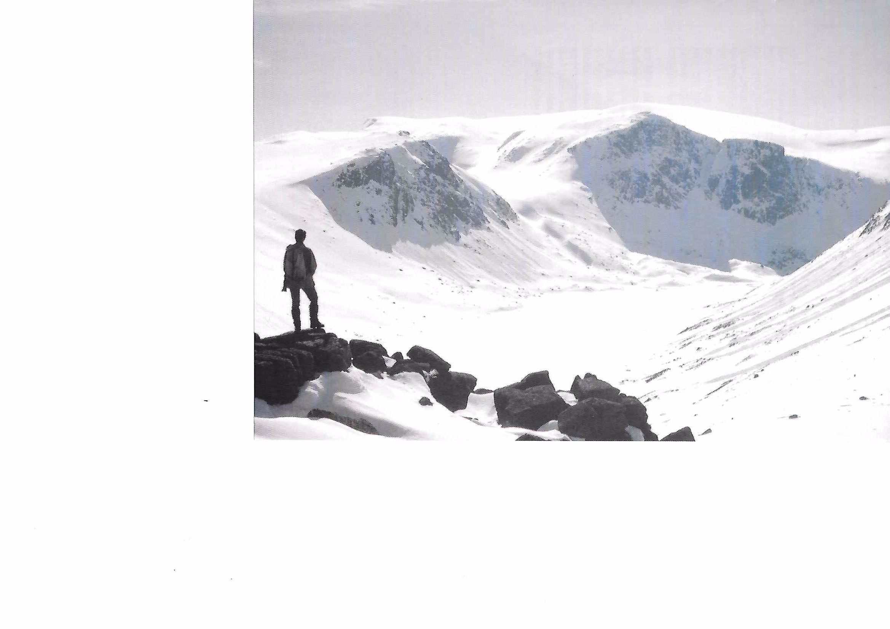
Figure 4: Ben Macdui Beyond Loch Avon (Frank Mellor)
An annual highlight in the early days of the CMC was the winter visit to the Cairngorms. For many members this was their first experience of the magnificent snowscapes and near arctic conditions to be enjoyed or endured in Scotland during the winter months. A particular outing on these hills in February 1970 proved to be one of the outstanding days of an early CMC Cairngorm Meet and at the same time illustrates very well the conditions one may reasonably expect to meet in winter in the Highlands. Our party consisted of Mike Anderson, Jack Ashcroft, Chris Taylor, Paul Goodlad, Dick Arnold and myself and our objective was to traverse the great plateau from Cairngorm to Ben Macdui and back.
The early morning was beautifully clear under a blue sky and with deep snow everywhere. I regret to record that certain members were aided in varying degrees by the chairlift in their initial ascent of Cairngorm. I myself had to endure an uncomfortable "stitch" but the glorious views were ample compensation. As we descended to the west from the summit, we could pick out a column of walkers on the plateau below, resembling a trail of ants and giving a wonderful sense of scale to the scene. The vista ahead of Cairn Toul, Braeriach and Sgoran Dubh Mor was particularly splendid and there was a magnificent view across to Fiacaill Ridge and the neighbouring cliffs plastered in brilliant white snow with huge cornices. The going was fairly arduous as the snow was not sufficiently frozen to take our weight and we were constantly sinking in up to our knees and beyond. We made our way to the Corran Bothy near Feith Buidhe a bothy later demolished following a tragedy hereabouts when a number of children perished in the snows only to find it completely covered by snowdrifts except for the yellow chimney cowl which stuck out grotesquely from the snow. There was a really breathtaking view across to Braeriach with its great coires gouged out of the plateau, all completely snow covered under a cloudless pale blue sky. The summit of Ben Macdui gave further wonderful views, particularly across to Cairn Toul and the peaks beyond it, down to Carn a'Mhaim and the great snow filled trench of the Dee and far away to Beinn a'Ghlo well to the south. The Devil's Point, a spectacular peak when seen from the Lairig Ghru track coming in from the south, appeared far below our elevated position as a minor protuberance in this great winter landscape.
It was then that my personal troubles really started as I became very ill and had to retire urgently behind snow covered boulders. The "stitch" which had afflicted me most of the way to Macdui suddenly became much worse and on the return journey it was impossible for me to walk any distance without stopping for breath. To make matters worse, the wind began to increase and great black clouds were approaching from the north west. The weather closed in rapidly and the spindrift, combined with falling snow in the mist, soon created near "white out" conditions. Before long I was reduced to walking a few yards at a time and later on I was able to think only as far as the next step in the deep snow. Most of the party had gone ahead but fortunately for me, Paul and Dick stayed behind and were able to give much needed assistance. I had never before felt so weak and ill on any mountain trip and I was deeply and genuinely grateful to my good friends for their assistance without them, my predicament would have been very serious indeed. The last small ascent to the top of Fiacaill a'Choire Chais seemed never ending, but we could at last descend the ridge, suddenly emerging from the mist and snow to look down on a hive of activity on the ski slopes below. Within a few yards the howling winds and generally adverse conditions on the plateau had been left behind and after descending only a few hundred feet it was impossible to imagine the violence of the wind and lashing snow which had made our return so difficult. It remained only for us to stagger down to the ski lift and safety.
All walkers undertaking this traverse would do well to bear in mind the remoteness of Ben Macdui even in these days of chairlifts on Cairngorm and the sudden changes of weather often experienced in these great hills. I have never forgotten the great contrast between our glorious sunny walk to Ben Macdui in such wonderfully clear conditions and that return journey on which my personal discomforts and the adverse weather conditions combined to create a real nightmare. The views we had enjoyed throughout the morning of these great snow covered mountains had been outstanding under a clear winter blue sky, but the day ended with gales, spindrift, dense mist and snowfall a combination of the elements among the most difficult and dangerous we learn to face on our beautiful yet challenging mountains.
- The Ascent of CMC Slab or Fighting off the Poachers
In the Derwent Area guide, tucked in amongst the extremes on Froggatt Edge, is a climb with the name CMC Slab . Yes, it's named after your very own Castle Mountaineering Club. It came into being in the dim and distant past when Froggatt was considered "worked out" and people hadn't heard of Heartless Hare or Hairless Heart or any of the other more recent weirdly named routes a time when cavemen lived and people didn't use chalk or wear pink tights, when one could go out with 120 feet of number four climbing rope, two runners and the old Sheffield Froggatt guide and be ready to climb anything in sight as long as it wasn't above Severe . "What's that", you say? "Nostalgia isn't what it used to be?" You could be right there.
What was I talking about? Oh yes, CMC Slab . It started as an idea from Mike Parkin. For those who can't remember Mike he was over six feet tall with an incredibly long reach. He could nearly out reach me but then I'm only five foot eighteen. He liked delicate slab climbs and he had recognised the possibilities offered by the slabs between existing routes on Froggatt. He was due to take a new job in North Yorkshire and wanted to have an attempt at the slab left of Heather Wall before he moved on. Knowing how secretive one must be about new climbs, he asked me if I could go with him to look at it one evening when it would be quiet. But the summer went by and we somehow didn't get the chance, so just before he had to leave, we went to Froggatt on a Sunday.
We had a close look at the slab and it looked possible, if a little green. I abseiled down with a wire brush and cleaned everything which looked vaguely like a hold. Predictably, word rapidly spread along the Edge and before you could say "EB" a crowd had gathered.
I top roped Mike and after a couple of attempts he managed the awkward bulge above the ledge without using holds which could properly be said to belong to Heather Wall . The slab above went well but before he could descend to attempt leading the new climb, another couple had roped up and were already on our route. Our route! A short pause to allow the booing and hissing to subside.
The leader put a runner in Heather Wall and managed the bulge. Mike was at the bottom to fight off other interpolators whilst I stayed at the top ready to throw sand down the route if this scoundrel looked remotely like managing the top slab. I needn't have worried. In attempting to reach the finishing pockets his feet slipped, resulting in a satisfying pendulum into the right wall of the corner. Another attempt ended the same way and after a few encouraging words from me like "You'll never make it I should pack up and go home" and "Come back when you're feeling on form" he decided that his right shoulder couldn't take any more and he did in fact pack up. Mike then took his chance to lead the climb in fine style and I seconded.
Thus CMC Slab entered the history books as "A rather artificial climb using the stances and protection of Heather Wall ". I see that they've squeezed another route in further left. It must have been climbed by a very thin man so as not to overlap CMC Slab !
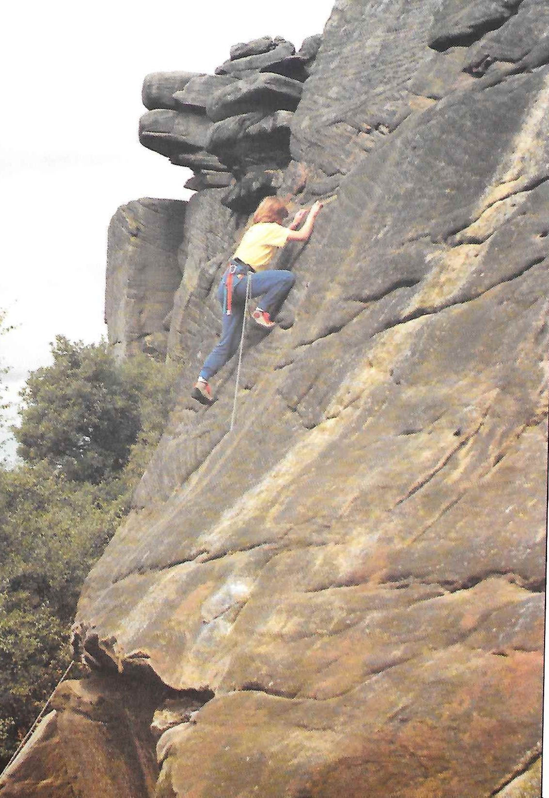
Figure 5: Claire Coates on CMC Slab.
- The Lundy Experience
Sailing across the bobbing sea towards Lundy, we thought we were so clever!
For the price of a day return we had just enough time to crack off the "Classic Rock" route called Devils Slide . The ship's time table indicated a visit of three hours on the island before returning, which was just enough time to walk over to the other side of the island, climb the route and then walk back. It was as simple as that. That was until the loudspeaker announced…
"INFORMATION TO THE PASSENGERS - THE SHIP WILL REACH LUNDY AT FOURTEEN HUNDRED HOURS AND DISEMBARKATION WILL TAKE APROXIMATELY FORTY FIVE MINUTES. WILL PASSENGERS BE AT THE EMBARKATION POINT NO LATER THAN SIXTEEN HUNDRED HOURS. THANK YOU."
"Hang on, I thought we had three hours!"
We did, from the ship's arrival to its departure, but unfortunately that did not take into account leaving and boarding.
"Oh No!!"
Ian Lauriston was beginning to look upset at the thought of wasting all that money on the crossing. We could tell that by the way his bottom lip started to curl.
"Wait a minute, we can still do it if we run, but we will have to make sure that we are first off the ship."
We all reluctantly agreed to give it a go, all except my wife Serina, who was totally repulsed by the idea of running!
That left four of us myself and Ian plus Debbie Hall and Rodger C. nicknamed, Codger , all waiting in the queue trying to get off that damn ship.
Dry land came thirty minutes later leaving one and a quarter hours left to find the route, climb it and get back. We ran.
Navigation was easy due to the fact there was only one path
- from one side of the island to the other - and by the time we
located the top of the rock route, it was time to head back.
Thirty minutes left! , Ian and Codger lost their bottle and with hearts pounding, started to run back to the ship. I was determined not to waste my investment so, without hesitation, started scrambling down the descent gully to the base of the slab. Debbie shouted "Could I have a go?" Time was pressing. A roped ascent? Not on your nellie!
Running up the slab I met Debbie below the top pitch, dumbstruck from witnessing 300 feet of climbing in one and a half minutes. The feat was due not so much to climbing skill but more to the superb friction of the granite. She threw me the rope.
"I'm determined to climb the last pitch at least!" she screamed.
Debbie was very keen - what could I do but take the rope for her to follow?
The last pitch of Devils Slide is the crux and the best pitch of the route and she enjoyed it, but not the sound of the ship's horn far away in the distance.
Fifteen minutes left!
"For God's sake Debbie, go. I'll catch up with you as soon as I've coiled this rope."
"Please, I used the rope, let me coil it."
"Don't be gallant, go!"
Reluctantly she scrambled over the cliff top in her usual care free manner and quickly disappeared from sight. Three minutes later I emerged onto the skyline.
What followed was the run of my life: SACC race in under thirty minutes! It must have been, because I caught up Ian and Codger panting down the path. Another blast from the ship's horn turned Ian's face ashen.
"Where's Debbie?"
"She must be here, because there is only one path and I certainly haven't passed her."
We stood there, frozen to the spot. At this point there was another blast from the ship.
After a brief discussion we realised that she must have gone to the opposite side of the island. Should we wait or… Another blast from the ship sent us running towards the beach to be greeted by Serina, close to tears, with the last boat waiting to sail across the short distance to the ship. - "But you can't go and leave our friend behind on the island," pleaded Ian to the seaman.
"We must leave NOW!" boomed the man, sympathetic but stern.
It was at this point that Ian gallantly volunteered to stay behind and search the bleak moors for poor Debbie, but again he was rebuffed.
"No one is allowed on the island without permission. Please get on the boat!"
With that, we left our Deb to a fate worse than death, all alone to doss behind a stone wall or a tuft of grass. We sat there on the deck, still geared up, rucksacks and ropes all over the place and surrounded by tourists with slightly bemused expressions. Then came the announcement on the loudspeaker….
"WILL THE CLIMBING PARTY WHO HAS LEFT A GIRL CLIMBER BEHIND ON THE ISLAND to rot PLEASE COME TO THE BRIDGE AT ONCE!" All eyes turned our way. I could have died! The ultimate indignation.
That evening we never went to the pub. Feeling totally ashamed of ourselves, we went to bed wondering if she knew which twinkle in the sky was the Pole Star. Since she had found difficulty in knowing left from right, there was little chance! Poor Deb.
The morning came and following the captain's instructions we phoned a number on the island to see if Deb had been found. She had, and there she was, on the line!
"Hullo Debbie, are you alright?" piped Ian.
"Yes thanks," replied Deb. "I found this lighthouse and they were having a party inside - they invited me in and gave me free drinks and food, accommodation for the night and a huge breakfast. I've had a whale of a time!"
We waited at the dockside that afternoon. Ian brandished a club, Codger a crowbar as for me, if I could have reached her I would have strangled her! "Come here Debbie!" '
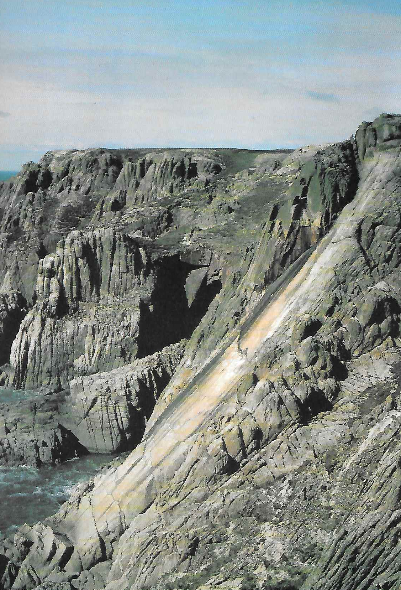
Figure 6: Devil's Slide Lundy
Missing photo: First Pitch Devils Slide.
- Pillow on Pillar
Big Al had forgotten to bring the tent and we would have to collect it on the way although this meant travelling fifteen miles in the wrong direction. As we managed to miss the correct turn off the motorway we did in fact travel thirty unnecessary miles on the southbound carriageway before we finally headed north, my ruffled equilibrium soothed by a generous helping of Alan's smooth, mellow whisky. We arrived eventually at Wasdale, quickly donning duvets against the cool October air, and helped Pat to pitch the tent by torchlight. I snuggled down thankfully into my sleeping bag.
6.00 am - Feet thundered past the tent and I popped my head out to see Big Al's figure disappearing across the field. Some members of our party were already on the move. The remaining six of us emerged rather more slowly and it was a considerable time later that we started up Black Sail Pass.
Arriving at the col, we took the climbers' traverse across the shattered northern slopes of the mountain - our destination Pillar Rock. By 2.00 pm we were at the foot of New West , our chosen route, ready to climb. The rock reared up magnificently for 300 feet above a fearsome gully. I was impressed! It was very intimidating. Frankly, I was petrified. It was our very first long climb.
Our friends the early risers were already half way up their climb by this time. We watched them as we ate our sandwiches. By the time we were half way up our route, they were back at the foot of New West . They watched us until Pat, who was leading our rope of three, emerged at the top of the last and most difficult-looking pitch on the climb then Big Al shouted up:
"You got a bit off route there, Pat. You've just finished the crux pitch of Sodom ! And you haven't finished when you reach the top. It's quite a climb to get back down again."
"You'll be alright" he added. "You've got a rope!" and they set off back over the Pass to the comforts of the campsite and the Wasdale Head Hotel.
Sodom was VS. We were supposed to be climbing a V Diff! I was very much aware both of the fearsome gully 250 feet below and the impossible-looking pitch above. The fear which tingled through my veins was for me an entirely new experience.
There was hardly room to move on the tiny stance I was now sharing with Dick. Older and even less experienced than Pat and I, Dick was all sinew and guts - motivated completely by willpower.
"Try standing on my shoulder, Mary" he said.
With this difficult manoeuvre accomplished, I managed to launch myself into that strenuous VS chimney. My battles with the capping chock-stone are better not dwelt upon but eventually, and very thankfully, I found myself up there, actually on top of Pillar Rock.
What a magnificent place to be! About a quarter of an acre of rough rock to scramble over, surrounded on all sides by precipices. Lakeland peaks lay all around us and Ennerdale, filled with forestry-planted pine trees, stretched from the foot of our mountain as far as the eye could see. But by now the pale October sun was looking very low in the sky.
5.00 pm in October.
"How the hell do we get off this Rock?"
Dick and I walked round and round the perimeter looking for possibilities, whilst Pat manned the top of New West or was it Sodom ? ready to make contact with and offer help to those still below.It began to feel like evening.
Six members of another party arrived on top, having climbed up various routes. No-one knew the way down! Eventually, the leader of the other party discovered a route he could reverse. He threw down a rope and proceeded to see his party off. Just as he said "Good Luck" to me and disappeared over the edge, our last climber arrived at top of New West . Dusk. Lots of rope to control!
"Sorry - we must keep moving. We've got to get off this damn Rock."
When we reached the bottom it was dark by the time we reached our sacks it was pitch black. Pat's torch he was the only person who had one! enabled us to cross that frightful gully and traverse just a little way before reaching a tiny grassy shelf, where we decided it would be prudent to stop. - 10.30 pm All clothing donned but no clothing census taken
- a mistake that. Four of the party were lying close together on
a single exposure blanket. Pat and I occupied our only exposure bag.
Lights. Down there in the Ennerdale valley. Flashing lights and shouting - but who? We flashed back. Soon they went away again. They won't come up to get us until morning, I thought, perhaps the others were managing to get some sleep. Everyone kept quiet another mistake, that.
I remember Pillar Rock looming in the darkness, quite near to us. It was like being surrounded by black velvet, not a flicker of light anywhere, just a vague paler shade of black in the sky over Scarth Gap. I remember the plastic of the exposure bag flapping round my face in the strong gusts of wind I remember being aware that we had slipped a little way down towards the edge of our grassy shelf where the mountain dropped away into the darkness and I remember everyone suddenly becoming alert and aware as the lights of vehicles appeared down below, streaming up the Ennerdale valley and coming to a halt at the end of the road. We could hear a dog barking. Six little lights formed a crocodile and started up the mountain. Cockermouth Rescue Team had arrived.
Our party now stirred itself. Two different members of the party took their turn in the exposure bag and we wrapped up a third in the blanket. It was at that point we discovered he was only wearing jeans! We nibbled Turkish Delight as we watched those torchlights moving up the mountain. I will never forget that sight, or the magnificent men who reached us some forty minutes later the hot sweet milkless tea they gave us what nectar! , the clothing, the bars of chocolate, the big alsatian dog and their radio call sign: "Poppopoppoff".
"Okay, we've found all six of them. No-one hurt. Over."
We each had a personal escort down, in spite of which Pat had a rather nasty fall. Near the bottom of the mountain the Warden from Black Sail Youth Hostel was waiting and as we walked the last half mile to the Hostel it started to rain. Eventually we found ourselves sipping hot soup in the Hostel and enjoying the friendly hospitality which the Warden provided. We were very glad not to be still out there on the mountain.
We had hardly finished breakfast next morning when our CMC escort arrived to see us safely back over the mountain pass to a reunion with our friends at Wasdale. Not abandoned to our fate after all!
- The Siege of Clachaig Gully
On one of the earliest Glencoe meets the sun actually shone on both the Saturday and the Sunday! Faced with the long drive home that night, a group of us looked for a climb which didn't involve a long approach and decided on Clachaig Gully . We packed up and were about to start out from Lagangarbh when someone asked what we had in mind.
"Clachaig Gully? That sounds like a good idea. Mind if I come along?"
By the time we had set off from the pub car park the numbers had swollen to about twelve and it had the makings of a good epic. I can't remember all the names but Mike Anderson, Ashley Turner and Dick Arnold were definitely among the team.
The early pitches went well and we made rapid progress despite the numbers. Then we came to the cave pitch Mike led this and I followed. No one else felt like leading it so, sitting on the little saddle at the top of the pitch, I began top roping people and lowering them down the other side of the ledge where they could unrope and walk into the bed of the gully. It was pleasant enough sitting up there in the sunshine and when the last man was up I swung down to the ledge, coiled the rope and walked up the gully fully expecting to find a top rope on the next pitch. What greeted me was a very glum circle of people.
"Your pitch" said Mike, before I could object. This was the famous Jericho Wall, dripping in water and slightly overhanging. My first attempts all ended in failure, which was in itself only slightly frustrating compared to the added annoyance caused by the water streaming down my shirt sleeves. The problem was getting a foot onto a small incut hold about eight feet up the slime covered wall offered no positive foothold and what hand holds there may have been were similarly slippery.
Reversing the route was totally out of the question so, rummaging in my sack, I dragged out my secret weapon. A peg! This, placed at head height, gave me enough assistance to gain the foothold the holds above were then within reach and the rest of the wall was easier. I threw the rope into the gully and the rest of the team began their ascent. About half the team were up when I heard the clatter of equipment as another group reached the top of the cave pitch. Then the distinctive twang of a Glasgow accent drifted up. If they found us using a peg on their route there would be a lynching!
"Get that peg out quick, the Scots are coming," I shouted down. Two taps of the hammer and the evidence of our transgression was removed.
The Scots were left to climb the pitch by their own devices, giving us enough time to implement our escape in the best Castle traditions of tact, diplomacy… and self preservation.
[[
 ]
]
- The Castle Wall
Indoor climbing walls have long provided both amusement and bemusement to climbers and spectators alike. The Castle climbing creation is no different in that respect but, due to its unique location in the clubroom, its frequency of use tends to reflect certain phases of interest within the Club. An increase in the wall's popularity usually occurs at times when there is an influx of new members or novices, or when there is a strong climbing contingency.
The climbing wall's construction and development in the early seventies paved the way for the sudden burst of interest it received between 1978 and 1981. This was chiefly due to the production of the first ever guide book to the outcrop and a large enthusiastic group of climbing members. Competition within the Club reached a peak in 1980 and this is reflected by the new routes section in the back of the guide book, a good example being the route called The Merry Monk . This hotly denounced route was climbed by Tom Benson with the use of a hold that was allegedly out of bounds half an inch to the right! . It was quickly climbed without the use of the offending hold by Steve France who renamed it Short Black Curly Hair but the arguments did not end there due to mounting ethical disagreements. Both Tom himself and Richard Staniforth who also attempted to "take the glory" were over six feet tall and could easily reach past the crux move - much to the annoyance of Steve who could not do it without making a ridiculously hard move. Despite several weeks of contemptuous lip the true claimant to the fourteen inches of newly climbed rock was never decided - but who cares anyway?
Steve Hartland, as a reflection of the times, promptly free climbed all the aid routes, and for entertainment Keith Naylor thrust his person onto the rock to create Lunge or Plunge . The route should really have been named Lunge and Plunge, since it allowed a means of reaching the top using only two footholds and one hand hold. If you think that sounds amazing then ponder over the fact that The Crack was climbed from top to bottom using only one hand jam. You are advised not to attempt this unless you are proficient at mid-air jamming!
The Club supplies various items of equipment for members or visitors wishing to climb on the wall, including ropes, helmets, and various old pairs of rock boots. It is always stressed that climbing is at one's own risk and that utmost care is required.
The Castle must be one of the few clubs to have its own climbing wall - so why not give it a go?
Please Note…. all routes graded over HVS can only be climbed wearing lurid coloured tights and headband. Please also remember that the use of chalk is forbidden!
Good Luck.
Figure 7: The Castle Wall
- A Cautionary Winter's Tale
It was the Club's Easter Meet in Glenshee 1978. Base camp was established at our now traditional wild campsite by the Clunie Water on the Braemar side of the Cairnwell. Good Friday saw Harry, Charles, Anne, Jenny and myself crammed into the Maxi with packs and camping gear for four days. The car was left in the ski car park and a note containing, in accordance with official recommendations, details of party and destination was left at the ticket office - the official Mountain Rescue Centre. We struggled, with full packs, up the chair lift and off to Loch Vrotachan. Anne appeared somewhat nervous and apprehensive - she said it was because she hadn't done much skiing, but in retrospect I suspect it was well justified apprehension at the thought of spending three nights with Harry and Charles.
The weather worsened as we skinned up to Carn a'Gheoidh, and by Loch nan Eun spindrift was hurtling across the frozen waters. Hardly a suitable campsite, but by dropping to the north we found enough shelter by a peat hag to sort gear and pitch camp. The peat was rock hard, so the tent was anchored only to pegs buried in snow and well trampled. Water was found at the bottom of an eight feet deep pot hole in the snow with rather delicate access. The two parties disappeared into their tents for the night and emerged only when driven by overwhelming natural necessity. Gales and snow swept around all night, occasionally punctuated by mysterious noises from the other tent. Even a cry of help would not get us out tonight! Meanwhile, unbeknown to us, back in civilization, police forces in five counties were mobilising.
Come morning, the tent had survived and so had Anne. A sunny start had us doing the Beinn Iutharns but we were soon back in clag and Charles was having problems with his new high-tech sticky skins which had taken a dislike to the cold weather. Gales rose again that night and rising above them were intermittent muffled screams. We pulled the hoods of our ducks over our heads and pretended not to hear.
The tent had shrunk by next morning to half its former size as the weight of snow pressed in. Charles and Harry assured us that Anne was alright she was less sure. Four of us skinned up to Carn an Righ followed by Charles towing his skinless skis - he'd make a good doggie-walker! A superb run in powder snow down to Gleann Mor made it all worthwhile. Back at camp, the bags were getting damp and by next morning only the tips of the tent poles were visible. With some difficulty, the pegs were unburied and with full packs we had a great ski down to the Baddoch Burn then after a last skin up to Loch Vrotachan, we joined the crowds on the Cairnwell run.
The car was still there, but Anne was convinced that someone had been through her handbag but not taken any money - three nights with Harry and Charles does take a little getting over! Mugs of coffee in the cafe where we heard that Sheffield had been cut off from the world, airports closed and the Glenshee Mountain Rescue called out. Well, it had been a bit wild. A little later I wandered over to the counter to report our safe return.
"Er, yes, er, just a, er, minute" said the lad and disappeared to return with the manager and Leader of the Mountain Rescue Team.
Over the next few weeks the story was pieced together. By nine at night the white Maxi stood in splendid isolation in the middle of the empty car park. The police were informed and the car number dispatched for the Swansea computer to work on. Meanwhile, back at base Kate and Al had arrived and were settling in for the night. Kate was rudely disturbed from a privy squat by powerful torches, Land Rovers and the full might of the Braemar police force. Somewhat shaken by this disturbance Kate was interrogated about the whereabouts of the Kime party. The officer did not react very kindly when told that these malingerers were camping in the hills. Meanwhile two mountain rescue teams had assembled and the ski tows were brought into operation to search for the "lost" skiers.
The Swansea computer had informed the Braemar and Sheffield constabularies of the identity of the owner of the Maxi.
At Hallamshire Close, Sheffield, the Kime house was empty so the neighbours were knocked up for questioning.
"Oh, they're camping in Scotland somewhere."
"Yes, we've just found their car - nothing in it but an old pair of wellington boots and a ladies handbag." ,! Leaving our friends to the vision of their eccentric neighbours barefoot on the mountain, the officers departed. An hour later, our friends phoned West Bar police station in Sheffield when they remembered where Jenny's father worked. Across the Pennines, the University night porter was awoken from his duties and questioned as to the whereabouts of the Professor of Engineering. Lancaster Constabulary found his house empty as well.
"He's in Scotland" said the neighbours "at the cottage."
No way were the Inverness Constabulary in Fort William going to drive two hours to that address at that time of night: a phone call to their local contact would have to suffice. Campbell Morrison was dragged from behind the bar at the Clan to drive three miles, wake up the Professor and bring him to the phone.
"They're camping in the hills and they know what they're doing. Call your rescue off!"
The message got back to Braemar and all teams were stood down. The Braemar police, on returning to base, stopped by to rouse Kate and Al again in order to tell them in no uncertain terms that Dr. Kime was to report to the police station IMMEDIATELY he got back.
Next morning the staff were back at work at the ski centre and as the ticket office opened, the lad put his hand in his pocket.
"Och, Hamish, a laddie left me this note yesterd….." As Hamish said: "The lads dealt with him - he won't forget again in a hurry."
Back to base camp in the glen where we discovered that our tent had disappeared, then found the shreds neatly folded and packed in Charles' tent. Kate and Al returned from a day of ticking and passed on the message. , - Down to Braemar.
"My name's Kime, I believe you want to question me in connection with…"
"Och, that fiasco on Friday, come on in."
Somewhere in all this there must be a moral about parked cars, about leaving notes to the police, and rescue teams being called out unnecessarily, and of training and certificates and of the freedom to roam the hills unhindered and to take responsibility for one's own safety and actions?
- Rumble Groove
What do I remember about The Castle? Well it's people, days out climbing, for instance days with Dave, well known for his enthusiasm for climbing anything, anytime although preferably a traditional route on Kinder. If it's a vegetated chimney and it's just starting to rain, well that's approaching Nirvana. The ideal route description might be, "Climb straight up for 200 feet with much botanical interest a fine ten foot chimney then leads to the top. First ascent 1892."
One day Rosie, Dave and I headed for a Peak District equivalent: short, insignificant and green, on some boulders which think they're a crag. Yes, the in famous Rumble Groove on Carl Wark. Not heard of the route? You're doing well if you've heard of the crag!
Dave and Rosie had though, in fact it was Dave's third attempt at this route. He had spent several hours pitting his strength and skill, definitely in that order, against the rock it's that sort of route , retreating with bruised arms, legs, ego, everything. Today would be different.
We approached the crag. Crag, did I say? I noticed some rocks huddled together. "That's Carl Wark," said Dave. " Rumble Groove is well over to the left there." "Oh, really?" "It's super. A real classic."
I tried to sound enthusiastic but failed miserably. We uncoiled 150 feet of rope, 130 feet of which was totally unnecessary. Peak District climbing is like that: crags that are too short, ropes that are too long and, as we were to find out, cracks that are too wide.
Dave tied on and Rosie belayed, so I was free to escape from the midges and to wander about looking at the groove from different angles none of them in the least encouraging. I hadn't seen Rosie for a while and we chatted whilst Dave grunted. After half an hour we'd caught up on all the news after an hour we were dragging up insignificant crumbs of gossip.
Dave was struggling. First there's a wide crack leading up left. The jams are painful, insecure, slimy and the crack overhangs slightly: a gritstone climber's paradise! Standing on a rock at the foot of the crack starts you off. Then you must lurch onto the holds on the left slight indentations in the vertical rock and power your way up the green crack.
The first runner is quite low, only useful if you fall off the first nine inches of climbing and have an attentive second. A number forty two hex would have been helpful higher up but Dave had left it at home. I suggested wedging two hexes together or passing up a large stone to jam in the crack I thought the latter might appeal to his traditional inclinations. But he'd had enough.
He'd lost count of his attempts to get off the ground and offered me the rope. Now I can't resist a challenge and certainly this was one. However, I am a coward and my first priority is always to get a runner above my head well, even one a bit higher than the last would help. Somehow, to hurt yourself falling off a "Classic Rock" route on Cloggy or Gimmer might be acceptable, but to fall off a boulder near Carl Wark, well the indignity of it all.
So with much ingenuity and a lowering of ethical standards this was a traditional route after all I slammed a Friend in as high as I could. This superhuman effort reduced me to a quivering jelly, wobbling back next to Rosie. I quickly returned the rope to Dave after Rosie had refused it she's got more sense! With the confidence of another runner and fresh from a good rest, Dave attacked the rock with daring spirit. We gave him lots of encouragement by pointing out that we had only five minutes left before we were off home and suddenly, to our great surprise and consternation, he was cheering from the top. Oh no! That meant that we'd have to do it.
I went next. After an interminable fight in the crack, leaving it dripping with blood, I emerged secretly vowing never to let Dave pick the route again. Rosie went next, the fastest ascent yet.
Our attention was then drawn to the only other route on these boulders, Green Crack . A similarly attractive climb, its name being most descriptive a green, slimy, rounded crack. They gave me the rope and, teetering and complaining, I reached the top. I was surprised when they declared it twice as nasty as Rumble Groove . So if you're wanting to reduce someone's enthusiasm for grit, I thoroughly recommend a day out somewhere near Carl Wark. As for climbing with Dave… you have been warned!
- Ridge Routes in the Land of The Rising Sun
This area had long been neglected by the Club, although older members could recall long days spent hacking through ivy on exposed ridges and ascents of swaying trees. Spurred on by these legends and by reports that chunks of stone were falling off some of the routes, the Club held several meets in this area so close and so unfamiliar to most Club members the clubroom roof. These meets were inaugurated by Sean, who unfortunately was unable to ensure good weather. The first one was cancelled by an eighteen inch snowfall and the second gave us a wonderful experience of what it would be like to install a window in the middle of Kinder Downfall. We had a chance to look at the roof only very briefly while Andy indulged in the legendary pastime of ivy clipping. We were by now a little more aware of the problems we had to tackle and the committee set aside three further Saturdays for the purpose.
Our next meet was somewhat exploratory but we found a number of loose slates and a decaying chimney on the outside. Andy, Charles and Frank constructed a spider's web between trees, telegraph poles and the chimney stack and set about reconstruction, whilst Dave and Tom prepared Ready Mix, filled the gaping holes under the eaves and did some pointing. A successful day, marred only by the sight of a forlorn starling looking for the entrance to its nest next to the chimney stack. The major problem then remaining was how best to stop the mortar falling off the inside of the roof and annihilating the members. We had many ideas but little real knowledge. However, fate was kind and brought us a new member, Chris, who in a rash moment admitted he was a builder and in an even rasher moment volunteered to come on the next meet. Perhaps he had seen our new chimney stack and realised that we were real craftsmen, or perhaps he had seen the chimney stack and realised …
Two weeks later we met again. The chimney was still standing and Chris was very polite about our work but we hoped he wouldn't look too closely. We were then shown how to use mortar trowels and since this appeared so easy we got on with the job of knocking down the eighteenth century mortar whilst Chris fixed the slates on the roof with a total disregard for the ropes and ladders with which we had festooned ourselves on the previous meet. By lunch time the floor was deep in old mortar and we now had to fill in the holes we had made. This was not as easy as Chris had made out and a number of us resorted to mortar stuffing by hand rather than by trowel. While Chris hung to the rafters by his toe nails and mortared the higher reaches of the roof, Roger swung from the planks and delivered well aimed dollops down the neck of anyone who passed below. Andy swung across the walls on an elaborate arrangement of slings and during his girdle traverse of the clubroom demolished only two of the spotlights.
Mike and his son Mark joined us for the afternoon and while Mike filled, Mark delivered pots of gunge to the inaccessible corners of the clubroom. Disposal of the debris took quite some time, as did the removal of Roger's wedges of mortar from our spines. We had at least completed the work at the end of the clubroom nearest the climbing wall which we now felt was a little safer, even if the holds did require a dusting. A rather smaller party met to deal with the remainder of the roof. With the numbers available, we also managed to clear and re point two sections above the upstairs room, which offered rather less of a challenge than the previous week due to their accessibility. Whenever we plan to work on the roof, come along: it's great fun and Your Club Needs You.
So, if you see a member in climbing gear with an ashen face and a concrete helmet, he's probably just been climbing in the Land of The Rising Sun.
- The Search for The Drunken Duck or "Doesn't Anybody Want to Buy Any Petrol?"
It was a fairly typical weekend in Langdale. It had rained on and off more on than off all Saturday. Some of us had convincingly demonstrated that one could get just as wet in half a day as in a full day, by walking up Side Pike in a monsoon. After a meal back at the campsite, the talk naturally centred on which pub we should honour with our presence that evening. "How about The Drunken Duck?" I suggested. "The what? Where's that?" "It's a pub somewhere between here and Coniston. It's supposed to have some good sing songs."
Armed with this scant knowledge, a convoy of four vehicles set forth. A look at the map will show quite a network of minor roads in this area and with the rain persisting sic it down there was no one around to ask for directions. Suddenly we saw the lights from a garage ahead so we drove onto the forecourt. A man ran from the office with a mac over his head, thinking he had some customers.
"Excuse me. Could you tell me where The Drunken Duck is, please?" A look of disappointment crossed his face. "Yes, next left, then right about half a mile further on." "Thanks mate."
We drove off into the dark and rain leaving the dampened attendant to walk back to the shelter of his warm office. Five minutes later the second car pulled up at the garage. The attendant again put his mac over his head and ran out.
"Excuse me. Could you tell me where The Drunken Duck is, please?" "Yes, next left, then right about half a mile further on." "Thanks mate." And that car drove off.
Five minutes later a third car arrived and an even damper attendant emerged. The same question was asked and the same reply given. u A further five minutes and the fourth and final car arrived. As this car drove off the now soaking attendant was heard to cry in an agonised voice: "Doesn't Anybody Want to Buy Any Petrol?"

Figure 8: The Search for the Drunken Duck.
- Traverse of the Cuillin Ridge
We roused ourselves from our brief but comfortable bivouac on the Bealach a' Gharbh Choire, the pale dawn heralding a perfect Skye day. Way below us to the east we could see that remote and magical spot below the fine peak of Sgurr nan Stri where the River Coruisk flows into Loch Scavaig. To the south, the Small Isles Soay, Canna, Rhum and Eigg were visible across the calm Hebridean sea, with the fascinating and shapely peaks of Rhum in particular attracting the attention.
It was 3.45 am on Tuesday 27th May 1975, the occasion being the Club's Spring Bank Holiday meet to the Black Cuillin, the party comprising Ronny Hindmoor, John and Lesley Evans, Sean Jennings, Andrew Hothersall, Martin Coggins, Anne Pendlebury and myself. We had left Glen Brittle at eight the previous evening and scrambled up Sron na Ciche via Collie's Route , reaching the top in time to see a gorgeous sunset. Later we had romped along the crest of the ridge in bright moonlight, reaching its southernmost peak, Gars Bheinn, before heading back to our bivouac site. Now, with the stars fading rapidly, we packed our sacks and climbed to the top of Sgurr Dubh na Da Bheinn where, having warmed ourselves up and reached a superb viewpoint, we paused for breakfast.
Ahead, the jagged crest of the Main Ridge encircled the head of Loch Coruisk to its final peak and our ultimate objective
- Sgurr nan Gillean a long day's scrambling away but
tantalisingly close beyond the coire. We soon reached the famous Thearlaich Dubh Gap, the first and most difficult rock pitch of the day. We abseiled into the Gap and the pitch out of the Gap was well led, the rest of us thrutching up one way or another - the rock was polished and strenuous and we took close on an hour to get our party of eight across. We left our sacks whilst detouring slightly from the Main Ridge to take in Skye's highest point, the paramount Sgurr Alasdair 3257 ft .
The next section, around Coire Lagan, is possibly the finest stretch of the whole trip: Sgurr Thearlaich, an abseil down to Bealach Mhic Coinnich, the surprising Collie's Ledge to Sgurr Mhic Coinnich and the magnificent scramble over An Stac culminating in the unique Inaccessible Pinnacle. We soloed up the moderate but very exposed east ridge of the Pinnacle and abseiled down the short west face. It was now 11 am and getting very hot time for lunch.
The ridge becomes sustained, brilliant scrambling: Banachdich, Thormaid, Ghreadaidh, Mhadaidh, Bidein Druim nan Ramh, An Caisteal, Bhairnich, Bruach na Frithe: the roll call of evocative Gaelic names familiar to every Skye afficionado. Each Munro has a number of tops which all have to be visited, and even on a clear day, route finding is not straightforward in places. It must be very tricky in mist, compounded by the occurrence of magnetic rock to confuse the compass.
We were now beginning to get tired and dehydrated. It is well known that there is no water on the ridge and we were carrying large water bottles, but on such a hot windless day, our supplies of liquid had dwindled rapidly. Fortunately there were still a few snow patches lingering from the winter to provide us with a welcome supply of cool melt water otherwise we might well have had to give up.
The Bhasteir Tooth is usually done via Naismith's Route , an easy but very exposed pitch and the last place on the ridge where a rope is needed. Unfortunately, when we arrived a large army party was having a prolonged abseiling epic on the route, so we circumnavigated it by dropping into the Fionn Choire to the north before tackling Am Basteir itself.
We arrived at the final peak, Sgurr nan Gillean, at 7.30 pm, nearly eighteen hours including the bivouac after leaving Gars Bheinn, not a bad time considering the size of the party and the sweltering conditions.
After staying together all along the ridge we now split up, some wanting to hurry down to the Sligachan Inn to ensure a pint, the aesthetes preferring to linger and enjoy a perfect evening in the hills, chatting, admiring and photographing the views and consuming the last remnants of food.
At last we reluctantly left the tops and wearily set out along the seemingly interminable track back to Sligachan, reaching it just before 11.00 pm, twenty seven hours after leaving Glen Brittle: twenty one peaks, many of them Munros, fifteen miles of ridge with at least 10,000 feet of ascent and the roughest, wildest, mountaineering Scotland has to offer. It was my longest day out in the British mountains - and the best!
- A First Himalayan Adventure
- Nanda Devi Sanctuary September, October 1977
The Nanda Devi Sanctuary is situated in the Garwhal Himalaya about two hundred miles north east of Delhi, twenty miles from the border with Tibet and fifty miles from the western end of Nepal. Within the Sanctuary and linked to its eastern rim is Nanda Devi the "Goddess Nanda" and India's highest summit . In the days of the British Empire it was also the highest mountain in the Empire and the area has long been of particular interest to British mountaineers.
The Sanctuary consists of a ring of mountains seventy miles in circumference, minimum height 17,000 ft, average height about 20,000 ft and with no fewer than nineteen peaks over 21,000 ft. It is some two hundred and forty square miles in area and drained by the Rishi Ganga which breaks through the rim on the west in a stupendous gorge. For about fifty years surveyors, explorers and climbers including W.W. Graham, Longstaff, Bruce, Rutledge, Wilson and Somervell were unable to penetrate the "Inner Sanctuary" either over the rim, or at the point where the Rishi Ganga breaks through the ridges coming down from Maiktoli and Changabang. It was in 1934 that Eric Shipton and Bill Tilman with three Sherpa porters managed to force a route through the gorge at this point into the "Inner Sanctuary" and in 1936, Tilman and N.E. Odell reached the summit of Nanda Devi itself.
There was a lot of climbing activity in the Garwhal area in the 1920's and 1930's Bill Murray's Scottish Himalayan Expedition was there in 1950, but the whole area was virtually closed to foreigners from the time of Chinese invasion of India in 1962 until 1976, except for joint expeditions including Indian members. One of these was Chris Bonington's party which made the first ascent of the vast white granite dome of Changabang 22,250 ft , approaching from the Ramani Glacier over Shipton's Col to the Changabang Glacier and then via the narrow east ridge to the summit.
After that and before our visit, there had been only a limited number of other climbing expeditions into the "Inner Sanctuary" and for the last few years access had been restricted for conservation reasons the local nomadic shepherds had found another high level route into the "Inner Sanctuary" and were jeopardising the burral wild blue Himalayan sheep and other animals by overgrazing.
For me it all began when the telephone rang one evening in October 1976. A friend at the other end asked: "Would you like to join us on a trip to the Himalaya?" The immediate answer was, of course: "YES!"
The concept was for a small lightweight party to trek into the Nanda Devi Sanctuary and possibly "have a look at" one or more of the peaks.
Originally it was to be a mixed bunch of four "middle aged" friends from other climbing and skiing trips: Donald an architect, Hamish a writer and Stephen a physicist in addition to myself. We thought it was a good idea to have a doctor in the party so Frank was invited to join us. Later, two younger members, Peter a computer expert and Ian an engineer, joined in to make a total of seven. We had intended to go in the pre monsoon period, but during our preparations we learned that there was usually a short period of more settled weather post monsoon and before the onset of winter. We changed our plans so that we could do the nine day trek into the Sanctuary as the monsoon faded and have good weather whilst we were up there.
So as not to be too much of a burden on our hosts whilst completing formalities and purchasing provisions and fuel, we split the party and travelled out to Delhi on different dates. The first group took the "Musoorie Express" up to Hardwar and then went on by local train to Rishi Kesh and by bus up to Joshimath. Ian stayed on in Delhi to meet Stephen, Frank and myself on our arrival. The four of us completed our shopping, made a day trip to Agra to see the famous Taj Mahal erected in 1632 53 and then followed up to Joshimath. The others had rented a motel room there as a base where they could leave gear whilst they went off on a week's acclimatization trek up the Bhyunder Valley "The Valley of the Flowers" visited by Frank Smythe in
- We followed on a four day trek, camping in the meadows at
10,000 ft and climbing to the Sikh temple at Hemkund at 14,000 ft. Unfortunately we were rather late to see the flowers at their best like us, they were being battered by the monsoon rains.
The whole party assembled back at the motel room where we spent the next three days purchasing rice, flour, ghee and vegetables, making everything up into approximately fifty six pound porter loads. We completed arrangements for a lorry from Joshimath to Lata which we shared with a five member Australian expedition heading for Changabang. There was a shortage of porters and we had to use a herd of goats each carrying about twenty two pounds in panniers, in addition to our thirty two porters.
The trek proper started on September 10th and half an hour after leaving the roadside, we were in the headman's house in the village of Lata drinking rakshi. We staggered out two hours later to climb a steep track up the wooded hillside to our first "Tilman Stage" campsite, where we used the actual platforms levelled by Shipton and Tilman when they found this route into the Sanctuary forty three years previously.
The route into the Sanctuary crosses the Dharansi Pass at 15,400 ft, descends to a lovely wooded alp at Dibrugheta and then traverses high above the Rishi Gorge. It was from here that we caught our first glimpse of "The Mountain Goddess" as the clouds parted for a few minutes.
Deodi campsite was reached after crossing the Rishi Ganga on a rickety bridge and there the porters made a sacrificial offering of a goat, cooked over a wood fire and then eaten for supper that night.
Our next campsite was at Ramani at the foot of the gorge forming the entrance to the "Inner Sanctuary". The goats had to return from here as the next obstacle was a 1,500 feet high almost vertical damp cliff, covered with loose vegetation, which we found quite difficult and intimidating shortly after that we came to the famous "Tilman Slabs" with a drop of about 1400 feet into the Rishi Gorge below. Fortunately there was a fixed rope across them, left by a large Japanese party which had gone up ten days previously.
From Tilchaunani campsite we had magnificent views of Nanda Devi 25,695 ft and Nanda Devi East 24,391 ft , the peaks on the Sanctuary rim, the confluence of the rivers dividing the South and North Inner Sanctuaries and which we had to cross also the area near the snout of the Changabang Glacier where we hoped to make our base camp.
We rigged a pulley system with ropes from boulders to get porters, loads and ourselves over the first river torrent at the bottom of a deep ravine. The porters refused to cross the second river as it was necessary to wade through almost waist deep glacier melt water with only a hand line for support, so we paid them off and ferried the loads over ourselves. It was a very cold and tired team that camped alongside the river that night. The following day we walked up the valley on soft springy turf, with ever changing and exciting views of the surrounding glaciers and peaks. We set up base camp in an absolutely idyllic position at 14,000 ft, with abundant supplies of juniper wood and a freshwater spring, alongside the Uttar Rishi glacier at the foot of the North Ridge of Nanda Devi which rose 11,000 feet above us.
For the next four weeks we went out singly or in groups of two or three for periods of up to four or five days, exploring the Inner Sanctuary, crossing the glaciers and camping in some utterly enchanting situations, returning to base camp for a rest and to pick up more provisions for our next trip.
All too soon, just as Stephen and I were packing our sacks for another four day trek, the first porters returned to carry out for us. They were three days earlier than we had arranged because they expected a change in the weather. The others agreed that Stephen and I should complete our plans, leaving them to sort things out with the porters.
When we got back to base camp there was only one tent and two porters there, all the others having left for Joshimath three days earlier! The four of us followed next morning. There was a light covering of snow which enhanced the autumn colours, but which on the steep shaded sides of the ravines and the gorge made the route finding and the going very much more difficult. Late in the afternoon, our porters refused to go any further and we were forced to build a stone platform for one two man tent into which all four of had to squeeze.
Next morning we realised just how right the porters had been, as on the next section snow was still lying on extremely steep grass and rock slopes where a slip would have resulted in a fall of at least 1,500 feet. We descended with the utmost caution, the porters frequently calling for a rope which in fact provided only psychological belay as it was impossible to drive an axe into the frozen ground and there were seldom suitable rocks for secure belays.
At Ramani campsite an upset billy can of water scalded Stephen's foot but fortunately, as a result of my first aid treatment, he was able to continue the walk out next morning. We camped again at Dibrugheta and reached Lata the following day, tired and hungry but elated at having completed one of the most interesting and challenging treks one is likely to tackle in a lifetime's walking. The journey by Indian public transport back to Delhi was only slightly less interesting and challenging. There we were briefly reunited with the rest of the party before flying home. Although the Sanctuary is at the present time a "forbidden area" there are still lots of beautiful, interesting and remote places to visit in the Garwhal Himalaya.

Figure 9: Nanda Devi from the Rishi Ganga

Figure 10: Nanda Devi fromwithin the Sanctuary
- High Spirits
Some years ago, whilst visiting the battle site of Culloden Field on a damp and misty September day, I was subjected to a feeling of utter dread. Subconscious emotions told me, "You must get away!" People could wander round the graves from clan to clan for hours but my whole visit lasted less than twenty minutes. A year later in the middle of the vast winter landscape of the Cairngorms, I suffered the same experience.
It was a typical Castle plod, made worse by dense cloud and deteriorating conditions, but our spirits were high even though Chris Holmes, Dick Savage and myself felt more at home on rock than playing the mountain man. The steep slog towards the Cairngorm plateau was no fun, especially when the skiers were gently gliding past on the ski tow whilst making sarcastic comments and giving us sneering looks. Our replies ranged from "Yes, we do enjoy walking up" to "No, it's not tiring when you're fit".
Before our language became offensive we saw an ideal opportunity for one upmanship. By climbing a high banking of snow at the side of the tow run, we could jump and grab the unoccupied tow bars!
Weee!… up we went and after a short period spent adjusting the angle of our boots on the snow, a perfect glide was obtained on our Vibram skis! Protests were heard further down the tow from "paying" participants and we raised our overmitts in reply they could not see the two fingers inside, but I think that the message was plain enough!
Once over the wind swept edge of the plateau we were on our own and left to enjoy the beauty of the mountain solitude. The clouds were white with snow as we came to the col beside Lochan Buidhe. The mountains merged with the snow into total whiteness, so bright that our duvets appeared translucent. The silence was oppressive except for the crunching of the snow. I remember vividly the way we walked, as if in a slow motion action replay. This was my first and only "white out", the only reality was the person in front until suddenly a snow bank resolved itself into focus in front of my eyes. It was not the snow bank that I saw but a hole in the snow, approximately one metre square. We entered, and as the tunnel opened out, were stunned with surprise by the ice village which greeted our eyes. It was without doubt the Ritz of all snow holes with room after room each connected to the other and complete with its own table, chairs, raised bed and shelving systems… all made out of ice. It must have been a distant relic from a winter survival course at Glenmore Lodge but the unnatural silence, together with the ambient light that soaked through the ice walls, transformed the shelter into a mortuary of past memories. Imagining ghosts, goblins and yetis, we ran out of the tunnel and back to the welcoming "white".
Another mile and our high spirits changed. I can remember approaching the final slopes trying to find an excuse to turn back, but there was no rational explanation why, and so we went on. The cairn was found quite by accident we were standing on it! because the snow covered all but the brass plaque on top which shows the various peaks and directions. Even though we had reached our goal, the summit of Ben Macdui gave us no pleasure. There was no vista to enjoy, only grey dread and an urge to go home quickly. The usual summit rest, comprising a bite to eat whilst soaking in self-satisfaction, was limited to a quick photo before we legged it back down the mountain.
The campsite talk that night re-lived the arduous knee deep slush and the "white out", but we never talked about Ben Macdui. I am sure that strange perception of malevolence was shared subconsciously between us, although at the time, I never gave it much thought.
Recently I was reading a book entitled "Scottish Ghost Stories" and to my surprise, discovered that there is an alleged ghoul on Ben Macdui called "The Grey Man". Although never seen, it has been responsible for campers fleeing for their lives, leaving tents and equipment behind, totally convinced of their impending doom if they remained there any longer. Gruesome stuff!
- Round Edale Walk or "Who Went Where and Who Said What?"
An innocent enough walk around Edale. "You can't get lost up there," was the bar room atmosphere at half past ten on Thursday evening. Well you can. If you don't take your map and compass, whistle, torch, contact lenses if appropriate and it's raining, the cloud banks are low, the gale force on the Beaufort Scale is approaching eight and you don't check your position regularly and keep the group together…
Ten of us left Mam Nick car park at 8.45 am to tackle the Walk clockwise. Before Lords Seat the furious Westerly had us reeling and two returned to the car park. Eight then battled on for Brown Knoll a little spread out but on arrival at the trig point we were only six in number. We got cold standing there in the wind, straining our eyes through the mist for the other two, both ladies. Concern. "Secretaries are dispensable." E
…mutter… mutter… mutter… J "Let's push off in the true spirit of mountaineering comradeship."
"Here they are." Two figures loomed out of the mist. But it wasn't them. "We haven't seen them we followed the path all the way." So we were eight again, but a different eight.
"Hope they are together." "She's never been up here before hasn't got a map." E "She knows the topography she's got common sense." E
"Your decision." "Let's go on and see what happens." We walk on to Edale Cross.
"They're here." "You're disqualified missed out Brown Knoll check point."
"Rubbish, we followed the right hand side of the dyke. Pointless going off route to the trig point." "We really will keep together now." And we basically did… to the shelter of the boulders below The Pagoda.
"I've just been talking to someone up there who I thought was one of us until I pushed my nose into his face." "We need a Kinder sixth sense move to the top of Grindsbrook. We'll stop there for a bite to eat." "OK, it's alright. Don't bother to get your map out." So ten set swiftly off into the wind, rain and mist, full of confidence.
"It's rough going. Too much up and down the groughs." "Stop. Let's think where we are." "More to the right." "Up to the left." "We've lost them now." Five of us left. "Let's stick together." "The stream is going north. This must be the Kinder River." "This way." "Move south." "No. Move over. Still more east." "It's like caving above ground." "Drop into the groughs at the head of Grindsbrook." "This is it." "Damn! It's Crowden Brook, not Grindsbrook." "We've gone round in circles." "No we haven't! Just a horseshoe a mile to progress half a mile." "Are we stopping to dry out tights and long johns?" "I wear socks the same as every one else." "The feminist touch." "Right, now for Grindsbrook, I bet someone's there." Someone was. "I've been here five or ten minutes. Dropped into the groughs head of Grindsbrook on a compass bearing. I haven't a map."
It was 12.38 pm. "Don't go down there. It's best to wait until we get to Golden Clough if you want to go down." Six of us stood at the top of Golden Clough. "Who's for going down?" "Well…" "Tea in Coppers." "Newcastle Brown in The Nags." "You can tell who are the walkers!" "You can tell who are the climbers!" "Who's doing what?" "That's it then." Two went down for refreshment. Four went on. Too swiftly again, I fear. "We haven't seen the trig point." "It's over there." "This is the head of Jaggers." "Doesn't seem deep enough to me." Neither was it. "That's the Snake road down there and we are walking out." "It's Blackden." "Turn around for Crookstone Knoll." "I'll watch her down there and you up here keep in contact." "You can get off the plateau but you may be fifteen miles from where you want to be." And so off the plateau towards Crookstone Barn. Two lasses and two lads. "Those trees must be two of the toughest in the Peak." "Down the Roman Road to meet the car at The Cheshire Cheese." "There's a quicker route than that." "Oh! Someone has moved the fence." And so we were on the road at Edale End. The two lads approached Lose Hill under the railway near Fiddle Clough. It was 3.20 pm. The two lasses walked along the road to meet their transport at The Cheshire Cheese. Lose Hill wasn't in fact traversed by both the lads: one followed the track around the south side of Lose Hill into the wind. Slow tiring progress. "I waited here out of the wind so we'd be together to traverse Mam Tor. It looks vicious up there." And so it was. Racing cloud touching the summit, the light gone, crawling on hands and knees. It was 5.05 pm. The rest of the cars had gone. "I've never been in wind like that before."
And who sheltered at Kinder Downfall for lunch and never saw Crowden Brook or Grindsbrook at all? What a Who dunnit! Oh the freedom of the hills! u I call an EGM. The motion: "The CMC should affiliate to the British Orienteering Association." Proposed Guess Who? Seconded Get Lost! Plus ten supporting Kinder members.
- Rhinogs Meet
Arriving at Dinas Farm in the early evening of Friday I was surprised to see Sean, Mel and family already prospecting for a good pitch. We had pinched an extra day to climb on Tryfan and although we had stopped in Beddgelert for a beer with Dunk, I had expected to be first at the campsite.
"Evening Sean, not been hanging about then?" "No, we got off early and had a good run down. Had a good day?" "Aye, we've done Grooved Arete . Bit nippy on the fingers but a great route. Nobody else here?" "Not seen anybody yet. Nice spot this. I think we'll get settled and put a brew on." "OK Traverse tomorrow? Weather looks promising." I put up our tent a fair distance from Sean's as I wasn't certain how young Pete would react to his first night under canvas. After lamb chops it was nearly dark after discussing transport arrangements it was completely dark and after drifting off to sleep for five minutes it was light again! Car headlights illuminated the canvas. Dave and Jenny with Andy and Rosy. "Hey Frank, doing the Traverse tomorrow?" Andy wanting to get it sorted. "Yep. Wake you up at six." "Six? Bit early, in't it?" "Yeh, but Sean's keen not to be late back and Mel's going to come and pick us up." Always blame somebody else! "OK then." Drift off back to sleep again. Ten minutes later same performance with Vanda. Anyway, now everybody knows. Half past five, alarm goes off. Damn thing's somewhere under the flysheet. By the time I've struggled with the zip it's stopped ringing. Bash it one anyway. Start a brew and leave it to Jennifer. Stick head out lovely! Sun coming up and pale blue sky. Over to Sean's tent and whisper instant reply. Over to Andy's nothing. Try again but this time stick head round flap. Now there's a bit of snorting and the bag starts to move. Suddenly the top half of it rears up and out pops a bleary eyed face. "Andy. It's six o'clock." "Yes I know. I was just waking up. You needn't have bothered." As if this isn't enough I get a withering glare from Rosy out of the gloom at the back of the tent. I sure wouldn't like this job every morning! Vanda's reasonably civil though and Colin manages a muttered reply. That's everybody. Dave and Jenny are doing a slightly different walk and, knowing them, they've probably been gone an hour already. Whilst having a cuppa outside the tent I hear the first cuckoo of the year and a few minutes later a heron flaps over. People are emerging, gathering rucksacks, pulling on boots, sorting out gear. Should be ready for off soon. Wait a bit where's Colin? "Anybody seen Colin?" Nobody has. The beggar's gone back to sleep. He's eventually persuaded out and we're off in two cars round to Trawsfynydd. We park just off the track up to Cefn Clawdd, at an old quarry site. We're walking by 8.15 am. Not bad considering we'd been aiming for 7.30! We go up over wet ground, finding and then losing a track to join the ridge just east of Diffwys. It's warm work and pullovers are soon shed. On Diffwys it's cooler.
Roughish going with detours for crags and deep rocky trenches on the way to Ysgyfarnogod Sofarso good . Now "The Celtic Badlands" and Clip. Much cooler now and the strongish breeze is blowing clouds of May blossom up from the valleys. Strange how its petals melt when they touch the skin. Elevenses on Clip. Ratatouille for Vanda, cheese butties for me. Craig Wion is tough going but the weather is being kind. Snowdonia is getting it and we can see fresh snow on the Arenigs, but we're in the clear apart from the occasional flurry of blossom. I'd like to have a beer with Dunk. The way is barred again by rock walls and trenches.
Profanities from unexpected sources accompany our passage. Only the graffiti on the rock walls forces the realization that we've made it to the Roman Steps. Lunch on the big Rhinog! Easily up after an awkward first couple of hundred feet. Past Llyn Du and into sunshine on the long shoulder leading to the summit. A small group of backpackers is just leaving. A nice rest there. Quiche Lorraine for Vanda, pasty and Guinness for me. I'd like to have another beer with Dunk!
Those who've been here before assure us that we're psychologically over half way and that there are paths over the remaining ground. Ten minutes later we are hearing that there is no reason why an apple shouldn't fall upwards from a tree. It's something to do with statistics. One thing's for certain. There's a helluva dip between Rhinog Fawr and Rhinog Fach it feels like sea level in Bwlch Drws Ardudwy.
There's a difference of opinion at the Bwlch. Colin and Vanda go up past Llyn Cwmhosan and the rest of us go straight up. We give it some fettle and get there first. Colin's not long, but arrives with the news that Vanda is missing this one out. We catch her up just past the imposingly situated Llyn Hywel. Y Llethr is the biggest hill of the day but doesn't feel it, the going is better. There are grassy paths. Apples do fall upwards. The pace quickens up to Diffwys. The evening sun delineates the majestic north face of Cader Idris. What a tremendous walk! We're dropping from the south west ridge of Diffwys to the col. Over Craig y Grut to Bwlch y Rhiwgyr to Sylfaen, to Mel waiting with the car and lastly to the fleshpots of Barmouth. Fish and chips, beer at last with Dunk. The atmosphere is great!
As we sit drinking, the dreadful thought occurs to us that the pub may be closed tomorrow Sunday . We ask the landlord who confirms our suspicions. Andy returns from the bar.
"It is dry tomorrow, Andy," says Rosy. "Oh, have you heard the weather forecast then?" asks Dunk, waking up… Unfortunately it is wet. Steady rain that doesn't look like stopping. Ian has arrived. We cheer him up by telling him what a good day he missed yesterday. It's a late start. Vanda's due back in Sheffield but the rest of us drive to Barmouth and pay 12p for a walk across the toll bridge. At the other side first Colin and then Dave decide it is not worth it. Colin goes bird watching and Dave goes to dry out, having discovered his anorak isn't waterproof. The dwindling party plods on.
Jennifer insults Ian by telling him he'll be the next to go. It works. He stays. We follow the disused railway along the south side of the Mawddach estuary to Penmaenpool. The rain lashes our backs.
Lunch in the shelter of the pub it is closed . Over the toll bridge to Borthwnog. Only 1p this time. The rain has stopped but there is a strong drying wind.
Pleasantly up through the woods to Garth gell. A jay hops across the path. A squirrel scampers ahead. We link paths and forest tracks back towards Barmouth. It showers on and off. We put anoraks on and take them off and on and off. We finish at Barmouth's Panorama Walk. A commanding view up the estuary and out to sea. Cader's hidden behind the clag. Back in town, Colin and Dunk are dozing in Dave and Jenny's car. We're back and dry.
The evening passes by as meals are cooked, then there's chatting outside the tents in the gathering gloom until it's too cold for comfort.
Monday morning. Grey and unsettled. Tops look likely to be cloudy. The Kimes suggest the Berwyns. No one objects, so it's down tents and off to Llandrillo.
A pleasant spot this: a spired church and an elegant bridge over a fast flowing river. A gentle path leads up onto the broad ridge where we stop for a bit near the "Wayfarer" plaque. The clouds have rolled away and although it's still overcast, there's no rain. A strong breeze makes us don cags for the ridge up to Cadair Bronwen. The long ridge rolls us on to Cadair Berwyn and Moel Sych where we turn north west and head back over marshy ground toward the valley. Lovely warm sunshine welcomes us back to the village. Our weekend in Wild Wales is over.
- A Brief Look at Lahul, Zanskar and Ladakh
If you glance at a map of the Himalaya, extending across to the north of India, it is approximately 900 miles between Godwin Austen K2 in the Karakoram and Everest in Nepal much the same distance as from north to south of The British Isles. The terrain of the landscape contrasts vividly in both cases, but the tract of country between K2 and Everest is the greatest contrasting landscape in the world it ranges from tropical forests to mammoth rivers and contains the world's highest snow and ice clad mountains from which issue the world's longest non polar glaciers. It also includes the high plateau desert landscape that characterises the country of Ladakh, close to the Karakoram. Ladakh is a very dry area, as indeed is the Karakoram itself. However, the mountain peaks of both Ladakh and neighbouring Zanskar rarely reach 7,000m whilst those of the Karakoram exceed 8,000m, giving that little extra precipitation.
If you wish to visit the Himalaya during July and August, the areas of Ladakh, Zanskar and the adjacent province of Lahul and Spiti are the places to plan for. The further east you go towards Nepal, the more rain you can expect in the monsoon period.
Enough of this meandering introduction suffice to say that with August our only choice of holiday, Harry Woods and I planned a trek in 1982 through the Zanskar Valley from Lahul to Kishtwar. We covered 180 miles in just under three weeks over the Shingo La 5,096m to Padam 3,600m , the capital of the Zanskar Valley and then out again over the Umasi La 5,300m an eight day trek of contrasting terrain, from the desert like landscape of Zanskar through lush green forested gorges down to Kishtwar.
General Bruce, having reached a 20,000ft summit to the east of the Shingo La in 1912 wrote: "Zanskar to the west, though bare enough compared to his view east in all conscience, is wild, broken and savage to a degree a more inhospitable country it would be hard to find but some of the peaks are fine and boldly shaped… the great difficulty in Zanskar… is the number of streams to be negotiated… its intense savageness attracted me." He goes on to say that the people who live there must be very hardy and able to withstand great cold.
It is this country one enters on the ten day trek from Darcha, the police post in Lahul, to Padam. Our trek also included a diversion to visit Phuktal, the most impressive monastic site in Zanskar. Bruce pointed out that the country is "wild and broken" but that the people are reasonably kind and interesting, inhabiting the highest settlements of any size in the world.
Kargiakh and Thangso at 4,200m over the Shingo La have no doubt been the frontier posts between Zanskar and Darcha for thousands of years and only recently has the policing stance been eased. This is indeed a dry and bleak environment, certainly the most spartan I have encountered in my three visits to the region but welcome after the three day trek through the virtually uninhabited country from Darcha and its many "streams to be negotiated".
Michel Peissel, an anthropologist much travelled in the Himalaya, gives good insight into the Ladakhi character. His book "Zanskar the Hidden Kingdom" is a very readable description of a walk through Zanskar, only two or three years after Ladakh was opened to tourism, the borders having been closed by the Indian authorities from the end of the Second World War.
There is much to write about in nearly three weeks travel through these ancient sparsely populated valleys, but suffice to say that it was a pleasant relief and a revelation to walk into Padam having followed wild and broken gorge after gorge for over a week. Padam, with its population of a thousand or so, is the capital of Zanskar effectively half way along a hanging valley some eighty miles long with oasis like settlements surrounded by mainly dry, barren, mountains. The only ways out lie over passes of some 4,000m to 5,000m to the north, south and west. To the east is the outlet of the Zanskar River, not a feasible route in summer, we were told, but in winter becoming a hundred mile frozen highway giving access from Padam to Leh the Capital of Ladakh and the confluence with the embryonic Indus far to the north. Peissel's description of Zanskar "The Hidden Kingdom" is indeed an apt one.
We stayed in Padam for two days and then set out on our eight day trek over the Umasi La to Kishtwar and Kashmir. The Umasi La is a more serious pass than the Shingo La and is surrounded by interesting peaks. It had been our intention to camp for two nights high on the pass with a peak in mind but this was not to be. We climbed to the pass near the summits but only stayed for twenty minutes as the weather was blowing in from the valleys of Kashmir. We resolved to get down the glacier on the far side as soon as possible rather than camp high, an hour's descent through jumbled ice falls and moraine snow in poor visibility.
What were the highlights of our trek? Perhaps "highlights" is the wrong description, but the contrasting temperatures in Zanskar certainly come to mind from one hundred degrees fahrenheit at high noon to below freezing at nights the Buddhist culture in Zanskar and the contrasting Moslem culture down in the valleys of Kishtwar the unclimbed peaks of considerable interest around the Shingo La and Umasi La, not too huge and clustered more dramatically above the Umasi La not to mention crossing the streams and keeping the party together! On our approach to the Umasi La we managed to end up with Harry and I on one side of a glacier snout and melt waters quite extensive at seven o'clock in the evening and with our porters, tentage, food and sleeping bags on the other side. Our lot was a forced bivouac at 16,000 ft at the side of a crumbling glacier snout with thoughts of snow leopards, until the dawn arrived and we eventually found our way through the jumbled terrain to our two porters and a welcome meal.
It was a fine trek. We were a little austere in our planning with a very basic diet and at the end of three weeks it certainly felt as though some energy had been expended! The weather was kind with only one and a half days of poor weather in eighteen unluckily the one poor day was the day we traversed the Umasi La. In 1984 Harry and I were joined by other Sheffield based climbers for another visit to Ladakh. This time eight of us travelled out to India at different times in July and August to meet up in Leh some sixty miles north of the Zanskar valley. The fact that we managed it at all was remarkable, as Kashmir and Punjab were not in a very settled state at the time and we had made contingency plans to go further east to the Garwhal if Leh proved inaccessible. Despite having travelled out in four separate groups, all eight of us including Frank and Jennifer Mellor met up in Leh during the first week of August for a trek in the Marka Valley.
I can thoroughly recommend the Marka Valley as an experience in gentle Himalayan travel, certainly the way we did it and particularly in contrast to our trip of 1982. Taking advantage of the tourist office facilities in Leh, we took with us an Indian Mountaineering Foundation Guide and two horsemen. The Marka Valley trek is a regular summer tourist route of some seventy to eighty miles, a round trip from Leh which crosses two passes, the Ganda La 4,450m and the Longmaru La 5,220m . From the Ganda La we had a rather hazy view north west to the Gasherbrum K2 massif and south to the Kishtwar peaks. We had planned a trekking peak ascent which turned out to be a sortie into the Kang Yissay group. We established base camp at about 5,000m in an idyllic situation and attained the north summit of Kang Yissay 6,090m and a subsidiary point La Ribla 5,960m on the opposite side of the Kang Yissay glacier from the principal peak.
We were eighteen days on this trip including four at base camp. The highlights of the holiday were many. Leh, being the capital of Ladakh, has a military garrison and is on the centuries old Karakoram Pass trade route between Tibet and India it is more in touch with twentieth century living than Zanskar. Nevertheless, three of us are fairly convinced that we saw and I've got to use the expression a "Yeti like creature" leap over the boulder strewn slopes of Kang Yissay at five o'clock in the morning soon after we had left base camp on our eleven hour day on the peak. Our first impression was reinforced later when we failed to recognise the species on referring to the flora and fauna of the region on our return to Leh.
The Hemis Gompa, some three hours by bus from Leh, is a fine example of Buddhist architecture some five hundred years old. Even better is to walk 1,000 feet above Hemis to the tiny sanctuary of Goatsang where the Lama regularly scrambles up Grade IV rock routes to maintain the prayer flags that span the valley. Hemis is the centre of the Buddhist festival held each year in May after the winter snows which cut off the valley from October to April have receded to allow thousands of pilgrims to visit Ladakh.
This article hardly does justice to our visits to Ladakh in 1982 and 1984. I quote from the pre war writing of Dr. Tom Longstaff: "Walk for a week or ten days from Simla along the Hindustan Tibet 'road' make a camp in the first valley south of the Satlaj that takes your fancy: from here climb all the peaks on both sides of the valley and you will have had as much good climbing as in an Alpine season and for the same expenditure, if your party consists of not more than three good climbers who can muster enough Hindustani to do their own job for themselves. Here is both pleasure and high mountains. The scale is bearable: on the giants is only labour and weariness: they are best to look at." I would not argue with this, but I am sure that I do not need to remind anyone of the necessity for fitness before getting to altitude, followed by a sensible period of acclimatization. After that, the usual medical precautions to fight the stomach microbes on a short holiday in India are essential for both "pleasure and high mountains". As a postscript, do study your logistics. We were a little short, to say the least, on our porterage when crossing the Umasi La in 1982. If our two porters had not been prepared to carry such heavy loads we would not have made it over the pass, and as a result of their heavy loads, they fell behind on the ascent and we ended up on opposite sides of the glacier snout that August night in 1982.
The mountains of Ladakh are many and varied, most of them awaiting first ascents. Once one moves north over the passes of Kulu, Chamba and Kashmir one enters a new world "Little Tibet" as it has often been called. It is a pocket of high plateau where India meets China in both the geographical and political terms of today. The area has never been released from the tensions which existed in the post war period and it now needs care in its future development, particularly in relation to tourism. The signs of rapid progress are already there and I hope that the mountaineering fraternity will observe the rules. Have you purchased your "Ladakh Zanskar" guide book yet?
Figure 11: Base Camp Below Kang Yissay Ladakh
- Bamford Edge
It was all happening at Bamford Edge on Sunday. Club climbers hard men from seventeen to sixty seven were out in force. The weather was warm and fine, the rock dry and everyone keen to get to grips with the climbing after the winter. I counted a fair number of Club members, friends and associates and I hoped that Mr Darwent, the keeper, wouldn't come and check. His letter had said that he would stretch the normal six climbers at any one time "a bit", but I doubt if he really meant to go quite as far as twenty seven! The hard men were of course doing things which looked impossible some of us lesser mortals only just managed Possibility . A35 proved a popular route and lunch time was enlivened by various attempts to start a climb next to Kelly . This involved swinging on one hand and trying to put one's right foot in one's right ear! One superhuman actually managed this feat without a rope in green pyjama bottoms, what's more! It certainly had the cameras clicking. This was a new fashion for "proper" climbers that season and I was told that girls would be allowed to wear baby doll style, if only for Extremes!
After lunch we all relaxed a little, now that the mobile audience otherwise known as "The Symbolic Mass Trespass" had passed on. Coming over the top to face hundreds of "protestors" eating their butties had been more harrowing than the climbing. Most people gradually drifted towards Gun Buttress, doing climbs on the way, and the afternoon finished with some pleasant easy soloing on the shorter routes at that end of the Edge. We went home tired and happy after the kind of Sunday one dreams about in the depths of winter.

Figure 12: Bamford Edge from Ladybower
- Boat Trip to the Western Highlands
It was July 1983, time at last for our long planned visit to the "Rough Bounds" of Knoydart, especially significant for Jim Thomson since he was to complete his Munro trail in this remote and beautiful area. My old friend Bob Madeley, armed with a yacht master's certificate, had chartered a boat at Loch Carron, a little twenty nine foot beauty named "Jackie", providing the ideal approach to this wonderful district of long narrow sea lochs and dramatically wild hills. The party from Sheffield included a friend David and my son John and we stayed overnight in Edinburgh with Jim and his wife Jean, much appreciating their warm welcome and kind hospitality.
On the Saturday we drove up to Lochcarron village and cast off from the old ferry slip way at North Strome at 5.00 pm on a bright and sunny afternoon. The calm waters of Loch Carron glistened in the sunshine and we enjoyed an evening of dark blue sea, clear blue sky and exquisite beauty with a magnificent panorama across the sea of the sharp serrated skyline of the Cuillin of Skye. The trip was enlivened by many sightings of seals, eiders and guillemots and after negotiating the narrows at the Kyle of Lochalsh we moored at 8.00 pm in Loch na Beiste south of Kyleakin, a backwater of idyllic peace and tranquillity with herons and gulls calling and curious grey seals around the boat.
We set off for Loch Hourn at 5.00 am in order to pass through the narrows of Kyle Rhea on the tide, our main objective of the day being to climb Ladhar Bheinn, the grand hill overlooking Barrisdale Bay. After passing the Sandaig Islands with a view behind of the Skye Cuillin, the boat turned towards Loch Hourn and we looked inland to great misty hills with magical light effects on the peaceful waters. Three cormorants adorned the buoy at the entrance to the loch, arctic terns flew by regularly and later a golden eagle soared effortlessly over Barrisdale. We anchored on a beautiful morning in sheltered Poll a'Mhuineil two miles west of Barrisdale. Bob and John stayed on the boat but David, Jim and I walked along the shore above the blue waters and met our friend David Howgate who had walked in from Kinloch Hourn the night before to camp by the outflow of the Coire Dhorrcail stream. This was a lovely campsite at which to linger, with foxgloves in flower by the stream and with a splendid view over the loch to Beinn Sgritheall, but the clegs were out in force and encouraged us to set off up the hill.
The walk up the ridge east of the coire, deeply incised in its lower reaches, was enjoyed with frequent pauses to savour the exquisite views of Loch Hourn. We traversed steep grassy slopes to join the fine stalkers track which comes up from Barrisdale. We could now see right down to the loch and over to Beinn Sgritheall whose high summits were just visible above a great bank of white cloud, the scene framed by silver birches. As the track led into the coire to join the lovely stream with its cascades and pools, our sight of the sea was lost but the crags and gullies at the head of the coire became visible with patches of beautiful white mist hanging about them. As usual in high summer, innumerable orchids and bog asphodels were growing in the lush green grasses. We headed for the steep grassy slopes to the right of a great rocky promontory, with fine views of the impressive ring of high crags supporting the indented ridge overlooking the coire. Higher up the steep slopes we came across clumps of pink thrift and numerous white flowers of the starry saxifrage.
We arrived gratefully at the narrow col on the ridge and turned up the next section, steep in places and with a charming thrift garden adorning the way above the cliffs of the coire. Then on to the narrow East Summit of the mountain with a view to the south which was grassy, green and wild rather than beautiful and with a glimpse of Luinne Bheinn beyond the dramatic end of the ridge we had climbed. From the cairn we could see down into wild and rough Coire Odhar but the walk along the delightful and airy summit ridge past the Ordnance Survey cairn to the west end of the hill brought us into a wet mist and the wind became very chilly. We hurried back to the East Summit and turned down the ultra narrow and steep sided ridge on the north side to a minor col and then up to Stob a' Choire Odhair, a further delightful section of the walk, albeit still in the mist.
After coming some way down the north east ridge we suddenly emerged from the mist with a fantastic panorama of Barrisdale Bay and the narrow upper reaches of Loch Hourn. Across the great depths of Coire Dhorrcail, the steep buttress of Stob a'Chearcaill protruded grandly and impressively from the mist. This was indeed a wonderful viewpoint and whilst picking our way down the ridge over a number of steep and awkward sections we had entrancing vistas at every step. David H. headed back to Barrisdale and the rest of us left the ridge to return to the boat down steep and broken slopes of long grasses mixed with rocky outcrops a real taste of the "Rough Bounds"! We later picked up David at his campsite before sailing through the narrows and eventually anchoring near Skiary at the head of Loch Hourn, a most dramatic and exciting location at which to spend the night, the loch hemmed in by steep hillsides towering above the boat.
The next morning was peaceful and quiet but with grey mist on the slopes above the loch. After being ferried ashore we followed the delightful lochside track to Kinloch Hourn, a wonderful place having a unique atmosphere of serenity and quiet beauty, with wavelets lapping quietly against the edging of brown and orange seaweeds, the calls of sandpiper and common gull, and the arctic terns hovering and then plunging into the placid waters. The mist cleared from the summit of Sgurr a'Mhaoraich from which we had enjoyed fantastic views down to the head of the loch some years before. We then returned to the boat for the next stage of our journey to Loch Nevis and our remaining Knoydart Munros.
During the sail back down the loch, Ladhar Bheinn massively overlooked our position, a magnificent combination of great coire cliffs and steep supporting ridges. At Barrisdale, a pair of red throated divers took off and wheeled around the boat. We later enjoyed a magical sail through the Sound of Sleat with numerous shearwaters trailing their wings just above the waves, family groups of guillemots on all sides and a solitary gannet plunging into the sea. The weather steadily improved as we came into Inverie Bay with Sgurr Coire Choinnichean towering steeply above the settlement and a long view to remote Sgurr na Ciche at its sharpest, a delight of blue sky and sea with white clouds above green hills and the sun gloriously warm and bright. After a brief halt we sailed on through the narrows of Kylesknoydart and eventually moored the boat by Eilean Maol offshore from Camusrory at the head of the loch. This was a glorious evening with a magnificent view from the boat up to the acute and shapely pyramid of Sgurr na Ciche and the rocky heights of Ben Aden, right in the heart of Knoydart. The weather seemed set fair for our next day when we hoped to enjoy with Jim the last two Munros he had still to climb.
The following morning was misty and grey, and as the dinghy ferried us to the shore at Camusrory a heavy drizzle set in. We walked on to the ruins of Carnoch where the nearby river notoriously difficult to cross hereabouts was so low that it could have been forded easily at a number of places in any event, there is now a footbridge near Carnoch and those purists who object to it can still avoid it if they so prefer. The Mam Meadail track rises in a series of well constructed zig zags, much appreciated by most but which caused Jim to express reservations as to how much additional distance was incurred by following them! The drizzle soon stopped and although Sgurr na Ciche remained in the clouds there was a clear view back down to the colourful saltings of the River Carnach, the yellows, oranges and browns contrasting beautifully with the green grass and grey rocks of the surrounding hills. The air was filled with the fragrance of the bracken and bog myrtle and as we were all wearing shorts the long wet grasses merely freshened our legs.
Once at the bealach we could see right down Glen Meadail to Inverie Bay and over to the distant and hazy Skye Cuillin. A steep climb up broken slopes brought us to the south east ridge of Meall Buidhe which led directly to the South East Top. By now the clouds had cleared from the summits to give magnificent views over this great wild area, in particular towards the Sgurr na Ciche to Sgurr Mor ridge which I had traversed with Jim, John and Andy Smith the previous year. There were also grand views across to Luinne Bheinn beyond great expanses of ice scoured grey rock in Coire Odhair and over to Ladhar Bheinn with its attendant green ridges. We had a delightfully easy stroll to the main summit and back before descending the steep north east ridge which near its top has an area with remarkable split blocks of striated rocks around great fissures. The ridge was awkward in places with rocky outcrops but we pressed on down to the Bealach Ile Coire and over an intervening rise to a lower col, where we looked back to our wild descent ridge with its black lochans nestling on either side. We had our first glimpse of Lochan nam Breac which we were to visit later in the day.
Jim headed across the coire towards a broad shelf leading to the west side of Luinne Bheinn whilst the two Davids and I traversed steep broken slopes up to the high col on the summit ridge before continuing to the far west cairn. This was a superb walking ridge with wonderful bird's eye views down to the green and grey waters of Barrisdale Bay, backed by Beinn Sgritheall. As an added bonus we could now see clearly as far as the distant peaks of Torridon, The Saddle and Sgurr na Sgine, the Five Sisters of Kintail and the great ridges of Cluanie and Affric. We met up with Jim and walked together back to the main summit and then over to the East Top on which Jim at last completed his Munro trail on the very day of his seventy third birthday "Mission accomplished!" We celebrated in the traditional style on this wild and remote hill and I reflected on the many wonderful Munro days shared with Jim over the years, at all seasons, in all weathers and always with the greatest possible companionship and enjoyment.
The descent to the high pass of the Mam Unndalain was slabby, knobbly and awkward but gave grandstand views of Lochan nam Breac in its wild and narrow glen, backed by Sgurr Mor and the waters of Loch Quoich and massively overlooked by craggy Ben Aden. It was already four o'clock and time to say farewell to David H. who was returning via Barrisdale to his car at Kinloch Hourn after enjoying three memorable days with us on the boat and in the hills. He descended the track to the west while the rest of us followed the beautifully contoured track to the east over vast hillsides and down to Lochan nam Breac. Jim and I marched along the undulating track with glimpses of the dark and still waters below until we reached the far end of the loch with its exquisite sandy beach. We both enjoyed a bathe here with a fine backdrop of Luinne Bheinn framed by the steep hillsides above the loch: one of my own long cherished ambitions fulfilled and especially relished after our bathes together in the high lochs of Coire Lagan and Coire'a'Ghrunnda on Skye the previous year.
This would have been a beautiful spot at which to linger, but the time was now six o'clock and we were a long way from our boat on Loch Nevis. After we had picked our way through a wild and trackless river gorge with giant boulders, steep rocky bluffs and lovely trees, a welcome path gradually emerged and we crossed over the River Carnach to follow its right bank. There was a superb campsite where the river bends sharply to the south, with sandy reaches overlooked by large buttresses it was a surprise to come across campers here, apparently so far from civilization. We had already traversed two rocky hills and then diverted to Lochan nam Breac and we now faced a seemingly never ending yet beautiful walk on the riverside track back to Carnoch and Camusrory on a peaceful but grey evening. This had proved a great day, notwithstanding the midges which attacked us brutally whilst we waited for the dinghy. Our big day out on the hill had lasted for over twelve hours and the evening at Loch Nevis was calm and beautiful as we relaxed over a fine meal during which the inevitable feelings of achievement and contentment set in.
Having accomplished our principal objectives in fine style, our next delight was a visit to the magical Isle of Rhum. As we escaped through the narrows into outer Loch Nevis, large flocks of eider rested on the sea and flights of shearwaters trailed the waves above numerous parties of guillemots. After resting at Loch Scresort on Rhum where a number of red throated divers idled around the boat, we spent the evening on an idyllic cruise along the north coast of the island, watching a wonderful variety of sea birds on the cliffs and groups of red deer browsing peacefully on the bright green grassy slopes above the shore. The views to Skye were breath taking with the high serrated peaks of the Cuillin emerging above great banks of white cloud beyond the limpid waters on a perfect warm sunny evening. The sunset was magnificent and it was still light well after midnight the red throated divers were wailing as we settled down for the night.
Jim, David and I set off the next morning for a traverse of the Rhum Cuillin from misty Barkeval to Sgurr nan Gillean. The mist cleared away as we reached the summit of Allival to give a dramatic sighting of Askival and a clear view down to our tiny boat on blue Loch Scresort thereafter the cloud cleared from each summit just as we arrived at the highest point, with wonderful effects of mountain and mist. The sun became very hot indeed on the traverse of the great rocky height of Askival and on the steep ascents from Bealach an Oir to Trallval and from Bealach an Fhuarain to Ainshval, the former a superb narrow and rocky double summit, the latter giving a beautiful grassy walk to Sgurr nan Gillean. After descending to remote Dibidil we set off on the long trek back to the boat on a delightful track high above the deep blue sea with incredible views of nearby Eigg and then of the Skye Cuillin and our Knoydart Munros. John rowed us back to the "Jackie", closely pursued by clouds of biting midges, after another twelve hour day of magnificent hill scenery in marvellous conditions.
The boat sailed from delectable Rhum early next morning on an idyllic day of flat seas and glorious sunshine, with great rafts of shearwaters and guillemots resting on the water. We had exquisite views back to our Rhum peaks adorned by streamers of white clouds and across to the mainland hills, all free of mist under a clear blue sky. We continued on through the narrows at Kyle and back into Loch Carron where a pair of great northern divers flew past.
This was a perfect evening on which to complete an wonderful trip. We had achieved all we had planned and more and the weather conditions had enabled us to enjoy the experience to the full. The combination of the "Jackie" and the wild hills of Knoydart and Rhum had proved an inspiration as rewarding as any, a meet none of us could never forget.
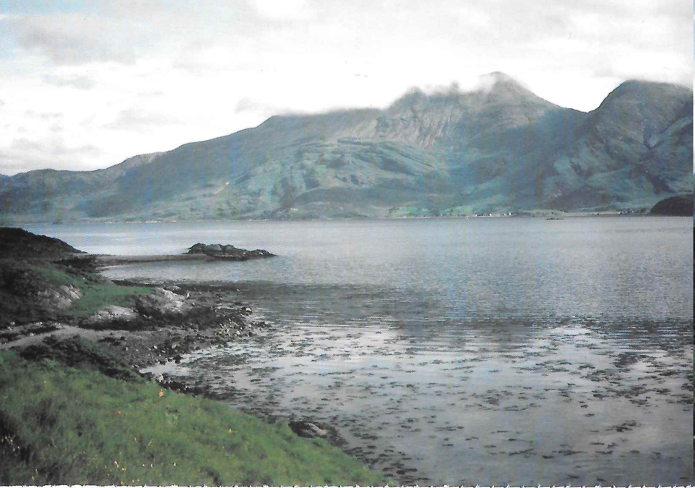
Figure 13: Ben Sgitheall from Loch Hourn
- Benighted on the Ben
It was early January when six of us travelled up to Scotland. Arriving in Glencoe in the small hours, we crept into the bunkhouse at The Kingshouse and collapsed on the floor intending to make an early start. Naturally we overslept, but still managed to leave without paying, creeping past Big Ian who was watching breakfast TV in his house.
There was the usual chaotic sort out of gear at the golf course before beginning the slog up to the CIC hut. Inevitably I put my boot through the frozen crust of peat at the start of the path which, resulting in a cold wet foot. It had been a cold, clear night with a fine dawn but a storm was forecast later in the day. I walked quickly up the coire and on reaching the hut, I collapsed outside and waited for Andy to catch up. Fortunately he was even more unfit than me and I was well rested by the time arrived. As soon as Andy reached the hut it started to cloud over and flakes of snow began to fall. After some discussion we decided to go for Glover's Chimney . Neither of us had done it before and it was a relatively short route, albeit with the crux at the top which we hoped to climb before the weather really closed in. We geared up next to the hut on the pretence that gear you are wearing always weighs less than gear carried in your ruck sack.
It had been freezing hard for a couple of weeks but there had been no thaw consequently, the way up into Coire na Ciste was a wallow in deep powder. This was Andy's first winter route since our trip last year another epic in Crowberry's Left Fork and he was feeling the strain. Despite numerous pleas to be allowed to go down on the pretext that he was totally knackered, I finally cajoled and persuaded him to the bottom of the route where he promptly collapsed into a mini bergschrund.
I uncoiled the ropes and stuffed Mars bars into his mouth in an attempt to revive him. My observation that, although we had not yet started climbing, we now were almost at the summit and so could not possibly go back to the hut, was not too well received!
Leaving Andy to sort out the ropes I wallowed over the bergschrund and managed to get myself established on the first pitch. The ice was very brittle and I despatched a few dinner plates down the hill to keep Andy awake. Confident that this first ice fall was only about a hundred feet long I was puzzled when I ran out of rope about thirty feet from the top and was forced to belay on a couple of poor ice screws. By this time Andy had recovered a little and made short work of seconding this pitch.
The next few hundred feet looked straightforward but devoid of belays, so I asked Andy to start climbing as soon as the rope went tight. The weather had closed in and there was a constant stream of spindrift pouring down on us as we climbed. At the top of the easy section I went too far left and had to teeter back across a rib of rock to regain the gully.
Eventually I arrived below the final chimney and began to look for a belay. After spending some time searching for a peggable crack without success, I noticed a peg sprouting from the gully wall right next to me and hurriedly tied on. I had just managed to arrange the Sticht Plate when Andy arrived. "That was a very long pitch," he said. "Yes," I replied, "about three hundred feet I had to stretch the ropes a bit! We've only got to get up this little chimney and then we are at Tower Gap."
The crux chimney proved deceptively awkward, not helped by a lack of ice where it mattered most. I spoilt the illusion that I was confident and in control by performing an energetic mantleshelf to get onto Tower Gap and then falling down the far side. Luckily the rope drag stopped me after only a few feet.
Andy used his secret weapon, the Alpenstock, to overcome the crux. Not possessing any axes of his own, the only ones he had been able to borrow were a couple of very long walking axes. These actually proved ideal for the route enabling him to reach right past the crux and plant them firmly in the good ice at Tower Gap.
"Can't see what all the fuss was about. Why didn't you just reach up to the good ice on the top?" It was by now almost dark and speed was essential. I set off up the rest of Tower Ridge in a hurry, impressing on Andy the awful consequences of a slip into the unseen void from the ridge. However, there were no further technical difficulties and we reached the top of Tower Ridge just as it got completely dark. "It's OK," I said. "I've got all the compass bearings written down in the front of the guidebook. If we go to the summit we can go down the tourist track from there."
Setting off on the correct bearing, we counted the paces but failed to find the summit. Retracing our steps on a back bearing, we then failed to find the top of Tower Ridge again and so were totally lost.
"Oh well, never mind, if we just keep going heading west we should get down to the col eventually." We felt our way along the summit plateau but eventually ran into steep ground. Mindful of an accident to a couple of friends the previous week in similar conditions, we decided to bivvy. "Let's just dig a ledge by this boulder and sit it out till morning." "What do you mean, you've forgotten your bivvy bag? Oh well, if I empty my sack into yours you can use that, it's got a bivvy extension."
Some time later, after everything was sorted out, we settled down and ate the last remaining chocolate. "Your rucksack doesn't meet the bottom of my cag and the spindrift is blowing up my shirt," complained Andy. "It's incredibly boring sitting here." "I've just found my hip flask and it's half full of Grouse." A drunken couple of hours passed by as the contents of the hip flask were consumed. "What time is it?" I asked. "About seven o'clock." "Oh good, it will be light in a few minutes." "No, it's seven in the evening!"
At this point I threw a wobbler and declared that I was not going to sit there for another twelve hours freezing to death. Andy was also extremely cold and readily agreed to another attempt at descending. We repacked all the gear and after a short conference, huddled round the map, decided to set off on a bearing of due south.
Staggering along by the light of the head torch, we remained roped up in the best tradition, ensuring that we would both die should one of us slip. After what seemed like hours stumbling downhill we finally dropped below the cloud to see that we had emerged at one end of Glen Nevis the wrong end!
Some time later we reached the road and we were not looking forward to the five mile trudge back to Fort William. However, luck was with us and two farmers in a Land Rover offered us a lift. They claimed to have been driving along the glen shining a searchlight up and down it to try and spot a fox which had been molesting sheep. They were armed with a rifle to dispatch the animal but it had proved too cunning and remained hidden. They left us at the Nevis Bank Hotel where we had arranged to meet the others. Inevitably there was no sign of them but after we had drunk a couple of pints the barmaid came over.
"Are you two supposed to be meeting someone here?" We replied that we were indeed. "Oh good, they've left this note for you." Unfolding the note we read the following: "If you aren't dead please can you go to the Police Station and tell them. We have gone to the Red Squirrel in Glencoe."
Trudging round to the Police Station we informed the policeman on duty that we were still alive despite appearances to the contrary and asked for directions to the chip shop. Failure to get a lift to Glencoe at midnight forced us to pay for a taxi and we arrived at the Red Squirrel somewhat dispirited and tired.
The others were pleased to see us and we were made to relate our story.
"Did you tell them at the Police Station that you were back safely?"
I replied in the affirmative.
"When we went to report you missing they were really good to us and made us all cups of tea!"
There's no justice.
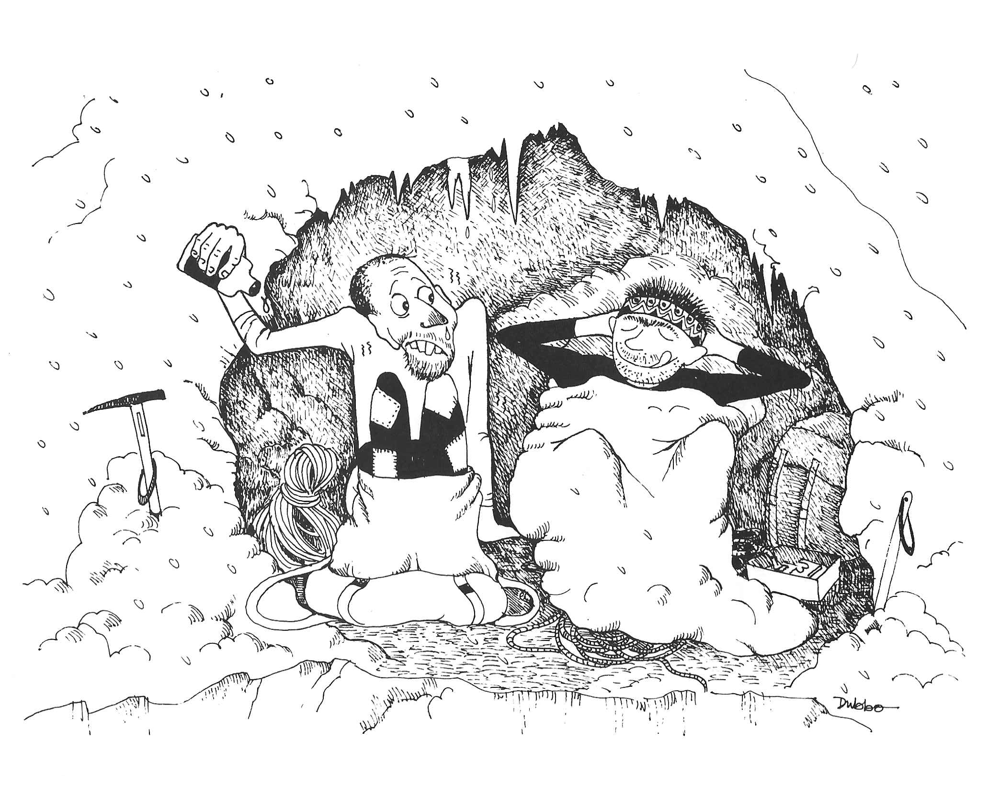
Figure 14: Benighted on the Ben
- May Day Meet
"Esoteric" may well describe some of the rock climbs in the Central Wales Dolgellau area and the selection that the weather permitted us to savour over the May Day Bank Holiday ranged from the sublime Will o' the Wisp to the ridiculous Gorilla's Armpit but more of that later.
Frank and Jennifer Mellor went down on Friday morning and were so amazed to find the sun shining in Wales that they felt they had to bag Will o' the Wisp Hard V Diff the "Classic Rock" route while they could. They had the crag to themselves! Marian Birkett, Chris Wright and I met them in The Cross Foxes that evening and Charles Knowles and John turned up soon after.
Saturday morning had us somewhat aghast sunshine and puffy white clouds. The setting of the campsite at Cwmrhyddfor in these conditions seemed idyllic. Ian Lauriston and Steve Hartland turned up while we were breakfasting, followed shortly by Hilary, Rosy and Andy. The vote went overwhelmingly for Will o' the Wisp with Frank and Jennifer opting for a day on Cader Idris.
Round in Cwm Cywarch there were some tense moments as the teams battled to be first on Will o' the Wisp . It seemed that the Whitaker Birkett Wright team would win, having set off first from the campsite, but stunning views up the Cywarch valley had caused a halt at the roadside for photography and as a result the Lauriston Hartland team arrived at the parking spot only a short while after them and raced off towards the crag whilst I was looking for my boots. However, in the end Ian must have lost his competitive concentration and I was able to sneak up the first pitch trailing the ropes while Marian was still putting on her EBs. As it happened there was no queueing and Chris soloed along quite happily behind us. With the arrival of Charles, John, Hilary, Andy and Rosy there was not a single pitch of Will o' the Wisp which was not being climbed on by the CMC at the same time as the first team arrived back at the sacks, the last one was just leaving the ground! The route was accomplished without fuss by all members and we won't mention the top rope that Charles had on the "rib" pitch. Oops, sorry Charles!
After that Steve and Chris turned to the harder stuff before being rained off on Acheron. Marian, Ian and I went off in search of Gem Hard Severe performing a sheep rescue en route. This route was made most memorable by the two seconds indulging in a whimpering contest and comparing notes on every stance about why they felt they should retire from climbing. The crux pitch brought the whimpering to a crescendo but nobody actually fell off, thanks to the "talking upwards" performed by those holding the ropes above. However, my suggestion that we should follow this with VS the girdle traverse of Tap Rhygan Ddu was greeted with a show of apathy that bordered on the brink of flat refusal, so I abandoned the project. Competition then became quite fierce as to which one would not do another route with me. My suggestion of a VS had left me with no one to climb with, so I compromised with a Hard V Diff. Suddenly, they both didn't mind climbing again, so we raced off up to Jack of Diamonds .
We arrived at the start just ahead of Andy and Rosy, who had been climbing Incapability Mod just ahead of Charles, John and Hilary. It was now looking as if it were about to rain, so Ian dropped out and Marian and I set off. Halfway up the second pitch the downpour started and the CMC were soon in full flight, abseiling from everything in sight. Except, that is, for Marian and I, somewhat more committed and for whom getting off seemed as much of a problem as carrying on so we carried on. As it turned out, the deluge was only a passing torrent and it stopped soon after we had reached our sacks.
Back at the campsite, the field had become a sea of mud and I was rather surprised to find the car's back end overtaking me as I swung up the hill to the tent. I never did get the car back up that hill! Our chosen pub was chiefly memorable for its awful beer we'll remember not to go there again.
During the night the rain set in and the next morning there was a marked absence of enthusiasm to leave the pit. As I expected, the "mountaineers" Andy, John, Hilary, Rosy and Charles set off up Cader Idris leaving the crag rats and Frank and Jennifer to elect for "a day at the seaside". We rendezvoused in Towyn at lunch time, a good enough excuse for a visit to the chippie rather interesting pasties and bright green peas! For the afternoon's entertainment we relied on Marian's age and experience: from the depths of ancient history, almost before time began, she remembered going on a rock climbing course when she'd been taken to a small training crag on a beach, somewhere near Towyn. So we set off for crag X and with remarkable speed and accuracy, were soon at the foot of a small but fine little sea cliff with clean solid rock albeit a little wet and lots of excellent little lines and problems. There was even a climbing course of young lads and lasses in residence to provide further entertainment. Soon everyone was engrossed in leading, seconding, top roping or soloing, enjoying themselves so much that the weather gave up in disgust and the rock dried out. By about five o'clock most of the obvious lines and some of the climbers were exhausted.
Steve and Ian headed back to Sheffield, but the rest decided to sneak a route on Bird Rock whilst the weather wasn't looking. Frank and Jennifer climbed The Buttress V Diff and Marian and I went for an amazingly steep route called The Jug Severe . Whilst this was in progress the mountaineers turned up, having had a good day on Cader. The pub at Abergynolwyn was a great success more friends of Marian's arrived to swell the numbers and a good long evening's boozing was enjoyed by all.
It rained most of Sunday night but had the decency to stop when it was time to get up, breakfast and pack. The mountaineers went off to sample Marian's sea cliffs, Frank and Jennifer went for a bike ride and we headed for Bird Rock again. This crag has a propensity for excessive steepness disconcerting until you discover that it has a fair number of large, juggy holds on it. Unfortunately, a high percentage of these seem to be inadequately secured to the rock face and one at least is secured no longer, having parted company when I was clutching it, with the inevitable effect of causing me to execute a swift flight through space before a friendly Moac helped me to resist gravity's summons. Unfortunately, my other hand had been stuffed up a particularly sharp crack when I was betrayed by this hold and as a result I finished the route using blood for aid it gives better adhesion than chalk! I fell off the most solid pitch of an HVS called Gorilla's Armpit even the name is enough to put you off! Ollie's pitch was a real frightener, swinging across on massive, apparently unsupported, blocks. I was glad to make it the last route of the holiday.
Meanwhile Chris and Dave attacked The Bolero HVS and Spike Wally VS and Lisa, Pippa and Marian formed a Cordee Feminine for The Diagonal Severe and Siesta Severe . A good time was had by all and by all accounts we had better weather in Wales than was to be had in the Peak can you believe that?

Figure 15: May Day Meet
Figure 16: The Hard Women
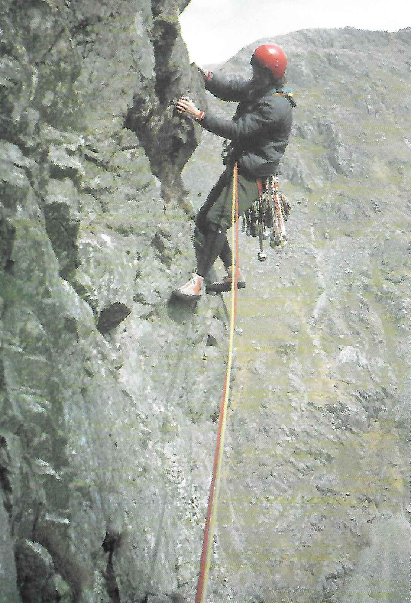
Figure 17: Julian Jones on Acheron Cwm Cywarch

Figure 18: Steve Hartland on Sirplum Cheedale

Figure 19: Everest
- A Trek in the Andes
The Cordillera Blanca in the Peruvian Andes is one of the most beautiful mountain ranges in the world, with peaks reaching a height of more than 6000m. Although not as high as the great giants of the Himalaya, these mountains hold second place to none in shape and grandeur. It was with the prospect of experiencing this grandeur that eleven of us, led by Alf Gregory Greg , set off from England with perhaps a little trepidation to this wild area on the other side of the world.
After two days in the bustling city of Lima we left by bus on the 250 mile journey to Huaraz, crossing part of the Atacama desert through which passes the Pan American Highway. This is a road cut through the sand and which in places reaches a height of one hundred metres immediately above the sea. As we moved inland, many roads had washed away by floods and rivers and the driver was often forced to drive along dry, rocky, river beds until the road could be regained.
After a very hot and dusty ten hour drive punctuated by several breakdowns, the bus, with very suspect brakes, at last reached Huarez. En route we had taken a short side trip to the Parachota Valley on the edge of the High Cordillera. In this remote valley of sparse vegetation and deep clear "coral like" pools, we saw the Puya Raimondi which has the tallest flower spike in the world, attaining a height of eight metres or more. This plant is confined to the Peruvian and Bolivian Andes and may live for one hundred years, flowering just once before it dies. An estimated eight hundred flowers grow on one stalk, attracting the humming birds which play a large part in their pollination.
A tortuous alpine style road led us above Caraz and the first sight of a beautifully shaped peak of Santa Cruz got our adrenalin flowing. The arrieros packed our gear onto thirty five burros and along with a horse and three scraggy dogs we ascended the steep gorge which, after three days travel, led us to the Punta Union Pass 4,750m .
Continental drift, resisted by the Earth's crust below the Pacific Ocean, has created intense compression and has crumbled the land's surface, releasing the igneous rocks which form most of the highest peaks. The effects of glaciation, volcanic action and water erosion have completed the process and have helped to form the sheer mountain sides above the deep gorges through which we passed. The extreme temperatures between day and night, so near to the equator, continually freeze and thaw the snow and ice, forming beautiful jagged peaks with grotesque shapes along the ridges.
Swamp areas, created by the lakes gradually drying out, seriously impeded our progress yet revealed a vast variety of beautiful plants and flowers, at their best in June, as we splashed our way through the clinging bog.
The first stage to the campsite was undertaken on horseback. Progress was not very fast and yours truly decided to press ahead, but as the altitude took its toll the raison d'etre of the horse became obvious. A slap on the rear from the arrieros persuaded the horse to leap across the river whilst the arrieros preferred to cross the bridge upstream. The horse was unable to make the jump and so stopped I didn't and scrambled from the river in a sodden state. From then on, there was a complete respect by the entire party for the effects of altitude!
Camping in the Cordillera was very comfortable with the temperature rarely falling below minus five degrees centigrade and very pleasant evenings were spent around the campfire. The mess tent was the scene of a pleasant "happy hour" before dinner when we drank Pisco a grape brandy to which we took quite a liking followed by an excellent meal prepared by the arrieros. As darkness fell lights appeared from other campfires high on the hillside where itinerant Indians were spending the night. However, we slept well as our dogs were very capable of keeping any light fingered intruders at bay.
Early morning: dawn was greeted with tea brought to our tents at 6.30 am. An excellent breakfast was taken as the sun rose and we were off again. The climb to the Punta Union was very steep as we wound upwards along the zig zag, rock strewn path. We passed by the very edge of glaciers below the four peaked summit of Taulliraju 5,830m , which dominated the scene with its jagged serrated ridges, lit up in the early sunlight.
A long time was spent on the summit of this pass, partly for a desperately needed breather but mainly to take in the wonderful panorama. Everywhere was silent, the snow white and glistening. The Pass is guarded by Taulliraju, its vast glaciers tumbling down into a deep turquoise lake far below, whilst overhead we caught our first glimpse of a Condor soaring above the ridges. The sun became hotter, there were deep rumblings and an avalanche fell down the mountainside then all was silent once more.
Once over the Pass we descended across bog land through the Huaripampa when we returned to lush vegetation and beautiful flowers. On the way we passed several medium sized Indian villages where we were made very welcome. Village land is generally owned collectively and the rural Indians live virtually outside the money economy. Day to day life is organized on the basis of mutual help big jobs, such as harvesting, threshing and house building are done with the help of neighbours, who in return receive help when needed. In spite of their apparent poverty, we certainly had the impression that they were a happy and contented people. A wedding was taking place in a nearby village and the procession passed us by on the trail, the bride to be on horseback, the family carrying everything needed for the festival, and grandma bringing up the rear carrying her kettle.
Along the seventy five mile length of the Cordillera rise some twenty peaks of over 6,000m, including Peru's highest mountain, Huascaran, with the world's largest concentration of glaciers within the tropical zone. Our journey continued over several high passes and we saw many fine waterfalls which tumble over cliffs creating delightful patterns in the afternoon sun.
A very stiff climb to the Portachuelo de Rataquena and suddenly the summit of the Pass was upon us revealing a mighty panorama of the high peaks of Rataquena, Tocllaraju and Copa, reaching down into the Honda Valley which was to lead us to our destination. And then a very rare experience just below the summit and on very slippery ice coated cliffs we saw the Rima Rima, a plant found only in this part of Peru. With its delicate red flower and large leaves, it seemed more suited to a greenhouse than to the top of a 5,000m pass. The Indians have a special reverence for the flower, perhaps because of its success in surviving in its hostile environment, and some wear it in their hatbands for good fortune.
On the final descent to Rinoconda the burros seemed to sense that their labours were at an end and proceeded with renewed energy over limestone rock, serrated over the years by water erosion. The river swells in winter and then recedes during the summer to reveal the strata of the rock and strange formations. It tumbled noisily through yet another cataract as we reached the end of our journey to be were greeted by beer, sandwiches and fruit before loading our equipment back onto the bus.
As we left the high hills for the last time, we looked back at the beautiful peak of Rataquena with its summit glistening in the sunlight and reflected on the scenery we had been privileged to trek through, also the hospitality we had experienced from everyone we met.
- Eastern Edges Walk
The main body of walkers assembled at The Flouch Inn at half past eight on a dry but overcast Sunday morning. An advance party consisting of the youngsters and parents had left earlier to allow shorter legs a little more time to negotiate the initial boggy sections.
The main party was soon heading up Cut Gate, though Jack had to be restrained from ploughing over the eroded portion of the path which was fenced off for restoration purposes. Once the little notice had been read to him and the possibility of wardens lurking in the conifers had been pointed out, he agreed to the recommended variation, though not without mutterings about his preference for going straight up.
The path was followed without further incident until Margery Hill was attained. Jack now made amends for his previous indiscretion by imparting a most valuable piece of information namely that we were now standing on the highest ground in Sheffield. Fortified by this gem and spiritually uplifted by the generous manner in which it was given, we felt able to continue to Featherbed Moss. In a state of euphoria, we wandered southwards until Abbey Brook lay below us. It was unfortunate that, as we dithered on the brink, we were witnessed by the advance party who had taken the more conventional contouring path around the head of the clough. Now was an opportunity for individual variation and a dozen people took nearly the same number of different routes for Back Tor. Everyone arrived within minutes of each other and a welcome break was taken by all nineteen walkers, together now for the first time. It was generally agreed that the most tiring part of the walk was over and, barring nuclear attack, success was assured. In fact all that remained was to sit back and we would soon be at The Robin Hood near Baslow.
As time went by it became evident that a little stroll was still necessary in order to achieve our objective and so we set off down Derwent Edge. The view became increasingly more interesting as we passed Wheel Stones and continued across Highshaw Clough down to Moscar House.
A short walk up the road, then we were striding away from the exhaust fumes toward Stanage. We took another break near High Neb since this was reckoned to be the half way point. Whilst lunching we greeted a passing couple. The young lady returned our salutations, but her companion was heard to say "It's The Castle!" whereupon she was shepherded away along the Edge with only an occasional backward glance. Shortly after this we met Dave and Jenny, who had walked up from The Robin Hood where they had kindly deposited a car for our return.
From Stanage we chose to walk down the Green Drive below Burbage, rather than over Higger Tor, and thence into Longshaw where we took a welcome tea break at the cafe. This proved very refreshing and gave us a lift for the last leg. We were soon over Froggatt in the gathering gloom, but there was a little stumbling and grumbling as it got darker on Curbar Edge. Most people had torches at the ready for the traverse of Baslow Edge and we found the Wellington Monument without much trouble. Jack attempted to rid himself of some Grappa at this stage but with little success judging by the response of those who were tempted, he will be offering his bottle round for several years to come!
It was drizzling now so we went at a fair pace down the track to the crossroads and then made a rather rough crossing up to Birchen Edge. The path there was a welcome sight and it was followed easily down to The Robin Hood which was shut! We had taken ten hours for the walk, arriving a good half hour before opening time. A vote of thanks was offered to Jack as we waited, shivering in the freezing cold evening with only one hip flask of Grouse between nineteen.

Figure 20: The Salt Cellar Derwent Edge
- Falling Off
Climbing is all about getting up. The trick is to ascend vertically to the top with appropriate downward glances to check the placement of the feet on foot holds, but without downward movement of the rapid uncontrolled variety. Deviation from ascent is permissible by traversing sideways, climbing down or abseiling, but certainly not by taking to the air and relying on gravity.
The reasons for this are, of course, obvious. Firstly, climbers are land creatures who do not possess wings, so any attempts at aerobatics will inevitably result in a bumpy landing. Secondly, the whole ethos of the sport of climbing is to get up. To fall off is to repudiate this basic principle.
Nevertheless, the art of falling off is sometimes practised by those who find themselves too stretched to continue upwards. As with all good mountaineering clubs, The Castle is rife with stories of those who have fallen off, ranging from the ones who have got away with amazing scrapes and near misses to those who have suffered more serious injuries. At various times battered helmets and frayed ropes have been displayed in the clubroom, whilst the fallen have themselves limped in on crutches, their damaged limbs suitably encased in plaster.
The better practitioners of the art of falling off manage to ensure, by the prior placement of adequate runners and a good choice of second, the avoidance of contact either with rocks on the face or the ground at the bottom, so that the fall is no more than a mere dangle from the last runner. The less able practitioners of the art fail to keep one or more of these points in mind and so fail to achieve such an innocuous end result.
Some go quietly, others with much noise and commotion. Witness the Club member who destroyed the Lakeland solitude on Dow Crag by noisily dislocating his shoulder, the din of his painful fall being equalled only by his protests at the rough and ready on the spot reduction of the injury by a fellow Club member. Some are not even content with a single incident but insist on trying again: one notorious case insisted on returning to the crags with his newly acquired pot only to chalk up another fall to his portfolio and more Plaster of Paris to his person.
At this stage I have to declare my personal interest in the matter and admit to belonging to the ranks of the fallen. My fall was accomplished without noise or loud proclamation and I did at least achieve dangle only in my case the dangle was merely momentary due to the runner not proving sufficient.
It all began innocently enough one sunny May afternoon. First my left hand slipped off the rock followed by my right hand and then by both feet. The books tell us that three points of contact is the rule. And with no point of contact at all further upwards progress becomes impossible. The result was the forbidden condition of downward flight. As I saw terra firma approaching at alarming speed with a painful impact seeming inevitable, my reaction changed from mild surprise at my sudden airborne status to abject terror. Contrary to folklore, my previous life did not flash before me and events did not happen in slow motion. On the contrary, I made contact with the ground at speed and the result was both quick and painful. My landing was possibly the most unskilful aspect of of all, following very much the traditional warning of the result of a bad landing given to raw recruits in the Paras: "Toes, knees, hospital!"
Well, there it is, my personal summary of the whys and wherefores of falling off and how it has worked for me. It is an activity which continues from year to year and is one which is inseparable from climbing itself. Without the risk of falling off there would be no being gripped, no adrenalin and no beer embellished accounts of scrapes and near misses. Most of the fallen do resume their climbing careers some as I have already mentioned even repeat the experience. Personally though, I have succumbed completely to the downward urge and now practice the art of caving.
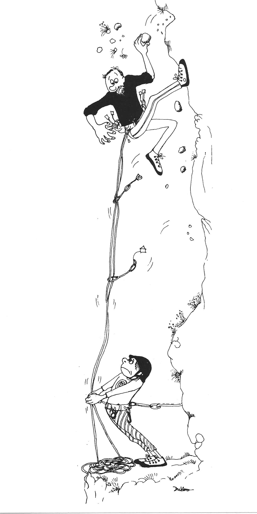
Figure 21: Falling Off
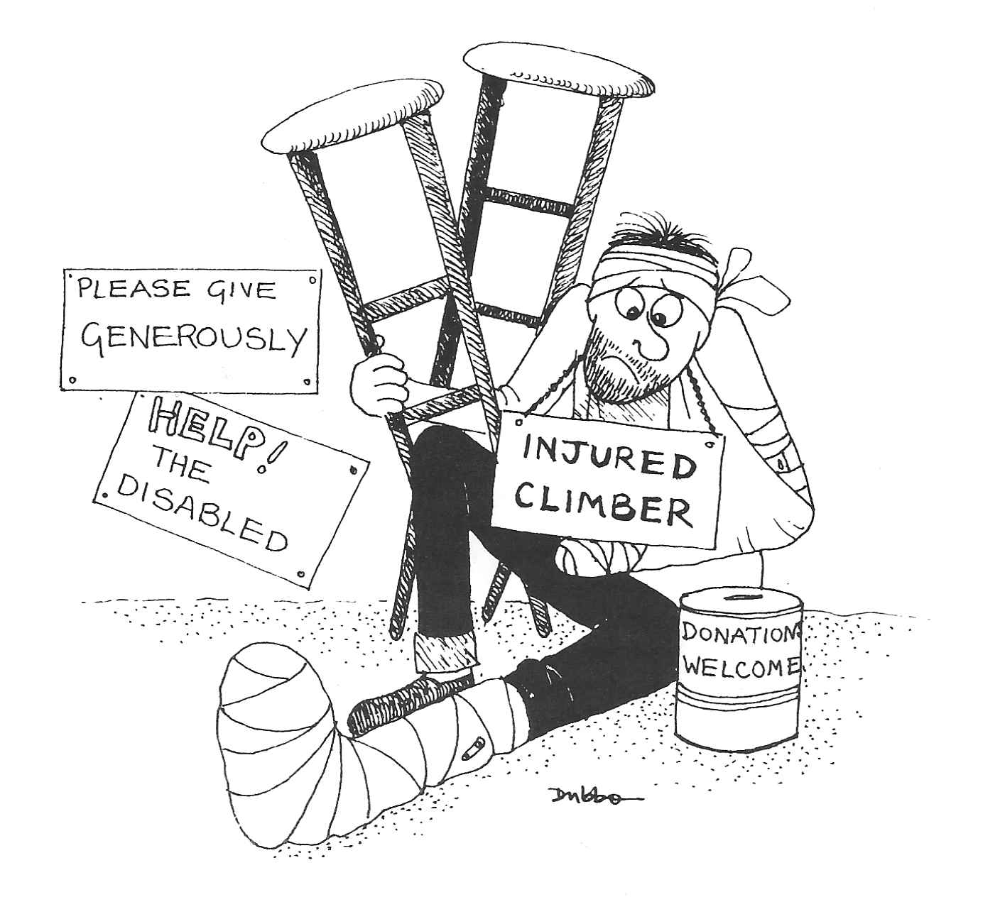
Figure 22: Falling Off
- One for the Pot
Caving as a Club activity, first got on the official meets list in winter 1983 84, though some members had "dabbled" some years before when Geoff Tryon had organised a beginners' and an advanced trip.
The first "official" trip, to Carl's Wark Cavern, was well attended despite heavy snow in Sheffield, causing one car to have an argument with a wall.
Conditions were wet underground and Steve Hartland led us through a short low section where the immersion of one ear was obligatory great fun! We were out in time to get changed chilly in the snow and go to the pub in Eyam for a lunch time pint all except Dunky who forgot his change of clothes and had to drive straight home, only to be refused entry to his parent's house so legend has it until he had stripped off in the garage.
After this success, the following winter saw two meets on the list with trips to Giant's and P8. Since then there has been at least one Club trip a year and a few members have got so keen that they have used the excuse of "going caving" to avoid nasty bog trots. However, there are still a few folks unconvinced of the attractions of caving and the excuses for not going on caving meets have ranged from "I'm frightened of lifts" through "I've been caving with you once that's enough!" to "Not bloody likely!" Some even prefer to go to a nice, warm climbing wall, to do a twenty mile walk in the rain, or even to watch Ski Sunday in front of the box. But you cannot really beat a trip underground for sheer enjoyment, the peak of which is normally reached belatedly, whilst clutching a hot toddy in the bath at home.
The point of least enjoyment is reached shortly after leaving the cave and is characterised by the removal of wet, muddy clothing or wetsuits in rather less than comfortable temperatures and circumstances.
I can remember when Andy Smith during a particularly tight squeeze had to strip off down to his undies in order to get through. This was not the first time that Andy's size had created problems, a classic example being his ascent of Cave Climb at Chatsworth Edge. The finish of the route is very similar to caving and involves clambering out of a closed chimney via a small hole at the top. With his legs flapping, Andy's body was well and truly stuck fast until Charles came to the rescue by hoisting him out by his braces!
One of the most memorable Club trips for me was the January '86 visit to Swinsto Hole in the Yorkshire Dales. The small but elite ! team consisted of Marian Birkett, Dave Crowther, Mike Doyle, Dave Pendlebury and myself. It was a miserable wet day so we were cheered by the fact that we were not missing any climbing! Less cheering was the sight of flooded fields, with rivers and canals absolutely full to the brim what was that I had heard about the West Kingsdale master cave flooding to the roof? And the warning in the guidebook that the exit through Valley Entrance "sumps in wet weather"?
The plan was to abseil down all the seven or eight pitches of Swinsto, pulling the ropes down after us a trifle committing! However, some precautions for our safe delivery from the bottom were taken by Dave P and myself going into the Valley Entrance beforehand and fixing a ladder down into the master cave. I even went down it to see how much water there was in the bottom: instead of the normal three or four inches it was about two feet deep and moving at such a pace that walking upstream was virtually impossible. Still, not to worry, we would be coming downstream!
Back outside after fixing the ladder, we reassured the others that the water was lovely and warm and that only a small epic could be anticipated, then set off up the hill to Swinsto Hole.
The cave started off as it meant to go on wet! Straight into a low, tight, stream passage and quickly to the first pitch an abseil down a waterfall! Then 900 feet of stooping and hands and knees crawling in water, knee pads a definite advantage! A short waterfall descent into a pool was followed by a curtain pitch down another waterfall. It was interesting to watch the different techniques employed by people as they disappeared into the waterfalls in a welter of foam Dave P. used technique and control in an attempt to keep out of the water as much as possible while Dave C. employed speed as his defence against drowning. The problem was, the further down the cave we went, the greater the volume of water!
By the time we reached the main pitch two abseils, one of fifty feet and one of forty split by a ledge there was some real force in the water. I abseiled first here as on all pitches the privilege of being leader! and could not see the ledge at all until I actually touched it.
A sort of weird of disco was danced by the team to the music of crashing water in a sheltered recess at the foot of the main pitch, in an attempt to regain some of the heat lost from prolonged immersion. What we needed, obviously was an immersion heater? Groan, groan!
Everybody got warmed up again on the next section an exciting stream passageway with rapids to clamber down, pools to fall into and tight bits to squeeze through. Eventually we reached the final chamber after our eighth abseil. Not far to the master cave from here!
Off we went down the east entrance passage on our hands and knees, through a low watery bit and on to a gravel bank. All this I remembered from the last time I'd been here. What I did not recognise was the sump, where the roof of the passage gradually lowers to meet the water level. To cut a long story short, we went back and forth along a section of the cave before the correct route was finally located. Just enough uncertainty to get the adrenalin pounding!
Back in the master cave, the water was flowing down a veritable helter skelter channel. Mike and I leapt in and vanished down the cascades before the others realised where we had gone: I must take a rubber dinghy down there sometime, it would be great fun.
One thing I'll never do again is to solo up a free hanging Electron ladder with a rucksack containing 150 feet of wet rope and several gallons of water!
Luckily the bit in the Valley Entrance that "in wet weather usually sumps" had not: there was at least six inches of air space!
Once outside, the fresh air was, as always, welcoming even though it was still raining. It was very satisfying to know that the walkers would undoubtedly have got wet too.
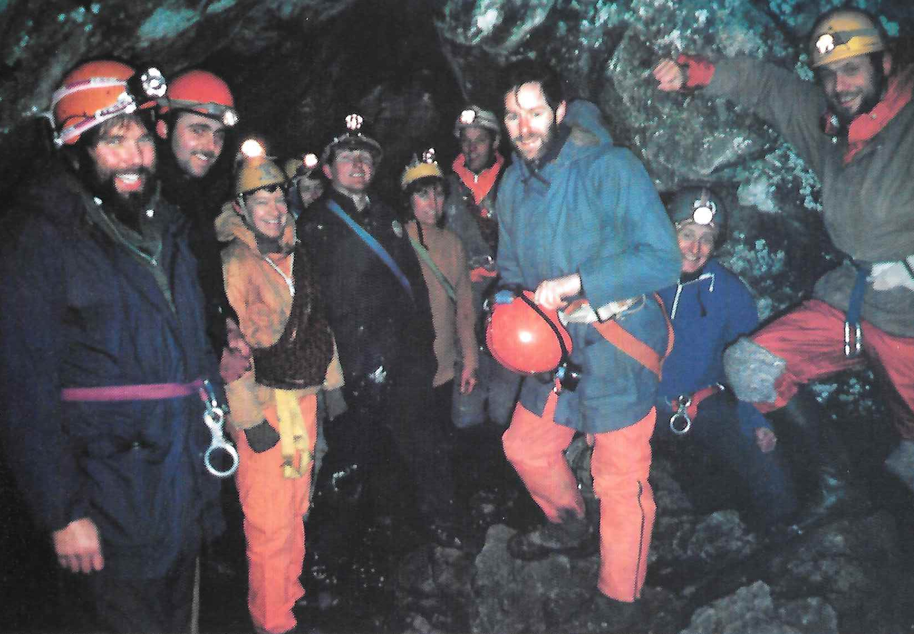
Figure 23: Castle Members in Giants Cave

Figure 24: One for the Pot
- Welsh Rarebit
Bill Hine was spread out on the back seat clutching his mouth in a desperate attempt not to laugh, as I stood outside the car saying: "Yes Mr Policeman, No Mr Policeman, forty miles per hour I think, Mr Policeman…"
Chris Wright, sitting in the front, thought the grovelling was far more entertaining than the car stereo so, turning it down, he was just in time to hear:
"And I won't do it again Mr Policeman".
I entered the car soon after and shut the door with a clunk. The resulting burst of laughter must have been overheard by the rookie who was walking back to his police car. His pride had already been severely dented during his frantic efforts to catch us up. However, the score was now one all and we were on our way to Anglesey.
Since the opening of the M56, the journey is considerably quicker than it used to be, but there's still time to reflect back to those Welsh days when every route turned out to be a classic or an epic adventure that gets worse every time you told it. A portion of my memory is always reserved for Idwal Slabs and the mass ascents by the Club in big boots and cags. The Castle's hard core climbing team twelve years ago was a motley crew led by Sheila MacDonald and her never ending fag and with John Ward bringing up the rear, seen but never heard. A few years later some new faces came onto the scene and the climbing grades started to rise to 5b 5c. This was the time Bill was introduced to the Castle by Dave Bates and Keith Naylor and Dick Savage Tricky Dicky who was an earlier Castle climber left for India to achieve inner transcendental harmony. In those days a Castle ascent of Cenotaph Corner , Cemetary Gates and Vector was an achievement, but alas these routes along with many more have been down graded to "just good classics". For me the mountain classics will always hold that extra magic which the modern routes lack at the moment. Maybe it's the atmosphere or could it be just a pleasant memory?
All three of us in the car were quite adept at the modern routes but on this occasion, after many months pestering, I finally convinced Chris to have a go at a sea cliff classic for a change. The car ground to a halt on the gravel surface of South Stack car park. The air was damp due to the sea spray in the blustery wind so that by the time we had our rucksacks and ropes packed the "What am I doing here?" syndrome was setting in.
"OK, where's the crag?" asked Chris unenthusiastically.
After walking in a rough north easterly direction, for twenty minutes, we were above the sea cliffs of Gogarth. Past visits to the cliff had resulted in climbing the usual Pentathol , Gogarth , Cordon Bleu and Central Park but unfortunately a large proportion of the routes suffer from access problems during high tide. According to Sods Law, no matter what time you arrive it will always be high tide! Today was no exception. Reading the Guide Book about high tide approaches was depressing and when we consulted a group of "knowledgeable" climbers who were festering between some boulders they said, "You have no chance for at least three hours". So, acting on this information, we set off to Wen Slab. Maybe we could come back later or tomorrow but now a new goal had raised our enthusiasm - Quartz Icicle or Wen . Anything except Dream of White Horses , not because Dream is a poor route - quite the opposite. For any first time visit it is highly recommended, but I had climbed it three times before with different parties and there had been no time left for anything else.
On arrival it was decided to walk down the gully on the right as you face out to sea for the spectacular view of the zawn thus giving an impressive vista of all the routes. There it was in all its splendour - Froggatt Edge on a Sunday afternoon in summer! It was like Butlins Holiday Camp in the late sixties. Quartz Icicle was being climbed! Wen also! There were climbers everywhere… and no less than three parties on Dream alone! The overall scene was stunning and very reminiscent of Baggy Slabs with Midnight Cowboy , Kinky Boots and Sexilegs all being climbed at the same time.
Chris was not impressed, as our only option was to trek back to Gogarth and wait for the tide rather than wait for the crowds to subside on Wen Slab. Back we went, but this time we geared up at the top of the descent path and climbed down the small gully to the bottom of the cliffs. It was far better to wait here than to brood at the top at least we could look at the sea level traverse and climb along at the earliest possible moment.
When we arrived it was high and dry by a long way, in fact it looked passable at most times except for maximum high tide. Our feelings were mixed: happy to be able to do at last the route we had set out for and cheesed off because we had turned into bigger pratts than the two "knowledgeable" climbers we met earlier.
Traversing across the bottom of the cliff took no more than a few minutes. The ropes were quickly uncoiled and we were ready to climb Big Groove . Gogarth's Big Groove is not particularly difficult by today's standards and rose to fame during the "Hard Rock " days when its popularity increased tenfold. Its total height of 340 feet is climbed in three pitches of 5a 5c and 5a grading. Although this route had been climbed before by many Castle members, for me it was the one that had got away.
Bill took the lead on the first pitch and burned up the rock to disappear over a ledge some fifty feet up. Time lingered on with relatively little movement from the rope. "Are you belayed yet?" I shouted, only to be met by silence.
The silence went on for some twenty minutes broken only by the occasional jerk of the rope, until finally we heard the faint call: "Climb when yer ready".
Chris set off and I followed some five minutes later, puzzled by the apparent speed of his ascent, especially above the ledge where the problem seemed to have occurred.
Upon reaching the ledge the puzzle became worse because Bill and Chris were sitting only twenty feet away with no obvious hard or even slightly difficult climbing between us. However, there was a seagull!
"Don't disturb it, its nesting" whispered Bill, looking quite concerned that I might kick it off.
In fact, as I was traversing an absolutely desperate wall over the gull I did feel like kicking it off, especially when all it could do was look up at me with a "look at that silly bugger " expression on its beak!
Once on the belay ledge my immediate attention was on the second pitch that I was about to lead. From the stance, very little could be seen apart from the seepage lines of wet rock, with the mist and sea spray blowing up the groove. I was unable to convince Chris that this was the pitch he ought to lead, so I set off. A short wall led to the groove itself which was deceptively steep. In fact it gets steeper each time I think about it! I must confess that I'm not a particularly strong climber and I usually try and make up for that deficiency by technique however, that does not always work, especially on routes like Axle Attack and Body Machine where without strength and stamina you just don't stand a chance of a clean ascent. Anyway, by now the groove was seeping with water and had got very, very, steep even steep enough to justify my owning up to using the peg! But it was only for a few seconds, honest!
I knew that hesitation below the peg would prove disastrous, because slowly but surely my forearms were beginning to ache with their solidification. The veins pulsed and stuck out like fossilised tree trunks, to be shortly followed by the involuntary uncurling of the fingers. With one last effort I managed to reach the bottom of a flake, and thrust my fingers right round it, preventing them from uncurling. How many times do you get into the situation when you're twenty feet above your last protection, pumped out of your head and the flake does not allow the insertion of any useful gear?
The only option was to continue up the flake where it formed an apex and lasso a sling over it. What sounded like a good idea turned out to be a nightmare, as I laybacked up the flake higher and higher until the last runner was just a distant memory. However, there was one consoling factor - if I fell off now there would at least be a strong possibility I would land on that gull!
Almost there, but something didn't seem right. Could it have been the groaning and creaking of the flake? After some thought I realised that the whole flake was bending and flexing with every layback thrust. Nervously peering round for a closer investigation, I saw the true thickness of the flake to be only half an inch. "It must be stronger that it looks, having remained on the route for so long" I thought, in a desperate attempt to convince myself that everything was just great. Lassoing the tip of the flake with a sling, I remembered the verse by Ben King: "Nowhere to fall but off, Nowhere to stay but on." What a load of garbage!
The karabiner clicked home and the tension eased as I boldly bridged up to the right below the belay stance and heaved my body onto a ledge. Standing up on the ledge was another matter but the whole performance is too embarrassing to describe here. The ledge was just right for one, and when Bill arrived soon after it was - for want of a better word - "cosy". When Chris arrived, however, the ledge became a writhing mass of arms, legs, ropes and runners.
Chris had intended to lead through but the weather had turned increasingly nasty. Over the last hour, during the ascent of the second pitch, the clag had set in and spray was howling upwards in the vortex created by the groove. The whole effect made it look as though it were raining upwards! The decision had been made earlier that if I managed the second pitch we would go on, but if not we would abandon the route. Unfortunately there was no turning back now.
Chris set off up the final groove very slowly, as by now everything was totally saturated, even Bill and I. Rather than start singing "My favourite things" I began to think about sitting in front of a roaring open fire in the pub that night, swilling the amber nectar and talking of the day's events especially giving Bill a roasting for wasting a good hour by being polite to the seagull!
By now we were well and truly frozen stiff with all enthusiasm long gone. The rope very slowly came to its end and assuming it was time to climb, I set off. I must admit and said to Chris at the time that his lead on that final pitch in the conditions that prevailed was superhuman. The fact that he managed to stay on at all is beyond me - let alone climb the soaking lichen pads and shattered rock flakes. At long last, the top was made by all three followed by the quickest descent via the path! on record.
There was no fire in the pub but there was a pool table well, you can't have everything.
- Two Weeks Older, Years Wiser
Sitting in the warmth and comfort of my home, Alpine adventure seems very far away indeed. Knowing the tricks that memory and time can play, on countless occasions in the Alps last summer I told myself sternly and fiercely, often through hot tears: "You will remember how evil this feels. You will remember that it's sheer hell."
I was very naive and unsuspecting when I left for the Alps for the first time the previous July. Excited and apprehensive, yes, but sure of myself. I knew the environment was dangerous but, after all, I had prepared very carefully, I had trained, was as fit as I had ever been in my life, had good safe equipment and was to be coached through my first Alpine experiences by a professional guide. I was looking forward to it very much.
I travelled out a few days early so had some time to spare before I was due to join the guide. The campsite at Argentiere had a lively, British, climbing community and those first few days were easily filled, walking and climbing with new friends and getting used to the Alpine scale of things. With two people from the Red Rope MC I climbed the Papillons Ridge in fine conditions, thoroughly enjoying the stunning positions and interesting rock climbing. The altitude caused no problems, neither did other first experiences like climbing with my rucksack and long abseils. We had a long walk off the mountain because we missed the last telepherique down to Chamonix, but it was a delightful walk along green paths, made even better by eating wild raspberries and listening to booming rock music echoing up from a concert in the town below. It was a sound and optimistic beginning.
My guide was in fact the only British woman qualified as a guide, well respected and with a great deal of experience of Alpine courses. She worked with Tim, a good, strong climber who also knew the Alps well. The two people in the group with me the first week were a married couple, Karen and Kevin, who had walked in the Alps before but had little climbing experience. The second week we were joined by two men with a burning ambition to reach the summit of Mont Blanc nothing else, just that. John and Ron had virtually no experience of any climbing and I had never set foot in the mountains on snow or ice before. A challenge to the sturdiest of teachers, I would say! Little did we know what fate had in store for us.
We began our training on the Mer de Glace. Those of you who are familiar with Chamonix will know that there is a perfectly good train which takes you and hundreds of tourists to Montenvers, only a short walk from the glacier. But for us, walking was not to be shirked. What's more, I foolishly wore my new plastic boots personal torture chambers which pull you down with every step and slowly pot roast your feet. By the time we reached the glacier, what with the boots, a rucksack that was far too heavy, the steepness of the hill and dehydration, I felt as if I were going to die. It was a sensation I was going to get used to. Donning crampons for the first time, I felt about ten months old, learning to walk again. Small, tentative steps, scowling at our guide when she shouted at me to jump around. Then, in order to practice, we walked unroped around the glacier, picking our way over crevasse bridges, up and down slopes very, very, slowly. Fear seemed to have stolen my sense of balance. We stopped to do some rope work and learn safety techniques, including crevasse rescue. One by one we played rescuer and rescued. Weighing much less than the others, it seemed at times that my legs and back would snap. I moaned, a lot.
I was encouraged because for the next couple of days we were to leave the ice and turn to rock. We did two long routes on the Massif des Aiguilles Rouges, bivvying overnight at the Index station. At this time there was very little snow and the normally snow covered gullies were full of hot, broken rocks which took you sliding back as you tried to make upward progress. Soul destroying. Back breaking. Painful. The rock climbing was sweet release, technically easy and in fine weather. At the end of the rope I was left to my own devices and I enjoyed the marvellous views and some relaxation.
Following this, on our fourth day we set off for the snow, planning to do the Petite Aiguille Verte on the way to the Argentiere hut. Unfortunately I was struck with altitude sickness on the ascent and had to be left sitting on a rock in the hot sun watching enviously as the others went on up to their first "snow" summit. The sickness became worse and I made the arduous trek to the hut feeling only semi conscious and in need of a great deal of support. Staying in the hut brought more new experiences a whole new regime. There was so much to remember, like getting water for the next day in case the pipes froze overnight and arranging your gear so that nothing was forgotten or lost. I was thrown into a permanent state of panic.
At 3 am, a gentle whistle roused our dormitory and, bleary eyed, we prepared for the day. It took us forty minutes and our guide was furious we would have to manage in a third of the time in future! So, late, we set off for the Aiguille Tour Noir. Before long, unable to keep up and still feeling sick and dismal, I lost sight of the others. I had come to the Alps hoping to learn to love the mountains and I was beginning to hate them. Once again I was left behind, this time in pitch darkness and freezing cold, waiting for dawn so that I could safely return to the hut and all the while wondering if I could afford the air fare home. I felt a mixture of disappointment, frustration, anger and fear. But if I thought that I would be let off that lightly, I was wrong. The next day we were marshalled swiftly out I think I slept in everything except my glacier cream and even did without a drink or a visit to the toilet to be ready in time. After much faltering, cajoling, complain ing and encouraging, by mid morning I had reached the summit of the Aiguille d'Argentiere. What an enormous sense of relief and achievement. I didn't want to go home any more.
The elements then decided to intervene and we had two days of continuous torrential rain, which meant one day's rest and one day in a flood on the Bossons glacier, trying to front point up the steep sides of crevasses as water poured down sleeves, gloves, trousers and socks and lightning cracked around us. Only when we had achieved what we had come for were we allowed to retreat to the Bar Nationale. Once down to the car, I incurred our guide's wrath and a new reputation by removing all my clothes at the roadside. Dry clothes seemed worth any consequences.
We spent the next night at the Albert Premier hut and although a snowstorm delayed our start we conquered the West and South Summits of the Aiguille de Tour. After a great day rock climbing at Les Gaillands, which reminded me of home and restored some confidence, we set off for our last expedition. We were to do part of the Midi Plan, bivvy in the Midi station and tackle a final route on the morning of the day we were due to travel home, leaving Chamonix at noon. Quite a schedule.
There had been extremely heavy snowfalls up high the Papillons Ridge I had rock climbed only days before was covered in snow. With hindsight, we should not have attempted the Midi Plan in those conditions, with deep snow blocking the normal route. We soon ran into trouble, confronted by difficult, technical, rock climbing in full ice gear. It was a traumatic and dangerous time, ending in an abseil escape and retreat to the Midi station. This experience played a large part in my choice of route for the following day. Half of the group was to tackle the the Cosmiques Ridge , whilst Tim would do Mont Blanc de Tacul. I had no desire to repeat the events of the Midi Plan and was very keen to climb over 4000m, so I chose to go with Tim. We had a magnificent meal in our comfortable bivvy and enjoyed a superb sunset. Spirits were high.
At 3 am Tim, Ron and I set off, leaving the others sleeping. The ascent was marvellous. By this time I was beginning to get fit enough and we progressed quickly, leaving two parties from Cardiff University in our wake. Despite the deep new snow we were on the summit before 7 am, accompanied by a very spectacular dawn. I felt on top of the world. Beginning our descent, we passed the other British groups and reached the top of the main slab.
Imagine making your way gingerly down a narrow ice ledge, balanced on crampon points and ice axe, expectantly working your way towards the safety of the snow slope. And then……. that slope moves, lifts itself from the face of the earth and hurls itself down the mountainside. Half a mile of snow, at least twenty feet deep, suddenly erupting, causing a thunderous roar. Nothing in the path of that avalanche could have survived. It was a monster. A monster no more than fifty feet away. Tim screamed at us and literally dragged Ron and myself back up the ice ledge away from the chaos beside us. I have never, ever, been so frightened.
But the trauma had only just begun. How were we to get off the mountain? As we stood debating the horrific options with the other groups who had reached us by this time, a French policeman was dropped from a helicopter. His interest, understandably, was to discover if there had been anyone on the slab. Miraculously there had not. He offered no advice as to our descent we were the mountaineers he said, we should tell him! He would be willing to pick up our bodies if we risked triggering another avalanche on the cracked and unstable slab, but he was not interested in us alive. Fortunately common sense prevailed. It had been the largest avalanche of the summer there and to have had to deal with nine British bodies would have been inconvenient. So, the helicopter came back and in circumstances that seemed more appropriate to the television screen, we were whisked from the mountain top to the valley.
The weird helicopter flight which seemed to turn the world upside down and the sight of rescue workers and dogs on the mass of broken snow brought home the awful reality of it all and I cried and cried. We should have been dead. Hesitat ing on the summit for a final photograph, stopping to adjust my crampon, moving so slowly on that ledge the reasons we hadn't been swept away came back to us in the sudden realization of what might have been. We had to walk from the Vallee Blanche back to the Midi station, interrupted mid way by another policeman, dropped from a helicopter with more questions. The other party, who knew we had reached the summit because they had watched our head torches in the early morning, had witnessed the whole affair but could not know we were safe until we arrived back. Their relief was almost as great as ours.
I was glad to say goodbye to the Alps. They had been hostile and frightening for much of my time there. I had felt bullied and lonely and longed for the security of The Peak District, my home and friends. Without pressure from our guide I would undoubtedly have given in many times to physical discomfort and cowardice. As it was, we had achieved an incredible amount in the time available. Despite the aggressive conditions, I had learnt and achieved more than I had thought possible about climbing, the mountains and most of all myself, what I am capable of and what my true limitations are. For the future I know I must be stronger, fitter, more determined and more self reliant to survive in the mountains, and even then it will still be hard. I have just finished reading "The White Spider" which chronicles the savage history of the North Face of the Eiger. In spite of my experien ces in the Alps I felt inspired and challenged by those awesome tales, not intimidated and frightened. Perhaps those tricks of time and memory have won after all. Or perhaps that's the magic of mountaineering.

Figure 25: Mont Blanc de Tacul
- Death Race 2000
"The Karakoram Highway is like a cassette tape strewn across a building site" Robin Dennell.
We stood on the side of the road. Our driver was on his back at the front of the vehicle with only his legs protruding. We wished that he would fall asleep and stay asleep for at least another four hours, but our hopes were dashed by the occasional grunt and the tinkle of a spanner. Our driver was of the opinion that no sleep for two days was no problem.
Brightly lit vehicles moved up and down the artery, the vivid patterns on their flank like an arcane genetic code. A thousand or so feet below, the waters of the Indus waited greedily for a driver to make one last mistake.
The second vehicle arrived, and within minutes the wheels spun on the gravel creating a huge dust cloud which attached itself to the back of the van.
One hour from Islamabad there was a crunch and it broke down. As the driver walked back to Islamabad to get a part, we went in search of breakfast but found a Buddhist Temple instead. The Moslems had knocked the heads off the Buddhas. Even though we didn't look like Buddhists we decided not to take any chances and beat a hasty retreat. Apart from that,temples didn't do eggs. The culture shock was setting in. After little sleep on the plane and only a day in Islamabad and the British Embassy Club, we had hardly acclimatised.
Our driver returned with a new transmission link and we knew that this one was OK because it did not have a welded fracture down the middle. We progressed towards the mountains, through a strange land where everybody wore the same clothes and there were no women in the streets and it was even hotter than Skegness. Our driver's techniques in built up areas began to arouse our interest. Foot on accelerator, hand on horn, it is the Will of Allah if you don't move out of the way.
After a tea stop in a place called Beshum, things changed abruptly. The road along the bottom of the pleasant valley, with steep crumbling sides above, suddenly became the road half way up the mother of all gorges, with steep crumbling slopes below. The road twisted and turned like a demented python. Our driver's cornering technique foot down, horn on… began to cause serious concern, as did his tendency to race anything that overtook. Occasionally he would stop, point down and say "Ten men" or "Five men". I wondered why we were never driven over the edge of the Karakoram Highway.
The Indus gorge is huge by European standards. The initial section of the Highway travels up this immense feature for maybe a hundred miles. It has a distinctly temporary in geological terms feel to it and at many places we encountered landslips. Time has used the sharp blade of the Indus, swollen with glacial melt, to slice through the moraine rubble, leaving a great chasm to drain the Western Karakoram. Then somebody decided that a road along its walls would be a good idea.
Respite came at last when we found ourselves at a village. We stopped and went into a restaurant. "Ah" said Uncle Tom, "It's the restaurant at the end of the Universe."
We ate our curry and chappaties. The curry was delicious.
We set off again foot down, horn on… We told our driver to drive more slowly. He agreed and promptly accelerated. The next hour is indelibly etched in my memory. The Highway has a grand rhythm. An experienced driver senses the rhythm and will drive safely at a good pace. Ours was simply going too fast. The motion was becoming unstable. Each swing, each last second braking, each overtaking, brought us closer to the point of final instability. Somebody's comment, that with a good launch we could expect between five and six seconds of free fall before impact, did not help. The drop to our left took on the aspect of the Reaper's Scythe. Each of was in a private hell, convinced we would never see our beautiful peak, let alone climb it.
"Slow down," we shouted. "Yes," he cried and accelerated again.
We careered round a double bend to meet a lorry like a squat brightly coloured bug coming towards us. The resulting manoeuvre made the back of the van drift. The string snapped and as one, we leapt up in our seats screaming "STOP!" He refused.
Suddenly there was an awful noise from the back. Rickets, the retired at twenty one coal miner from Barnsley was obviously in severe pain. His features contorted, he grasped his stomach in agony and made awful retching sounds. This did finally convince the driver to stop. Rickets recovered suddenly and leapt out, quickly followed by the rest of us. Things got very fraught when we refused to travel any further until the driver had rested
- it emerged that he hadn't in fact slept for two days - and he
said he was going on with or without us, as he consumed a huge lump of local "medicine".
Eventually we reached a compromise. We would travel in a lorry we had flagged down and the van would travel behind us. Our friend The Survivor, being brave, would stay in the van for security's sake. Ten seconds after starting, the van overtook and the Survivor screamed for help out of the window with a pleading look on his face.
"No worry" said the lorry driver, "Soon he sleep." We enquired as to the source of this insight. "We gave him opium cigarette!"
A few miles later we found a shaky Survivor, a van, and the driver trying to mend the fan belt with a piece of string. This is in fact impossible, but he refused to be beaten. A spare from a passing van eventually cured it. We were leaving the gorge now and entering a strange desert plateau, ringed with arid mountains. The free fall time was now down to half a second but by now we were too numb to feel any terror.
Eventually he pulled into the side of the road. "I sleep."
He was out for five hours. We dozed in the desert, watching the miracle of the dawn we had scarcely expected to see.
Arriving in Gilgit we parked in the main street. A fierce man came towards us and grabbed the driver by the throat. He dragged him out of the cab and the last we saw of him was his being punched and kicked down the street. The fierce man returned and drove us carefully, sedately and with consummate skill to the refuge of the Hunza Inn. The story of how the Sahibs had gone on strike had travelled on ahead of us.
Well, Rickets and his climbing partner The Cowboy made the first ascent of our beautiful peak and The Sheffield Karakoram Expedition was a resounding success, but that is another story.
- Island Flings
Islands hold all sorts of fascinations although for some more than others and for me more than most. The Castle Mountaineering Club has a climbing interest in the Scottish Islands of Arran, Rhum and Skye and these islands therefore feature frequently on the Club's summer meets list. In my case, a keen interest in islands has become an obsessive urge to visit ever remoter, wilder and far flung spots. I am, though, wary of the D.H. Lawrence tale "The Man Who Loved Islands" in which the subject of the story, seeking ever smaller island sanctuaries, finally retreats to a slab of rock from which he is swept clean away.
My interest in islands began in Easter 1974 with a visit to Arran. The trip involved leaving my then base of Reading at five o'clock on Maundy Thursday evening, travelling to Bristol to collect one member of the team and and then undertaking a further journey to Stoke on Trent to collect two other members, followed by a run to Ardrossan and the early morning ferry to Arran. The return was equally frantic and saw me back at my desk at nine o'clock on Tuesday morning. In between, however, was an experience of true island bliss blue skies, anti cyclonic weather, a snow capped Cir Mhor and vistas of the west coast of Scotland and the nearby Paps of Jura. It was a three day glimpse of paradise that started a permanent island obsession.
Having whetted my appetite with the benign and accessible beauty of Arran, I began looking for more demanding locations, preferably those with mountaineering potential. A timely move to Sheffield and subsequent membership of The Castle Mountaineering Club certainly helped. Mull, Skye, Rhum and Jura became obvious choices. Unfortunately, I arrived in Sheffield with too little time spent in my new employment to have earned a week's holiday and therefore felt obliged to remain south of the border whilst the Club trip to Skye in May 1975 went ahead. That was the year Skye wilted under a week long heatwave and much serious climbing was done including a Club traverse of the Cuillin Ridge. All I could do was seethe with rage on learning what a good trip I had missed.
The following winter I learned that the Club was planning a Spring Bank Holiday meet on Rhum, but I was again unable to join the trip. Rather than miss out altogether, I obtained permission to camp on the Island at Easter and so got there in advance of the main Club expedition. I shall never forget the feeling of commitment at the sight of MacBrayne's ferry steaming away, leaving us ashore with only the tents and the food we had taken to sustain us for the coming week. A week of gales, leaking tents and wet sleeping bags took away some of the initial gloss, but the experience of watching deer only feet from our tent and an ascent of Askival on the only day of brilliant sunshine with views of the Cuillin on Skye, the nearby Small Isles and more distant Outer Hebrides shimmering beyond the deep blue Minch, easily compensated for the grimmer times. I was, though, left with a slight "niggle" when the subsequent Club trip in the Spring again found good weather and members packed in the routes.
The Rhum experience led me to visit a series of small and remote islands where the attraction was the intrinsic interest of the island itself rather than any mountaineering opportunities. Thus it was that I arrived green and seasick in North Haven on Fair Isle after two hours tossing about on the sea on the Island's mail boat. Ignoring the obvious mountaineering and swimming! challenge of Sheep Rock, I was enchanted by the peace, abundant wildlife and cheerful simplicity of the fifty or so human inhabitants.
Thoroughly "hooked" by now, I spent a fortnight ploughing the Hebridean waters helping as crew on a seven berth yacht. Twice it was nearly all ended: first by a scrape with an unexpected overhead power cable on the west coast of Lewis and secondly by a navigational blunder that led us late at night into an uncharted bay at the entrance to Stornoway harbour.
Through this island touring, I eventually developed an obsessive interest in a small, remote and hard to get to island group beyond the Outer Hebrides. I mean of course "The Islands on the Edge of the World" as they were once described, or St Kilda by their present name. I first noted them with little more than idle curiosity as dots on the map, but then I read an article in a climbing magazine which aroused my interest. The description of the highest sea cliff in Britain and the largest gannetry in the world, surrounded by Atlantic seas, drew me to these islands like a magnet. The sad story of the former occupants of the islands, their fate at the hands of "civilization" and their ultimate evacuation added human interest.
However, my attempts at getting there were singularly unsuccessful. Twice The National Trust for Scotland rejected me as an applicant to join a work party, and an attempt to sail there by yacht had to be abandoned in high seas. The more my attempts to get there failed, the more I became obsessed with these Islands and the more I redoubled my efforts to find a way to cross that elusive forty five miles of Atlantic Ocean.
Eventually my patience and perseverance triumphed and I did duly set foot on the shore of Village Bay on Hirta, the main Island. Here at last was a remote island, well out to sea, out of sight of land and a truly wild place. The teeming sea bird life was ever present, the wind and sea pervaded all nooks and crannies and the drama of the cliffs was mind blowing. Yet amidst all this drama the old village and the old graveyard peacefully enhanced the natural appeal of the southern sweep down to the sea of the Island's highest point, Conachair.
It was with a heavy heart that I bade farewell to these lonely and spectacular islands and returned to mainland Scotland. There have of course been other islands since and I have more targets for the future for example Foula, reputedly the St. Kilda of the Shetlands. Perhaps, though, I should try further afield. A glance at the shattered coastline of Norway also looks promising, with gems like the Lofotens very appealing and rekindling the old mountaineering spirit. Yet the lure of the Scottish Isles is hard to shrug off and once again I shall find myself setting off to the Hebrides. Although I shall be trespassing rather close to the Corrievrecken whirlpool, there are hopefully sufficient reasonably sized islands around to avoid my resorting to slabs of rock and experiencing the watery grave warned of by Lawrence!
- La Grande Epique de la Petite Dent de Veisivi
A cautionary tale of the Western Pennine Alps, to be read aloud in an accent appropriate to that well-known Russian Yorkshireman pretender to the throne , now resident high above the Arolla valley, Aiguille de t'Csar.
"The Dent de Veisivi's an excellent climb"
Read JB from out of his book
"If we do it tomorrow there'll be plenty of time
To get back to the campsite and cook."
At quarter past nine we started our way,
By nine seventeen we were lost
The path on the map was as clear as the day,
But not on the ground to our cost .
We swarmed up a gully that were filled up with boulders
To get to the path at the top
The sacks on our backs were hurting our shoulders,
So we thought it were time for a stop.
We had our first lunch-break at quarter to ten,
The second at ten forty-four.
We were nearing the col by two, but by then
We had needed to have several more.
We had planned the classic Veisivi traverse,
But JB felt a need for his bed
And the weather was making a change for the worse,
So we took the direct route instead.
JB having gone, there were five of us left,
So we put on our boots and the rope.
The rucksacks were stowed in a deep rocky cleft
And we carried on climbing the slope.
Dave rounded a corner to find a wide path:
There were goats and a firework and all.
"Oh heck, I'm embarrassed", he said with a laugh,
"We don't need the ropes here at all!"
But Dave was quite wrong - as we later found out -
For he scampered the ridge with much glee.
Then he looked up in terror as he heard Maxi shout
"'Ere, this side's as loose as can be!"
Dave soloed on up to check out the top
And were about to turn back when he saw
A bright shiny peg there gleaming in t'rock,
And he thought, "I'll have that for sure".
And once on the top Dave discovered
The route we'd been missing all day.
"Our fortunes can now be recovered,"
He said, "by going back down the right way."
Like sheep the rest of us followed,
But the last of us had to beware:
"I'll clean up this crag", Maxi hollered,
As he threw half the face to Haudres.
Person by person we reached the summit,
Each shivering down to the bone.
The guidebook descent was a plummet,
So we chose a new route of our own.
It were Max that found the creaky old post,
Which he said, in his judgement, were sound.
And by total agreement well, total almost
It were Dave that checked out the ground.
Max tied the ropes and made ready
For Dave's abseil down into space.
It were spaghetti that made him unsteady,
And in consequence, slowed down his pace.
He wanted to get to a ledge far below,
But for this did not hold much hope.
As his retro-rockets were starting to blow
He made it, with one inch of rope.
The rest of us followed at varying pace,
Though two gave cause for a frown:
For Nige gave a swing with his boots in Dave's face
And Max was discarding his down.
The rest of the route was quite easy,
But for a loose rock and a goat.
The former made Max feel right queasy,
The latter brought threats from Dave's throat.
We were safe, so we thought, at the end of the day,
Little knowing what was to come yet.
Dave and Max the two fastest were sent on their way,
As the sun was beginning to set.
Their mission was simple: to let JB know
The party was safe and complete
By the light of a head-torch they were spotted below
By JB who was waiting to eat .
The rest of the party that's John, Nige and Chris
Were past the half-way point, but then
While deep in the woods the path they did miss
And the epic began once again.
They stumbled and fumbled and tumbled their way
Down boulder-strewn slopes in the dark
Through wild undergrowth, which in dense thickets lay,
Indelibly leaving their mark.
They were going great guns when encountered a hitch:
In their way was a wild waterfall.
"It's going to be tricky to get down this pitch -
Let's go to the left, by the wall."
They slid down wet rock with a stick for a brake
And slithered o'er chalky-white grit.
Nige went on ahead, a recce to take
Saying, "You two wait here for a bit."
He said it were good, but a pine tree caught John,
And got him caught up in its roots,
And when he got free, t'was a rhododendron
That next took a shine to his boots.
The next obstacle of which they fought shy
Was a rock wall of handholds quite bare,
When all of a sudden a voice from on high
Said, "What are you doing down there?"
T'was Maxi-the-million who came to their aid,
Having left John and Dave in a bar.
He'd expected the trio the bridge would have made
By the time he returned with the car.
He'd noticed, however, the lights in the wood
Had not moved very far since he left,
So he started on upwards as fast as he could,
His three friends to pluck from the cleft.
He ran up and down, up the zig and the zag,
"Where are you? Where are you?" he cried.
The trio were hidden behind their rock crag,
"We are here, over here!" they replied.
So nearly united were Max and the three,
Only needing their two paths to meet:
They skirted the rock-face to find themselves free
And with grateful rejoicing did greet.
When the foursome returned, at last, to the road,
On the car was a bottle of beer
And a note saying "We are preparing a load
Of food at the camp - see you there."
For JB and Dave, having found that the bar
Offered nothing whatever to eat,
Had returned to the campsite and cooked up pasta
And something resembling dog meat.
Now, you may think this epic was ended,
But once again you would be wrong,
For Max in the front seat descended
To find he was no longer strong.
His strength had been sapped by the rescue
And before we were able to go,
He needed to wait for a great spew
Which took half an hour or so .
Smooth and fast, Chris drove through the night
For Max had requested, "Be quick!"
But before they could get to the campsite
He was once again terribly sick.
They stopped by the Hotel de Tsa
Where Nige had now met up with Dave :
Poor Maxi crawled out of the car
Looking fit to drop into his grave.
Dave got down on his hands and his knees
To where Max was lying quite bent.
He said, "Will you come with me please -
I'll help you get back to your tent."
With Max sound asleep in his bed,
The rest of us ate the dog meat,
Feeling restful and very well fed
And happy we'd finished the feat.
It were then that a bright flash were seen
And a loud bang from the cooker resounded:
In the grill-pan a lighter had been.
Is this epic for ever unbounded?
At two in the morning we lay down to sleep,
Our bodies all weary and battered.
The moral was simple: when climbing a heap
To take the right path was what mattered.
De duddly duddly duddly da,
De duddly duddly dee,
De diddly diddly diddly da,
This last verse were writ by JB.
There's a secondary moral to learn from this tale,
Which at times has seemed quite a tangle,
For odes by committee can turn you quite pale,
Putting ears, tongue and brain through a mangle.
So don't write a poem to add to folklore
Unless you have nothing to do,
For each verse will take you ten minutes or more,
And this one is verse forty-two.
Arolla, 4-8 August 1987

Figure 26: La Grande Epique
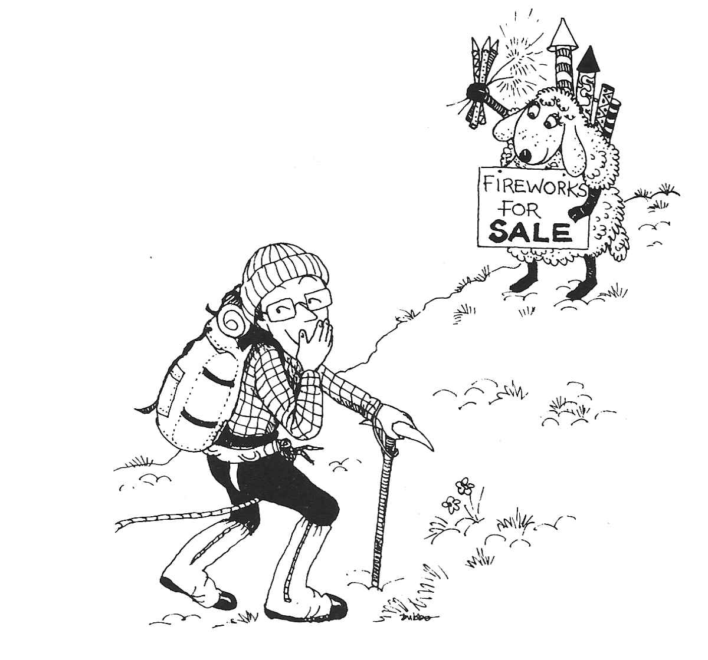
Figure 27: La Grande Epique
Figure 28: La Grande Epique

Figure 29: La Grande Epique

Figure 30: La Grande Epique
- Route Major
The summer of 1986 was a good one in the Alps with a long period of settled weather early in the season. I was camping at Pierre d'Orthaz opposite the infamous Snell's Field. Unlike Snell's, Pierre d'Orthaz has the advantage of being "legal" and thus one's gear is not likely to be transported to the Gendarmerie whilst one is away climbing a Route.
I had been in Chamonix for a few weeks so had already climbed several Routes and was quite fit and well acclimatised. I had always wanted to climb a Route on the Brenva Face of Mont Blanc and the meteo was predicting at least two days of good weather, so this seemed like a good time to try. The Brenva Face is one of the largest and most impressive in the Alps. Situated on the Italian side of Mont Blanc, framed between the Brenva Ridge and Eckpfeiler Buttress, it over a mile long and the Face itself is 5000 feet high. Since it faces directly into the morning sun, an early start is essential to get above the seracs which dominate the lower part of the Face and to escape the avalanches which sweep this part of the Face during the day.
The Face was originally explored by T. Graham Brown with various partners in the 1930's. During this period he climbed the three Routes for which the Face is famous: Route Major , Sentinelle Rouge and The Pear . All three routes are impressive, tackling the biggest face on the mountain and leading directly to the summit. There are no great technical difficulties but all the routes are exceptionally long, are at high altitude and there is considerable objective danger from avalanches. I particularly wanted to climb Route Major which takes the great snow ice buttress defining the left hand side of the Great Couloir in the centre of the Face.
I had arranged to tackle the climb with Gareth, a Scot, who had climbed the Brenva Ridge a couple of weeks earlier with some mutual friends. They had in fact been planning to climb Route Major but after first getting lost trying to find the hut and then failing to traverse far enough across the bottom of the Face a common mistake they had ended up on the Brenva Ridge . Near the top of the Route one of the party who was not acclimatised had then got into difficulties and it had taken them a very long time to climb the final slopes leading to the summit of Mont Blanc. Just below the summit they had also come across two other Brits who had climbed the Cecchinel Nomine route on the Eckpfeiler Buttress. One of them was in a bad way, had collapsed from exhaustion in the snow, and had to be helicoptered off but that is another story.
We decided that the best way to tackle the Route was to travel light and climb quickly, moving together, in order to minimise our exposure to objective dangers. We took only one nine millimetre rope, two rock pegs and two ice screws but we had plenty of food, most of which we ate at the hut before starting the climb. I had no spare clothes and the only item in my rucksack during the climb was a cagoule. The Route would be a three day trip from Chamonix: an afternoon to reach the hut and an overnight ascent climbing the Face while it was frozen into immobility , followed by a bivouac in the Vallot hut just below the summit of Mont Blanc. The next day we would descend via the ordinary route to Chamonix.
Just to gain access to the Brenva Face from Chamonix is quite an expedition in itself. The first stage is to take a telepherique to the summit of the Aiguille du Midi easy on the legs but hard on the wallet and to descend into the Vallee Blanche which is traversed to one of two huts, the Ghiglione or the Fourche. Finding the huts is a problem in itself, since both are situated on a ridge overlooking the Brenva Face and are very difficult to locate from below. I had been to both previously but I never knew which hut I was going to end up at until I actually arrived there. Following tracks on the glacier, we climbed up a steep icy gully to the crest of the ridge and finally arrived on the balcony of the hut about six in the evening it was the Fourche.
The hut itself is very small, sleeping only eight to ten people, but the view is outstanding since from the balcony the whole of the Brenva Face is clearly visible. Leaving the hut would be particularly exciting, an abseil from the balcony onto the glacier below being necessary. It is definitely not a place for sleepwalkers. From the hut our line of approach would cross the upper part of the Brenva Glacier, climb over Col Moore and then traverse the bottom of the face until below the large rock tower, the Sentinelle Rouge . Climbing up slopes of snow and ice to the Sentinelle Rouge we would then traverse the Great Couloir to reach the foot of the great rock ice buttress which forms the substance of the route. All this section is very exposed to avalanches and consequently must be completed at night. The buttress provides the most difficult climbing but is safe from objective danger and leads to the summit ridge between Mont Blanc de Courmayeur and Mont Blanc.
The hut was full of Italians who were intending to climb the Brenva Ridge with a guide and also two other Brits who were planning to climb the Frontier Ridge on Mont Maudit. We managed to squeeze into a corner near to the door next to a couple of inscrutable Japanese and began to cook our food. This annoyed the Italians who complained that the stove made too much noise and was keeping them awake. Ignoring the protests, we carried on cooking and filled ourselves with spaghetti and baked beans. Just after we had finished and the Italians had returned to their slumbers, a couple of Scots lads arrived and began to cook their food, once again arousing the Italians' ire. We had a brief conversation with the two Japanese and discovered that they also planned to climb Route Major the next morning.
It proved impossible to rest in the crowded hut, so we abandoned our plan of staying there until 2.00 am and left at 11.00 pm instead. Someone had kindly left a rope hanging from the balcony of the hut but it was only after abseiling to the end of it that we discovered that it stopped thirty metres short of the glacier. Gareth was not impressed, but luckily it was too dark to visualise the consequences of a slip. Some quite tricky climbing down steep ice and chossy snow lead down to a final leap over the bergschrund onto the glacier.
Roping up, we started to plod across the glacier towards Col Moore. A nearly full moon illuminated our progress in the icy cold of the night and we congratulated ourselves on our good fortune. However, a few minutes later, and as if to spite us, the moon disappeared behind the summit of the Blanc and everything suddenly went dark. Switching on our head torches we carried on over the Col and began to traverse below the Face across the avalanche prone gullies. Huge blocks of ice littered the glacier, evidence of the avalanches that fall here during the day. At this point Gareth's head torch went out and we had to stop and take it to bits not easy with freezing hands and in the dark but could find nothing wrong. We re assembled it and as if by magic it started to work again. Looking back towards the hut we could see the two head torches of the Japanese as they began their descent onto the glacier.
Gareth was determined not to repeat his previous mistake and we continued for what seemed like miles across the bottom of the Face until, above us, we could see what appeared to be the Red Tower . Crossing the bergschrund in order to get established on the Face proved tricky, as the upper lip was covered in unconsolidated icing sugar. Burying my axes in the snow up to my armpits I managed to mantleshelf and did a belly flop onto the slope above.
Shortly beyond the bergschrund the icing sugar changed to hard ice and we were funnelled into a wide gully. Rounding a corner we found ourselves below some small seracs, but avoided these by climbing a small ice ramp which split them. The gully then became wider and we could see at an indeterminate distance higher up what we assumed to be the Sentinelle Rouge . The climbing was quite tiring because of the hard and polished surface of the ice. Small chips of ice slithered down the slope towards us and below we could see vast piles of avalanche debris at the bottom of the Face.
After climbing some distance up the slope it became obvious that what we had thought, in our ignorance, to be rocks sheltering us from possible avalanches were in fact more seracs, this time much bigger and highly dangerous. The little slivers of falling ice now assumed a greater significance as we anticipated the really big fall which would sweep us from the slope. We were now clearly lost but had no alternative but to continue and we soon reached the seracs. Luckily we found an easy line, climbing them by one long but quite steep pitch.
Thinking that the danger was now past, our illusion was shattered as above us we could see yet a third and even larger row of seracs. After climbing over some smaller formations we arrived at the base of the main barrier. It was my lead and I was distinctly worried as I began to work my way up the steep ice. The climbing was very steep and the ice hard and dinner plating. I had no way of knowing if I would be able to reach less steep ground and a belay. Fortunately, I reached the top of the serac with about twenty feet of spare rope. Seconding this pitch was just as nerve racking for Gareth as the belay was a single ice screw and so the rope offered only an illusion of security.
Once we had surmounted the last serac we could see a rocky ridge up to our left and decided to make for this, thinking that we would be safe on its crest. The slope seemed to go on for ever as, acutely conscious of the need for speed, we climbed towards the rocks. Eventually we reached the foot of the ridge and found an easy gully leading to its crest. Safe at last, we paused for a good look around. Suddenly everything clicked into place as I could see the Brenva Ridge far below us. We had climbed the couloir and seracs to the right of Route Major and were now above all the difficulties and out of danger.
Far below us we could see the head torches belonging to the parties beginning their ascent of the Brenva Ridge . It was two o'clock in the morning and we had managed to climb 4000 feet of difficult ground: far from being slow as we had thought, we had in fact been climbing extremely fast!
Gareth was very annoyed at having missed his chosen Route twice in succession and we sat down to discuss what to do next. I was equally annoyed about having got lost, but was even more relieved that we were finally off the Face. However, it was still quite a way to the summit up a long and tedious snow slope which we both knew would be hard going at this altitude. Disillusioned at having failed to find the correct line, we had the alternative of descending the Brenva Ridge back to the hut, enabling us to return to the fleshpots of Chamonix that afternoon. This route would at least be sheltered from avalanches if the sun hit the Face before we had completed the descent.
The decision to go down was duly made and we lost height rapidly. Close to the bottom of the ridge I suggested descending a gully on one flank to save time instead of going all the way to the end of the ridge. However, at the foot of the gully we could not discover any way over the bergschrund and we were forced to traverse along the base of the Brenva Ridge to a point where the bergschrund narrowed. This lead us directly beneath the seracs overlooking the Gussfeldt Couloir! After jumping the bergschrund, we ran down the slope below and out of the fall line to safety.
Plodding back across the glacier we were treated to a magnificent sunrise over Mont Maudit but to complete our catalogue of errors we managed to end up at the Ghiglione hut. Shortly after our arrival there was a tremendous noise and on rushing outside we saw a massive avalanche from The Pear seracs sweeping the route we had been climbing. We retired to bed, suitably chastened, for a well earned sleep. Later in the day, as we left the hut to go back down to Chamonix, I had a good look at the Brenva Face and saw that whilst we had been sleeping there had been another avalanche, this time from the seracs above the Gussfeldt Couloir below which we had traversed on our descent.
The walk back up the Vallee Blanche proved extremely tiring and we only just caught the last telepherique down to Chamonix. When we got back to Pierre d'Orthaz the lads told us that two people had been killed on Route Major the previous night and they had thought it must have been us. Luckily we had got back before they had sold our gear!
The next day we wandered into the Guides Bureau and looked at the Definitive Routes Book. It seemed that no one had previously climbed our line so it would appear that we had done a new route by mistake, although I doubt if anyone will wish to repeat it. We asked about the two people who had been killed. A Guide told us that two Japanese had been overwhelmed near the great Buttress by an avalanche. This had happened at just about the time we should have been climbing the Buttress had we left the hut when we had originally planned.

Figure 31: Chris Wright at Water cum Jolley
- From Toothbrush to Sledgehammer
The winter of 1985 86 was The Castle Mountaineering Club's biggest climbing triumph - yet not many members know the true extent of the Club's success. More new routes were claimed on one crag than probably all The Castle's other first ascents put together.
The "secret" Quarry is situated on the right as you travel up the road from Stoney Middleton and is accessed via a gate and track which leads to the quarry base. The main wall, which is almost vertical, extends some hundred feet in height to a huge ledge which effectively splits the face, forming an upper tier of fifty feet.
When Steve France, Chris Wright and Ian French entered Horseshoe Quarry for the first time, the true potential of the place was finally realised. Its loose and dangerous condition was enough to put anyone off, but what was required was a bit of vision and imagination and between the three of them there was certainly that. The Big Question was, would they be wasting their time developing an area which nobody would bother to visit? Only time would tell, but the first thing to do was to clean the place up and to make it worth climbing on. It didn't take long to realise that any glory to be had would not come cheaply.
At first the usual gardening equipment was used - wire brush, toothbrush, small trowel and broddling stick but it didn't take long to realise that these tools were totally inadequate. Steve had started to clean a small ledge on his first new route and after shovelling at least half a ton of rubble discovered he no longer had a small ledge but a huge belay stance for about a dozen people. Furthermore, the bigger the ledge got, the shorter the route became, as he slowly filled up the quarry bottom with its debris. Steve later became known as the Mad Axeman due to his mean short pick-axe which he used for levering off small flakes, boulders, in fact anything that moved or didn't but that is another story .
In the early days of development, huge amounts of rubble and rock were detached in order to clean up the cliff face. This was not just confined to the routes themselves but the rock was generally cleared all over in a desperate attempt to make the place safe and more appealing: apart from that, "spoffing" blocks happens to be bloody good fun. The biggest trundle was a gigantic hanging pinnacle weighing at least five tons, situated half way up the wall on the left hand side and poised ready to fall at any time. The Mad Axeman picked away at its footing like a masochistic dentist but alas failed in the attempt. The next day, not to be outdone, the giant tooth was attacked again but this time with a large pick and a six foot long crowbar. The resulting "bavoooooom" must have been heard for miles. Well worth the effort!
The most controversial decision was the use of bolt protection . Due to an instinctive desire to live, bolts were necessary having regard to the quarry's lack of natural fault lines, which meant that there were few if any runner placements. Even pegs were bottoming after only an inch of penetration. Sounds painful! By strategic placing, it was in fact possible to use only four bolts to protect a hundred feet of climbing these were pre-placed during the last stage of the cleaning operation.
The actual leading of the routes was in accordance with modern day ethics done without practice or top rope - to make the ascent as pure as possible. Even this was not pure enough for Steve Ralph who at a later stage amazed us all with his "clean lead on sight" policy.
Developing the upper tier also had its problems due to the lack of abseil points at the top. So Chris and Steve had to sledge hammer a series of belay stakes into the ground each day these they buried under piles of stones to prevent others from using them until the routes had been claimed. The top was very reminiscent of Millstone with its loose shale and grovelling finishes and so platforms were dug out of the sloping earth to enable everyone to actually finish the route instead of wondering if the protection was good while free falling! This also had a second advantage in that it prevented a constant dustfall down the rock face, previously inevitable whenever the wind blew.
As with the main face, there was plenty of loose rock to detach on the top tier. Unfortunately it had a tendency to roll over the lip of the main ledge and go crashing down the main wall below. Although this was two for the price of one, everyone had to know where everyone else was and anyone who decided to go walkabout did so at his own risk.
By the time of the New Year, Ian had finished four of the main lines on the lower wall, including Megalithic Man and Ancient Rhythm . Steve had completed his excavation of the ledge and named the ensuing route Nice Face, Shame About the Ledge . Chris, who by now had the misfortune to be working for a living, had half cleaned a route on the lower face but then decided to join Steve with the Upper Tier development with his eyes set on Mr Blue Sky .
However, all good things must come to an end and the word was finally out, bringing visitors to the quarry. The self indulgence of eating the cherry cake might have to be shared!
The fun now began in earnest because many routes had been cleaned but not led - including the one Chris had started cleaning earlier and this was the route which another group was eyeing up first! There was no time to lose but Chris was at work and not available until the weekend, so the honours went to Steve who climbed the route and called it Shot Yer Bolt . Not surprisingly, Chris was displeased, so Steve gave him one of his unclimbed cleaned routes as a peace offering - subsequently named White Dove . During the next few weeks a spate of ascents were made and the pressure to complete new routes was reduced.
Ian Barton and Steve Ralph now entered the quarry with the promise from the trio that there were new routes to be had, especially at the lower end of the gradings. Ian wasn't impressed but made a token gesture of several rock routes and an ice gully at the back of the quarry. Unfortunately or fortunately! only one of Ian's routes were attributed to him in the guide book and Steve Ralph received the honours instead. In fact Steve R. was "given" quite a few routes he knew nothing about, due less to the generosity of the new ascentionists but more to their embarrassment in owning up to them! This may be unfair to Steve R., but perhaps due to the loose, dirty, and dangerous routes which he led, he asked for it!
There is a true report of a pair of French girls who recently visited the quarry, and after no success in climbing the higher grades, were kindly directed towards the Bimbo … routes. After struggling and cleaning for an hour and a half they finally screamed "Quelle Masse de Garbage" and walked away feeling totally disillusioned with British Climbing.
After four months of digging, the novelty finally wore off and the very sight of a wire brush or shovel prompted a baulk of revulsion. Altogether, thirty five routes were climbed by The Castle with sixteen of them being attributed to Steve Ralph. As for the original trio, they all succeeded in their secret desire to bag their first 6b virgin ascent. With all the best lines gone, The Castle left the quarry to the droves of scavengers that poured into it. The potential for new routes was still as strong as ever, although much of the remaining surface contained loose rubbish. It was nice to see the interest that the quarry provoked but in the long term it will probably suffer from enthusiastic young leaders willing to climb anything, however loose, for the sake of immortality.
On visiting the quarry today you will usually find several parties climbing there. The original vision of Ian, Steve and Chris has finally reaped its reward. The rock dries exceptionally quickly and, coupled with the bolt protection, makes it an ideal crag for the winter or wet. Unfortunately the routes at the lower end of the scale tend to reflect the nick name Horseshit Quarry but if you do routes of 5b or harder you may well be very pleasantly surprised, although probably knackered as well.
- Western Gully, Black Ladders
"This is going to be a straightforward climb with no epics or benightments. I've done the route before, it's grade IV and we are going to make a really early start, so there is no chance of getting benighted." Knowing grins were exchanged by the others.
The route in question was Western Gully in North Wales. The climb is on a crag called The Black Ladders Ysgolion Duon in the heart of the Carneddau. Next morning I kept my resolution about making an early start and we were away from the hut by 5.00 am. I also had a very strong partner in the form of Caveman Andy so success and descent before the pubs closed seemed assured, as we drove round to Bethesda and began the long walk up Cwm Llafar.
The first setback occurred when we arrived at the bottom of the gully at about 7.00 am to find that everyone else had also got up early. I suppose the route's inclusion in "Cold Climbs" accounts for its popularity, as people add it to their tick lists. Two parties were already established on the first pitch with numerous others waiting their turn at the bottom and we could hear sounds of others higher up the gulley. Andy and I geared up surreptitiously to one side of the crowd and when we were ready, played our trump card. Cheating outrageously, Andy led up the steep frozen turf to the left of the first ice pitch. The crowd fell silent and stared at us, amazed that we should manage to outflank them by this simple manoeuvre. Andy reached the first stance having successfully overtaken two parties and I climbed quickly to reach him. We were now near the front of the queue and, moving together on the easier section that followed, we overtook all but one pair.
Catching up with the two at the front of the queue just below a steep section, I belayed and brought Andy up to me. The pair in front of us had managed to get their ropes into a bit of a tangle so we had to wait while they sorted things out. Looking up at the continuation of the gully there was hardly any build up of ice, with only a veneer of verglas and a dusting of powder snow covering the rocks. Eventually the way was clear and Andy set off up the next pitch. This was a narrow chimney with an awkward exit at its top. Climbing in his usual fast and efficient style he had soon reached the next stance, making it all look easy. When it was my turn to follow I found the ground anything but straightforward and struggled to get out of the chimney.
The team in front of us were now at grips with the famous chockstone pitch. The leader had inserted a peg upside down in the roof and was busily knocking all the ice off the steep wall which is the key to avoiding the overhang formed by the chockstone. Eventually he overcame the chockstone but took even longer to get up the remainder of the pitch while we waited our turn in the icy cold of the cave under the chockstone. At last he was belayed but his second struggled on the first section out of the cave, demolishing the remaining ice before disappearing into the chimney above. Eventually it was my turn. I climbed easily up to the peg but several attempts to climb the wall to one side of the chockstone were repulsed by the lack of ice and resulted in clattering descents to the floor of the cave. Finally I managed to fix a wire in the roof of the cave and using this for aid, I reached over the chockstone. Jamming my axes in the crack above the chockstone, I heaved myself up around it.
I was now in a very precarious position in a narrow chimney, but a few feet above me it widened and after a few rapid bridging moves I was able to wedge myself securely. It was only then that I noticed a peg below my feet just above the chockstone and which I had failed to see in my previous haste. There was no prospect of other runners nearby so I reversed the previous delicate moves and reached down, managing to clip into the peg at full stretch. Regaining my wedged position, I contemplated the ground above. The narrow chimney continued with just a glaze of ice on the walls, enough to make normal rock climbing impossible but not enough to allow for the use of Chacals and crampons. I did not fancy tackling any of this without some more runners but the only obvious crack was too small to take my one channel peg. After I had relayed my feelings about the lack of runners to Andy, he asked two women who had just arrived in the cave if we could borrow one of their pegs. While the peg was being sent up to me I overheard a snatch of Andy's conversation with them.
"Do you know Dai Lampard then?" "Yes, quite well, he's my husband!"
Even their smallest peg proved to be too big and eventually I threaded a sling around a thin icicle, convincing myself that it would hold my weight if I fell. However, there was now another problem: the chimney was too constricted to climb with a sack. Further contortions enabled me to remove the sack and hang it from the icicle. As I struggled to climb above the sack, the ice shattered and all four points of contact parted company from the ice at once. I began to slither down the chimney, the icicle thread broke as my weight came onto it and I was heading down over the chockstone onto the boulders underneath. Luckily, with my Chacal I managed to hook the crab clipped into the peg above the chockstone. This arrested my fall but I was now tangled up in the ropes and the sack. After tussling for a few minutes with the tangle of gear while hanging on with one arm, I managed to get sorted out and was once again safely wedged in the chimney.
A further session of digging out likely looking cracks resulted in a hex hammered into the back of the chimney. I now hung the sack from this and set off again up the chimney. This time I was more careful with the ice and reached a better thread round an icicle about twenty feet higher up. Above this the difficulties eased slightly, the ice got thicker and I was able to rest. At the top of the chimney there was an awkward move out onto a slab but a hairline crack provided a good placement for a knife blade. There was one final small bulge and I was then in a second cave with massive spike belays to which I thankfully lashed myself.
Looking back down the gully as I took in the rope and started to bring Andy up, I could see that all the other parties had given up and were abseiling off. Andy climbed whilst I alternately took in one rope with the sacks attached and then the other rope with Andy on it. "You had better get your head torch out" he said as he arrived, "It'll be dark soon." Looking at my watch I saw it was nearly four o'clock! We had been on the route for over nine hours although it had seemed far less.
The next pitch was quite short, up a slab onto easier ground above. In good conditions the slab is covered in ice but, on this occasion it was just dusted with powder snow. Andy balanced up to a peg, crampons scraping on the rock and then mantleshelved onto the peg. A few more delicate moves above this and the climbing was easier. When my turn came to follow I was impressed with his efforts as I found the climbing very insecure and was glad that I hadn't had to lead it. By this time I was completely knackered so Andy offered to lead on. The next pitch was straightforward with only one awkward boulder to surmount. Above this the climbing became easier and we moved together on the upper section of the gully to the top.
As I emerged Andy walked forward and shook my hand it had been a great climb.
It was a starlit night with perfect visibility. "There should be no problem getting off. All we have to do is to follow the rim of the cwm round keeping it on our left and then go down the easy slope to the bottom of the crag," I said.
We set off, keeping close to the edge so as not to lose the way. After some time I was convinced that we had reached the point at which we should descend into the cwm. However, I had nagging doubts there were lights in the valley below, where there had no right to be any and the steep descent that I remembered was an easy angled slope. We kept on going, eventually reaching the bottom, but it did not look anything like Cwm Llafar. After walking down the cwm for some time Andy shouted that he had found a tarmaced track. Suddenly I knew where we where. We had descended into the Ogwen valley and the lights in front of us were in fact those of the hut!
Soon we reached the hut and walked in to hoots of derision. This was the second week in a row that I had descended in the dark and walked off the wrong side of the hill!
- Prince Charlie's Castle Tramp
The idea was dreamed up in Culra Bothy on a dark November night. The parents-in-law were in New Zealand and had taken to backpacking and bothying. Soon they were to retire, so what better than a short backpacking trip for them around the Scottish Highlands? What evolved was a 200 mile trek through the glens, linked with some stretches of imagination to the stravaigings of Bonnie Prince Charlie. There was perhaps even more of a link with the wanderings of the CMC and these came to mind from time to time as we acted as support party for the walk.
The Tramp started at the Prince's Cairn on Loch nan Uamh whence it is but a short sail to the Isles. The Cuillin of Rhum, visible from the hills between here and Lochailort Hotel, brought to mind the climbs and scrambles on that ridge, of nights in Dibidil Bothy, of bivvies on Allival watching the sunset and the flying bunnies returning to their nests after a day's fishing and of a descent from Orval in thick cloud down a steep gully with Andy and myself leading only ten feet apart and our compasses pointing in opposite directions. The Tramp continued now across wild country to Oban Bothy on Morar where the isolation became apparent when a maternal shoulder was dislocated crossing a swollen burn and we evacuated by Glen Pean.
The Bothy here was now deserted, unlike our visit late one December when our sleep had then been disturbed at 3 am. Morning revealed two bodies upstairs and two crates of whisky downstairs and by evening, crowds were appearing through the blizzard from all directions and the wall was stacked high with whisky, beer, turkeys and more. St. Andrews University MC were celebrating New Year here in true Scottish style, including a midnight swim in the burn by the President who'll suggest at the next AGM that we adopt this tradition? Undeterred, we started to cook the curry in a quiet corner, until a snowman appeared and asked if there was anyone from Sheffield with a ginger beard. Our friends had gone to A'Chuill Bothy, he informed us. A moonlit walk with a half-cooked curry took us in a few miles to this darkened Bothy where at 8 pm we awoke Andy and Rosy and two strangers, lit some candles and continued cooking the meal. Mice rats? nibbled at the left overs while we slept.
We passed above A'Chuill again the following year as we continued the next stage of the Tramp, across to Kinbreak Bothy and then to a camp in Glen Loyne where the river rose three feet in the night. Decadence and the Cluanie Inn. Cluanie, land of the Five Sisters, the Seven Brothers, the Three Uncles, the Two Grannies and the South Cluanie Ridge, where in years gone by Rosy had drunk a stream dry and Drew had tested a home made tent almost to destruction.
The route now took us on through Glen Affric, where we had once spent an Easter of hot sun and melting snow and saw no-one for a week, and where we ticked off Bens Chrysanthemum and Sod-All where the Youth Hostel was left open and unlocked and was inaccessible by car. On to Fort Augustus and Loch Ness with not a tick in sight and then the General's Road over the Corrieyairack Pass where mother in law broke a foot in steep snow and hopped three miles to the camp at Melgarve. Blue skies now over Creag Meagaidh, where a decade ago we had walked in a circle in a blizzard while the rest of the Club played hide-and-seek on Carn Mor Dearg, tempted by Mike's slides of perfect weather on the previous year's Glen Roy meet.
The Tramp continued again the next year, but after two mishaps I left Jenny to act as support on her own. For mother-in-law to be injured once might be a misfortune, twice might be carelessness, but three times…! And so past Garva Bridge from which we had skied up the Monadhliaths, but now on to Pattack and Culra Bothies. No time to call at Ben Alder Cottage where the Club had kept the evil spirits at bay by liberal use of the more benign malted type. Loch Ossian and its rail access hostel, Loch Treig and on to Meanach Bothy. Fourteen years previously, we had used it before the Mountain Bothies Association had fitted windows and doors. Straw beds and clear skies with a million stars through the open window at night, sun, snow and ice on the Grey Coires by day.
Beyond were the Aonachs and memories of setting off one clear October day from Glen Roy, stoked by egg and bacon served in bed in a frozen tent at 6 am, Al and Kate ahead driving erratically as they spotted birds at dawn and from the summit, distant views of all the Highlands. Cool enough for us but still too hot for Jimmy to put a shirt on. Back in Sheffield two days later, Mike's tent was still frozen, but his throat was still hot from the vindaloo curry and gluwein which I had served at the end of the previous day. The Tramp took us on past Binneins Mor and Beag and the lochan between where the Club once swam one wet day in July. So on to Mamore Lodge, a friendly place for mountain folk - what a change from many years ago when an innocent new member took up an offer to join Mike Munrotic for a walk in the Mamores. The alarm went at 6 am when Mike's ample rear end hit the floor at Lagangarbh after a direct descent from the top bunk. At 7.30 we drove up the private road past the Lodge and were soon afterwards on the first Top, Am Bodach. By eleven the Gearanachs & Garbhanachs were done, three more ticks, and there was just "that little conical job over there" to do to complete Section Four. No messing about over Na Gruagaichean and Binnein Mor for Mike: the direct route by a three mile traverse across the rough heathery coire to Binnein Beag, but rewarded by the sight of red deer in their thousands . Last tick of the Section and back to the car. Two flat tyres but Good Scout Mike was prepared with a hand pump and we were off towards the Lodge.
"Daddy, Daddy, they're coming!"
There followed a short legal discussion on the law of trespass in Scotland from my solicitor to the local keeper whose response sounded remarkably like "Bugger Off". The welcome is now of a better type, but with all rooms taken we camped by the pond and ate and drank in the bar. The tourist route of the West Highland Way passes here and we followed it now before leaving the ant-trail to cross to Corran ferry.
Across in Ardgour, Glen Scaddle led to Resourie Bothy where one Christmas the two of us collected so much wood in just an hour that we spent the whole evening trying in vain to burn it all. Beyond is Ben Resipol where one New Year a Castle group inched on their stomachs towards the summit, precariously anchored by their axes in a blizzard with ferocious winds. We failed and evacuated by the nearest gully which led to the bogs by Loch Shiel. Next day the tabloids screamed "Gales Lash Britain" and a neighbour later said:
"Yes, it was a bit windy, our dustbin lid blew off."
Warned of the bogs, the two pensioners completed the Tramp by first rowing six miles down Loch Shiel to the new Hothersall Bothy at Langal for the night and then another two to Acharacle before the path to their final bothy at Druimnich, where a number of the Club have been conned into transporting large chunks of oak and birch, seemingly for miles across hills and bogs, to keep the winter fires burning.
When there's nothing left to tick and the last table of the Scottish hundred footers has been put away, you can always invent a walk though the glens to see you into your Seventies. Castle memories await you there.

Figure 32: Summit of Ben Avon Cairngorms
- A Three Second Route
A summer evening's gritstone climbing what more could you ask for? Hilary and I walked up to the "Unconquerable" area of Stanage to meet various friends. Pippa and Lisa were just starting Right Unconquerable HVS . I had made the mistake of climbing Little Unconquerable once before, a VS overhanging gritstone crack, so that was out. What was left? Well, that was it - Left Unconquerable , E1 5b a route I'd been eyeing up for some time.
The short crack which it shares with Right Unconquerable leads to a small ledge, then the crack continues steeply to some overlaps. The next bit, a sort of awkward lay away, is the crux after that, big holds up the final steep section lead to the top.
I unpacked my sack. I'd just bought some new rock boots, B3s, only 25 I can't resist a bargain! but I hadn't tried them out yet. Lisa was amazed that I was going to wear them for the first time on this particular climb. I reasoned that they had to be better than my Crag Rats and that I needed all the help I could get. I'd been away and hadn't climbed on gritstone for some weeks.
I started badly. I took at least ten goes to climb the first short supposedly straightforward crack. The boots were incredibly uncomfortable: why do they always feel alright when walking round the shop? I started up the steep crack, putting lots of runners in I'd got far too much gear as usual, so I might as well get rid of it. By the time I'd reached the overlap my arms were screaming I spent a while getting Friends in the horizontal crack and then my ethical stance lowered somewhat.
"Can you hold me on the rope, Hilary?"
Oh, the relief of being able to let go with my hands! A good while later, I'd rehearsed in my mind the moves I needed to make and psyched myself up ready to go.
"OK Hilary, I'll have another go!"
First get the feet in the longitudinal crack another small ledge a bit higher, lay away with the left hand , reach up with the right not much of a hold that! Now, keep going another couple of moves and I'd reached the big jug with my left hand marvellous, I'd done it. Or had I? I just needed to get my left foot up on that hold and it was still some inches away. My hands wouldn't work: I was staring at my fingers willing them to stay there but I saw them slowly uncurling. Whoosh! Suddenly I was twenty feet lower down, hanging upside down, staring stupidly at Hilary. She had been sitting down and had been lifted off her feet as I fell. I felt surprisingly little jolting it was the first time I'd fallen when leading unless you count a fall from about eight feet up a route when my landing was cushioned by my second's head . I swung the right way up, pulled myself back to the steep crack, clipped into a runner and hung there to take the weight off Hilary and to have a rest. So near and yet …
The others were hoping I'd give up. The midges were biting and the pubs were open. No chance! I knew I could do it. I'd done the hard move. I'd just have to do it quicker so I didn't run out of strength next time.
By this time Pippa had completed Right Unconquerable and so had Lisa. They were getting ready to go. Pippa, thinking that Hilary would like a rest after belaying me for about an hour, took over from her. I struggled back up the crack to the overlap. I was trying to conserve energy as my hope of a clean ascent was now long gone and I rested often. At the overlap I rested a good while on a runner, long enough to thoroughly bore Pippa, who now handed over to Lisa my third second on this one route.
Realising it was getting dark and that the pubs would soon be shut, I gathered my energies for a final assault. Where were those hand holds? There's the jug! Now, fingers, STAY WHERE YOU'RE PUT this time. Will my foot reach that hold? Yes! Made it!
I collapsed, puffing and panting, above the crux. Encouraging noises floated up from below. Just the last bit now. Let's get a runner in don't want to do that again. Suddenly, there I was at the top, a slight breeze trying to blow away the midges. Up came Hilary and Lisa, congratulating me. My first E1 on grit. Maybe I'll do one properly some day.
Figure 33: Autumn at Stanage

Figure 34: On The Mamore Ridge
- The Munros a Personal Pilgrimage
A number of small groups tackled the last few hundred feet of ascent over slabby rock pavements and areas of stone and gravel. The bare slopes held pockets of wind blown snow and the clumps of grass were encased in frost and rime, forming masses of exquisite white patterns. Eyes strained through the dense mist for the elusive summit until we finally arrived at the ice encrusted cairn. A full bottle of a favourite liqueur whisky was produced with matching glasses, a real touch of class that! and the congratulations of everyone present were eagerly offered and gladly received. For me it was the culmination of a personal pilgrimage which had started long before…
My family had settled in Sheffield in 1947 and it was in the wild moorlands and beautiful countryside of the delightful Peak District that the foundation of my love for the hills was well and truly laid. I first visited Scotland as a student in 1957 and my first Scottish ascent was of Cairngorm from a wild and stormy campsite at the head of Loch Avon. The vast scale and magnificent wilderness of the Cairngorms made a deep and lasting impression on me but, apart from a solitary trip to Glen Nevis, eleven years passed by before I joined the CMC and at last found the opportunity of visiting Scotland on a regular basis.
The Club had been founded in 1967 by Alec Barclay, an expatriate Scotsman whose apparently unlimited energy and enthusiasm soon attracted a keen following and ensured the Club its future success. Vital features in the attraction of the Club were the emphasis on individual inclination and achievement and the complete absence of unnecessary regimentation. Mountaineering with the Club was always enjoyed with the greatest of relish and the away meets in particular were awaited with keen anticipation, each one an adventure for those fortunate enough to be able to take part.
My first Scottish club meet was to Lagangarbh in Glencoe in 1969 when the only carload of enthusiasts also included Alec himself first Hon. Secretary , Colin Mackie first President , Chris Taylor first Treasurer , Kate Peek still a member twenty years later . The highlight was a thrilling traverse of the spectacular Aonach Eagach ridge in superb conditions of sunshine and mist during the only all too brief clear interlude in a weekend of torrential rain.
The first meet I organized myself was to Lochnagar the following October and in the years to come I attended every one of fourteen consecutive July meets in Glencoe and enjoyed visits to many different areas of Scotland at all seasons, particularly to the Cairngorms in the winter snows, establishing a welcome programme of unfailing interest and excitement.
In 1972, during the Club's first Skye meet and after an unforgettable day on the Black Cuillin, I discovered at the SMC hut in Glen Brittle a slim volume which was to transform my hill walking and result in a sense of commitment and direction I had not previously experienced. It was, of course, "Munros Tables" and a quick examination disclosed the enormous range of 3000 foot summits in Scotland, far more than I had ever contemplated. I had, it appeared, climbed only twenty three Munros and my exploration of the Scottish hills had scarcely begun. The thought of tackling them all fired my imagination and the long trail I then began to follow was to lead me over the years to endless hours, days and weeks of inspiration and delight.
A number of CMC members became equally attracted to the Highlands and the intensity of our weekend forays increased both in summer and in winter as the years rolled by, with early starts from Sheffield on Friday morning in order to tackle our chosen hill during the afternoon after our long journey. We would enjoy a very full expedition indeed on Saturday and a considerable outing on Sunday before dashing home in time to start work on Monday morning. More remote areas provided an excuse or reason for longer visits using bothies and youth hostels or camping in the wilds particularly successful and memorable expeditions included those to the Far North, Skye, Torridon, the Cairngorms and even a boat trip to the Western Sea Lochs. My most regular companion became Jim Thomson whom I first met on an early Cairngorm meet and who eventually completed his Munros in 1983 on the very day of his seventy third birthday when I had the great pleasure of standing with him on a remote summit in the Rough Bounds of Knoydart. My sons Andrew, John and Christopher have also enjoyed the hills and their arrival on the Scottish scene brought me added joy.
In the course of climbing the Munros, an appreciation grows of the great variety of Scottish hill scenery ranging from the massive grandeur of the Cairngorms to the incomparable excitements of the Skye Cuillin and from the sea views and enchanting situations of Western Highland peaks to the dramatic individual hills and ranges of the Northern Highlands. The quest for the Munros takes one the length and breadth of the land and ensures that many a fine hill is enjoyed that might not otherwise have been attempted. The contrasts of the seasons the wonderful clarity of the springtime views, the sunshine, rain and greenery of high summer, the glorious autumn colours and the superb snowscapes of winter all add to the unfailing interest and variety of experience.
The planning of an expedition, the commitment to set off for the summits in all weathers except the downright impossible, the determination to pit one's strengths and weaknesses against the demands of the task in hand even on days of rain, storm and blizzard that can on occasion make hill walking a taxing exercise all contribute to the challenge. The discomforts and occasional hardships are invariably amply compensated by the beauty of outstanding scenery and the majesty of the natural world, the heady excitements of ridge and crag, the abundant and precious wildlife and the companionship of good friends.
My ambition was to end my personal Munro trail in the Cairngorms where I had climbed my first Highland hill thirty years earlier this grand area of high wilderness, long distances and far horizons. And so it was, on a dark day in October 1987, that I found myself on that bleak summit nine miles from the nearest road, sharing a very special occasion with many of the friends and fellow members of the CMC with whom I had enjoyed so many wonderful hill days. I was particularly delighted that my dear friend Jim and my youngest son Christopher were both present an age range of no less than sixty four years! I had hoped for bright sunshine and great views but it was perhaps appropriate that we had chosen an autumn day requiring some measure of hillcraft.
After approaching this moment with ambivalent feelings, the end of my long pilgrimage proved in the event to be yet one more heartwarming experience after so many enjoyed on the hills over the years experiences which in relation to the Highlands could be renewed a hundred times without fear of duplication. I have had the good fortune of sharing my endeavours with proven friends who also love these marvellous hills they are too numerous to mention individually but they know who they are and that they enjoy my admiration and my gratitude: my heartfelt thanks to all such friends and in particular to my fellow members of the CMC.
- Sentimental Ramblings of an Early Club Member
The last time I visited The Castle Mountaineering Club clubroom was in August 1986, during a hectic trip to England to put our house up for sale, pack belongings, and say farewell to family and friends. Alan and I had decided to settle in Norway after an initial two year contract and the reason we'd taken the temporary appointment in the first place had, I believe, much to do with the CMC. More than twenty years ago, only a few months after the Club was founded, I became an official paid up member and apart from honorary members, I believe Mike Anderson and I are now the longest standing Club members. From that time on my love for the hills and wild open spaces grew hence the prospect of new hills, combined with months of skiing was too great to turn down.
My experiences have ranged from early attempts at rock climbing, being more or less hauled up Diffs on Froggatt, moist struggles up "The Buachaille" from the warmth and in those days squalor of Lagangarbh, suicidal snow ploughs in white outs down the White Lady on Cairngorm and dirty bog trotting days on Kinder, to classic climbs in Llanberis, back packing in the remoter parts of the Scottish Highlands, summer holidays in the French Alps and now, the thrills and pleasure of Langrenn skiing over mountains, through forests and even on the sea in a good winter , for several months of the year.
I have no claims to great conquests, either on rock or hill. I've never been one for seeking the highest, fastest or hardest and my one attempt at outdoor competitiveness was a farce. This was the first Edale Skyline Race and the late Don Morrison cajoled me into entering.
"You're fit," he said.
Well, I'd not run anywhere for nearly fifteen years and I was, in those days, a very heavy smoker! I came in last OK, many had dropped out by the wayside and when I arrived back at Edale, nearly everyone had packed up and gone home. A voice from the darkness cried:
"Well done Kate, you've come second in the ladies section."
Now, there were only four to start with and two of those had dropped out!
My only connection with anything remotely organized on rock and hill is that I did decide to tackle the Munros: I had in fact just reached a little over half way with my Munros when we emigrated to Norway and I haven't completely given up the idea of finishing them completely one day. Even the ones I tackled were often attempted in a very come day go day fashion: it was more a means of being attracted into areas I might not otherwise have entered.
Any "conquests" have been purely personal. A long, hard day in the hills has been pleasurable for the hours spent in wild scenery and possibly wilder weather with CMC members, people I've felt comfortable with, whose judgement I trust and respect in difficult situations, and with whom I've relaxed later over a pint. My rock climbing, by today's standards, has been extremely humble although in the early days, women climbers were still very much in the minority and I've received a fair dose of leg pulling and many strange remarks. I've led the odd VS and a few Severes but most of the time I've seconded. However, the highlights, to me, have been days such as the one on Dinas Mot, when I stood at the foot of Direct Route , my first long Welsh VS, and shivered in terror as I watched an International Party of climbers ready for their ascents on various routes. They all seemed to know what they were about. They were all clad in smart stretchy clothes and had chalk bags and confidence and I was still behind the times with thick breeches and sweaty hands. However, once my feet left terra firma all fear disappeared and on the last pitch I belayed, sat in the sun and chatted to other CMC members on a nearby route, content that I'd climbed the route well and enjoyed every moment.
My participation as a member of the CMC has, as for many others no doubt, altered over the years. In the early days of the Club I thrived on doing anything "en masse". Climbing was rarely a quiet affair between leader and second, but more an invasion of one climb by as many people as possible. I remember vividly Browns Eliminate on Froggatt being peppered with struggling bodies mine being one , all being top roped at the same time. It became like a child's puzzle, trying to trace back the rope to "which leader?" We even drove in convoy on away meets to Scotland! Safety in numbers? Would the natives attack us? Over the years I became more solitary and anti social in my forays into the hills, although I still enjoyed the getting together with Club members at the end of the day. And now well, not much chance of joining club meets very often from this distance, but I do have fantastic memories of past ones.
I would have liked to think that my five year old son Alisdair would have been able to grow up with the CMC. Alan and I took him onto Curbar Edge the very day he came out of the hospital where he was born and I said to him:
"This is air, these are rocks and that lump over there is Win Hill, I hope you'll learn to love 'em!"
We had taken him on several Club meets before, sadly, we had to leave the Sheffield area. However, those first impressions appear to have stuck and he is now knowledgeable on nature and accepts walking and the hills as a normal part of life.
Over the years, through the CMC, I've made some very good friends and now one of the greatest pleasures for Alan, Alisdair and myself is to welcome those friends here to Norway to enjoy our fantastic scenery and the many varied outdoor activities. Plus sharing a lot of nostalgia over the duty frees they bring!
Well, as I said at the beginning, my last visit to the clubroom was almost two years ago. There were many new faces but the atmosphere of a thriving and friendly CMC has little changed. I hope that all newer members and older ones alike can look back, like me, after twenty years of CMC membership and enjoy as many wonderful memories and as many good friends.
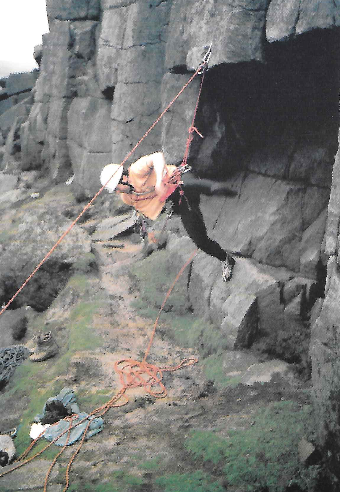
Figure 35: Dave Dunk on Marmoset Stanage Edge
- Grit Biter
In the summer of '86 siege tactics were employed on a twenty foot route at Stanage. Although the attempt was unsuccessful the style in which it was made inspired this poetic gem.
I watched a wind blown figure Below a roof of rock, A holey orange tee shirt And a badly darned left sock.
His right leg and his forearms Are quivering fit to bust, In another two short seconds He will surely Bite the Dust!
His Springer spaniel and his wife Both watch, devoid of hope, For the sixteenth time that afternoon He sags onto the rope.
"I'll give it one last try," he says, The chance must not be missed And so into that loathsome crack He jams his bleeding fist.
A few choice words he mutters And wears determined frown, But odd EBs kick at the air And he hangs there, upside down!
The watchers roar in sheer delight To see this latest antic, I fear this beastly little route Will drive our hero frantic. He will return once more he vows To do it in the wet! Perhaps, with helmet back to front, He'll catch you Marmoset.
- Some Thoughts on Mountaineering
Why climb mountains? This is a question which has been asked so many times over and is one to which it is difficult to give a satisfactory answer. The question is usually posed in such a way that a dramatic answer is expected but this need not necessarily be the case: mountaineers climb mountains for different reasons and these reasons can change each time an ascent is made. One reason may be the basic primeval urge to pit one's resources against what nature has to offer, but it might equally well be an escape from one's normal environment in order to release pent up pressures.
Whatever the reason, mountains are Nature's answer to these pressures and to involve oneself completely in their presence is an experience from which one returns refreshed and better able spiritually, physically and mentally to face up to life as we experience it.
My own involvement goes back to childhood days when a tree with plenty of branches presented a challenge and small outcrops of rock provided an outlet for youthful zeal. The war years afforded the opportunity to climb abroad in The Lebanon, Australia and New Guinea but since then all my climbing has been in Scotland, The Lake District, North Wales and The Peak District.
The late fifties marked for me a late self proving era when in the company of good friends I spent many weekends on the crags of Glencoe and Ben Nevis, rock climbing in summer and snow and ice climbing in winter. My companions of those happy days went on to to greater things and tragically many are now gone, having died on the very hills they loved so much.
I have remained actively involved in climbing and skiing in my time I have founded two mountaineering clubs, one in Sheffield and the other in Livingston near Edinburgh but no longer do I have the urge to tackle the impossible. However, one must guard against the ever present urge to modify difficulty. Organized society habitually seeks the smoothest way. With mechanization and labour saving devices, life has become so smooth that some of us seek a necessary corrective in grappling with rough undisciplined crags. For me, climbing has always seemed to embody some immutable principle: something stable in a changing world.
Many people look upon mountaineering as a dangerous pastime and believe that its devotees take their lives in their hands whenever they go climbing. But the average mountaineer probably does not incur more danger to life than a man who heartily goes in for any one of half a dozen favourite pastimes. Admittedly, there is an element of danger in serious climbing, but it is, or should be, a calculated risk. In climbing snow or rocks, familiarity does not breed contempt, but it does enable one to see things in their true proportions, to appreciate real dangers and to ignore imaginary ones, and particularly to gauge just what one can achieve personally. Climbing is a test of nerve, skill, endurance and judgement the climber should know his limitations and how far he can risk a move in safety. In proportion to the large numbers of climbers active on the hills, the loss of life by accident is in fact infinitesimal.
"A man is immortal 'til his work is done" and if he is ready for the call when it comes, he may just as well perish on a mountainside as be bowled over by a car, or succumb to fatty degeneration of the heart.
In Ruskin's beautiful words:
"Mountains are the great cathedrals of the earth, with their gates of rock, pavements of cloud, choirs of stream and stone, altars of snow and vaults of purple traversed by the continual stars."

Figure 36: Some Thoughts on Mountaineering
- Some Thoughts on Mountaineering
- Grit Biter
- Sentimental Ramblings of an Early Club Member
- The Munros a Personal Pilgrimage
- A Three Second Route
- Prince Charlie's Castle Tramp
- Western Gully, Black Ladders
- From Toothbrush to Sledgehammer
- Route Major
- La Grande Epique de la Petite Dent de Veisivi
- Death Race 2000
- Two Weeks Older, Years Wiser
- Welsh Rarebit
- One for the Pot
- Falling Off
- Eastern Edges Walk
- A Trek in the Andes
- May Day Meet
- Benighted on the Ben
- Boat Trip to the Western Highlands
- Bamford Edge
- A Brief Look at Lahul, Zanskar and Ladakh
- Rhinogs Meet
- Round Edale Walk or "Who Went Where and Who Said What?"
- Nanda Devi Sanctuary September, October 1977
- Traverse of the Cuillin Ridge
- The Search for The Drunken Duck or "Doesn't Anybody Want to Buy Any Petrol?"
- Ridge Routes in the Land of The Rising Sun
- Rumble Groove
- A Cautionary Winter's Tale
- The Castle Wall
- The Lundy Experience
- The Ascent of CMC Slab or Fighting off the Poachers
- Cairngorm Plateau Traverse